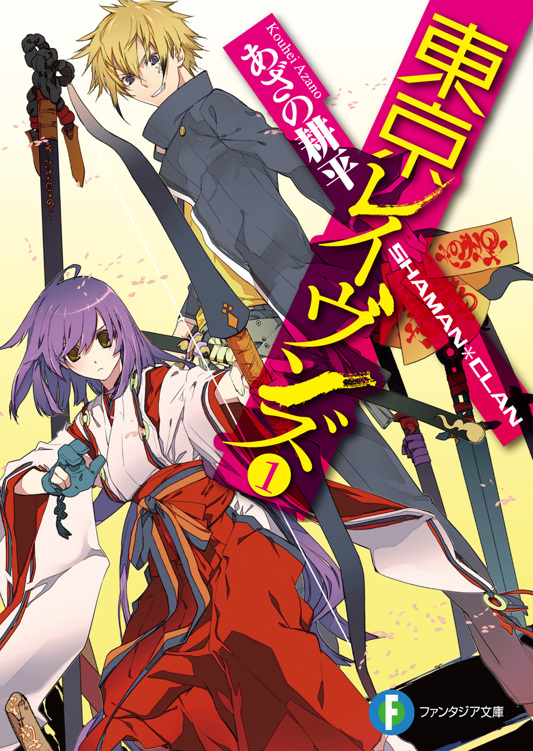
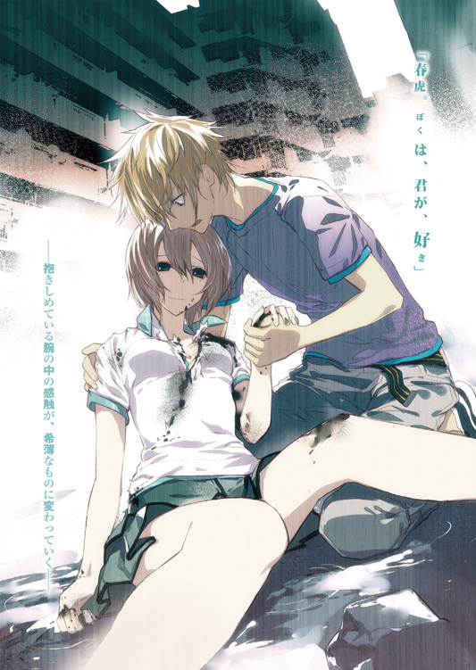
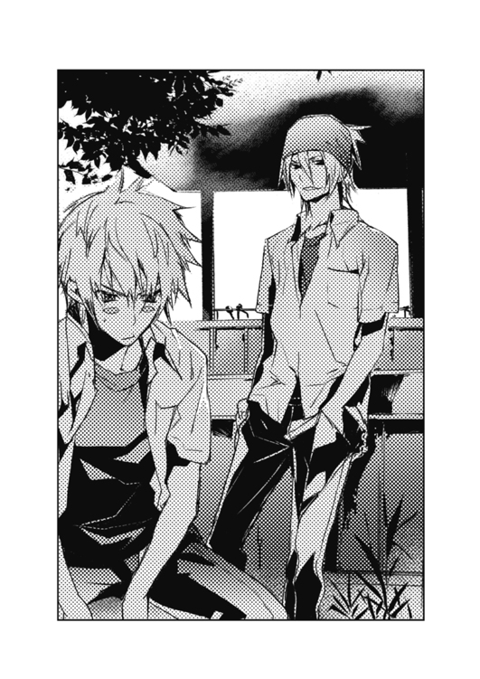

| 東京レイヴンズ1 SHAMAN＊CLAN | |
| あざの耕平 | |



東京レイヴンズ１
SHAMAN＊CLAN
あざの耕平
富士見ファンタジア文庫
本作品の全部または一部を無断で複製、転載、配信、送信したり、ホームページ上に転載することを禁止します。また、本作品の内容を無断で改変、改ざん等を行うことも禁止します。
本作品購入時にご承諾いただいた規約により、有償・無償にかかわらず本作品を第三者に譲渡することはできません。
本作品を示すサムネイルなどのイメージ画像は、再ダウンロード時に予告なく変更される場合があります。
本作品は縦書きでレイアウトされています。
また、ご覧になるリーディングシステムにより、表示の差が認められることがあります。
口絵・本文イラスト すみ兵
「呪術の神髄が何だかご存じだろうか？」
「答えは、『嘘』です」
──土御門夜光
一章 ある分家の息子
１
もう、何年も前の話──
親戚の大人たちが集まって会合をもつとき、春虎と夏目はいつも二人で遊んでいた。
やんちゃで怪我の絶えなかった春虎と違い、本家の一人娘だった夏目は、控えめで大人しかった。人見知りも激しく、友達らしい友達もいなかった。だから、春虎がやって来るときはいつも興奮して顔を真っ赤にした。春虎の言うことならなんでも聞いて、春虎の後ろにどこまでも付いていった。
二人の遊び場所は、本家の屋敷が抱えるいくつもの庭。
広大な庭の中には、竹林があり、池があり、石灯籠や築山があった。苔や昆虫や小さな社があり、驚きと冒険に充ちていた。
ただ、二人きりで遊んでいると、夏目は急に恐がり始めて春虎の背中に隠れることがあった。鬼ごっこで逃げているときや隠れん坊で隠れている最中でも、泣きそうな顔で飛んできて春虎にしがみつく。そして言うのだ。
何かいる。
わたしのこと見てる。
春虎の目には、何も見えないのに。
初めのころ春虎は、夏目が極端な恐がりなのだと思っていた。夏目の臆病を指摘し、宥め、最後には責めるようになった。
そんなに恐いなら大人のところに行けばいい。ぼくはひとりで遊ぶから、と。
春虎に責められると夏目は泣きべそをかき、しかし、そのうち黙って我慢するようになった。無理矢理笑顔を作って、春虎と一緒に遊び続けた。
春虎が過ちを知ったのは、夏目が「見える子」なのだと両親から聞かされたときだ。
夏目は恐がりなのではなくて、ただ春虎に見えないものが見えるだけなのだ。
ごめんよ。
そう言って春虎が頭を下げたとき、夏目は目をまん丸にした。春虎はとにかく必死で、自分が間違っていたことを全面的に認め、お詫びにこんなことを言った。
自分には恐いものは見えない。見えないから恐くてもへっちゃらだ。
だから、夏目が恐いとき、自分が夏目を守ってあげる、と。
すると夏目は急にもじもじとうつむき、それから何かを期待する眼差しで春虎を見た。
それは、シキガミになってくれるってこと？
そのときの春虎は、その言葉を知らなかった。シキガミって何？ 春虎の問いに、夏目は首を振る。わたしもよく知らない。でも、わたしのことを守ってくれるんだって。おばあちゃんが言ってた。はるとらくんは家の『しきたり』で、将来わたしのシキガミになるんだって。ずっと一緒にいて、守ってくれるんだって。
また春虎は首を捻る。
『しきたり』って？
決まりのことよ。わたしやはるとらくんのおうちの決まり。
そうなの？ ぼく、そんなの知らないよ？
でも、そうなんだもん。そういうシキタリなんだもん。
夏目はいつになく強い口振りで言う。大事なおまじないをバカにされでもしたように。春虎は困ってしまう。春虎が困っていると、夏目はまたいつものように、不安そうな表情を見せる。
それともやっぱり......シキガミにはなってくれないの？
声が震えていた。また泣かれる、と春虎は身構えた。
しかし、夏目は泣かなかった。不安で、恐くて、いまにも泣きそうなくせに、春虎を見る瞳だけは、少しも揺れていなかった。その瞳は、雲に届くほど高い山の頂に湧く、空と宇宙だけを映した湖面のようだった。そこには、春虎がまだ知らなかった種類の、峻厳な強さがあった。
その瞳に引き込まれるように、春虎は、いいよ、と答えた。
いいよ。ぼく、なつめちゃんのシキガミになる。それでずっと一緒にいて、ずっとなつめちゃんを護ってあげるよ。
夏目が右手を差し出す。小指が立っている。春虎も右手を差し出す。夏目の小指に、自分の小指を絡める。
夏目が呪文を唱え始めた。恐ろしく真剣に。春虎も唱和する。二人の声が、約束の呪文を紡ぐ。
手を放したとき、夏目はまるで人生最高の勝利を手にしたかのように、輝かんばかりの笑顔を浮かべた。その笑顔を見て春虎は、これで仲直りができたと思った。
ただ、なぜか夏目のように笑うことはできなかった。頭では良かったと思っているのに、心のどこかが妙に落ち着かなかった。まるで拳ほどもある飴を、丸飲みさせられた気分になった。
重たくて、苦しくて、でも吐き出せなくて──
舐めると凄く甘いのだ。
それから二人は屋敷の庭で、いつものように遊び始めた。夏目が恐がる素振りを見せる度に、春虎は何もないところに向かって、拳を振り上げ、勇ましい声を放った。夏目にしか見えない何かを、全力で追い払い続けた。
それが何であったとしても、決して彼女を傷つけないように。
──もう、何年も前の話。
まだ春虎が「将来」の意味をまるでわかっていなかったころの話。
２
輸送車が到着したとき、すでに辺りは瘴気に充ちていた。
一般人が避難した、無人のオフィス街。急停車した輸送車から、防瘴戎衣に身を包んだ陰陽師たちが次々と吐き出されてくる。
霊災の発生源は、オフィス街に植樹された一本の老木だ。異様な霊圧を発するその大樹は、いまや生物のようにうねっている。
万物に充ちる気──霊気。
その霊気は、常時揺らぎ、たゆたいながら、全体としての安定を保っている。
ところが、時として霊気の揺らぎが、極端に偏ることがある。そして、著しくバランスを欠いた霊気は瘴気に変じ、より一層その偏りを甚だしくする方向に向かうのだ。
自然界が持つ自浄作用の許容量を超えた、回復の見込めない霊的・呪的偏向。これが、陰陽法に定められた霊的災害、つまり「霊災」だ。そして、霊災を修祓する──「祓う」ことこそ、陰陽庁祓魔局に所属する陰陽師たち、すなわち祓魔官の任務なのである。
東京の夜に舞う、闇鴉の群れ。彼らは老木を包囲すると、一斉に懐から小刀を抜いた。
呪文を詠唱しながら、アスファルトに振り下ろす。呪力を込められた小刀の切っ先は、アスファルトを貫いて舗装道路に突き立った。刃が青白い光を発し、光が地を伸びて老木を囲む光の環を結成した。霊災の発生源を周囲から遮断すべく、結界を敷いたのだ。
だが、老木の動きは止まらない。胞子を撒くように瘴気を吐き出し続け、のたうつ樹枝はいまにも結界を突き破る勢いだ。
霊災はすでにフェーズ２に移行しており、安易な修祓が望める状況ではなかった。このままでは遠からずフェーズ３に移行する。瘴気が実体化し、「魔」が生まれる。
だが、
「ワリいっ。待たせた！」
結界を敷く陰陽師たちの背後に、一台の大型バイクが乗り付けた。
奔馬の如きバイクを駆るのは、眼光炯々とした一人の男。
男は、祓魔官の制服である防瘴戎衣をまとっていない。それどころか、派手なアロハシャツに膝の抜けたジーンズという姿は、陰陽師にすら見えない。
しかし、彼こそはこの部隊を率いる指揮官であり、国内トップクラスの陰陽師──国家一級陰陽師の一人なのだ。
「なんとか間に合ったな。一発で祓うから、お前ら、気張って結界維持しろよ！」
男は腰にひと振りの日本刀を佩いていた。バイクから降りて駆け寄りつつ、日本刀を抜きはなった。
刀を振り、空中に複雑な印を描く。術者に練られた霊気は呪力となり、刀身が火にくべられたように目映く輝いた。
鴉たちのボスが吠える。
「五行の理を以て、鋭なる金気、沌せし木気を滅さん！ 金剋木！ 魔瘴退散！」
大上段に構えた霊刀が、老木目がけて一気に振り下ろされ──
「うわっ。すげー」
割り箸の先で麺をつかんだまま、土御門春虎はテレビ中継に釘付けになった。
昭和の香りが漂う、うどん屋の狭い座敷。窓の開け放たれた店内では、エアコン代わりに年代物の扇風機が、真夏の暑気を掻き回している。
ライブ中継されているのは、陰陽師たちによる霊災の修祓現場。霊災のほとんどは東京都内で発生するため、春虎の住むような田舎では、まずお目にかかれない光景だ。
春虎は箸先を店の奥のテレビに向け、
「見ろよ、冬児。あの木、直径が二メートルぐらいありそうだったのに、あっさり斬り倒しちゃったぜ？ マンガみてー」
向かいに座る阿刀冬児に、興奮気味に言った。
すでに食事を終えていた冬児は、膝を崩して寛いでいた。春虎の台詞に、肩越しにテレビを振り返る。額に巻いたヘアバンドの下から、目つきの悪い双眸が、興味の薄い視線を投げた。
「......ま、陰陽師のキャリアなんてマンガみたいなもんだからな」
「キャリア？」
「『陰陽Ｉ種』の合格者のこと。国家一級陰陽師ってやつさ。......こないだ見せた雑誌に、特集が載ってただろうが？」
「えっ？ じゃあ、あの刀振ってたやつ、『十二神将』なの？ すげー」
再びテレビに視線を向ける春虎。すでに中継は、現場のリポーターに切り替わっていた。それでも春虎は熱心に画面を見つめ、それから思い出したように食事を再開した。
プロの陰陽師というものは、一般的に言って、かなり特殊な職業だ。
しかし、それが国家一級陰陽師ともなれば、さらに別格と言えた。
『十二神将』という呼び名はマスコミが彼らに付けた俗称に過ぎないが、実際、『陰陽Ｉ種』試験をクリアした国家一級陰陽師は、国内でも十数人しか存在しない。いわば、超一流のエリートなのである。
春虎はきつねうどんをすすりながら、
「最近、この手の中継増えてるな」
「霊災そのものが増加傾向にあるらしいぜ。......つっても、あくまで東京の話だがな」
こっちは平和なもんさ、と冬児は窓の外に目を向ける。うどんをすすっていた春虎が、箸を止めて冬児を見る。
「なんだよ。久しぶりに帰りたいのか？」
「別に。俺は平和が嫌いな訳じゃないからな」
「ハハ。嘘くせー。東京にいたころは武闘派ヤンキーだったくせに」
「うるさい。さっさと食え」
冬児が不機嫌そうに眉を寄せる。春虎は笑って一味唐辛子の小瓶に手を伸ばした。
店の外に出た途端、目映い陽射しに視界が漂白されて、春虎は思わず目を細めた。
ぎらぎらした八月の陽光と、強烈なアスファルトの照り返し。止むことのない蝉の声が、津波のように押し寄せてくる。
道路を挟んだ真向かいには、色鮮やかな公園の緑がある。視線を上げれば淡い青空。真っ白な入道雲が、天界の霊峰の如くそびえていた。
夏だ。
店を出た春虎と冬児は、しばらくその場で立ち尽くした。
「......あっちーなー」
「夏だからな」
陽射しの中に立っていると、ジリジリと皮膚が焙られる音が聞こえてきそうだった。二人はとりあえず道路を渡って木陰に移動。それから何となく、並んで歩き始めた。
春虎と冬児は、同じ高校に通うクラスメイトだ。
いまは夏休みの真っ直中だが、今日は午前中いっぱい夏期補習を受けていた。その帰りに、遅めの昼食を済ませたところだった。
補習帰りなので、二人とも制服姿である。白い半袖の開襟シャツに、グレーのスラックス。冬児の方は額に太めのヘアバンドを巻いて、長めの髪をまとめている。
同じ制服姿なのに冬児の方が決まって見えるのは、二人が持つ雰囲気のせいだろう。さながら、バテて舌を出す虎と、静かに獲物を探る狼と言った風だ。もちろん、冬児が実はかなりの美形というのもあるかもしれないが。
「まだ口ん中がカレえ」
「唐辛子のかけ過ぎ」
「わざとじゃない。蓋が外れたんだよ」
「相変わらず運のないやつだ」
冬児は冷たく鼻で笑った。
事実、春虎はちょっとびっくりするぐらい運が悪い。唐辛子の瓶の蓋が外れるなど全然手ぬるい方で、たとえば交通事故に遭った回数など、実に十二回である。十二回車に轢かれかけて生きているというのは、果たして運が良いのか悪いのか。
「これって絶対、先祖から続く祟りとか呪いだと思うんだよな」
「ああ。お前の血筋だと、いかにもありそうだ」
春虎のいつもの愚痴に、隣を歩く冬児は皮肉っぽく答えた。
アスファルトに落ちる木洩れ日は、まるでばらまかれた銀貨のようだ。くっきりと濃い影と、光の欠片のコントラスト。見ていると少しだけ熱気が紛れる。
「さて......これからどうすっかな？」
そうつぶやいたとき、狙ったようなタイミングで春虎の携帯が鳴った。
おっ、と春虎がポケットから携帯を取り出す。
しかし、折りたたみ携帯を開けてディスプレイの表示を見ると、半眼になって無言で閉じた。そして、何事もなかったかのように、携帯をポケットに戻した。
冬児が横目に確認する。
「......北斗か？」
「......北斗だ」
それっきり、春虎は着信について説明せず、冬児も説明を求めなかった。
蝉の鳴き声が降り注ぐ中を、二人は目的もなくのんびり歩く。
春虎はすぐに気を取り直したように、
「さてっ。これからどうする？ 金ないけど、ゲーセンでも行って涼むか？」
「......いや。生憎だが、無駄だった」
「は？ 何が？」
「すでに捕捉されてたらしい。さすがの運の悪さだな」
冬児が小さくあご先を後ろにしゃくった。
その直後、
「この、バカ虎ぁ！」
元気がそのまま音になったような、軽やかに跳ねる声がした。
続いて、背後で、タッ、とアスファルトを蹴る足音が聞こえ──たかと思うと、春虎の背中に熱く柔らかな塊がのしかかってきた。
「見てたぞ！ なんで携帯でないんだよ、バカ虎！」
「や、止めろ、北斗！ 息が──！ 死ぬ──!?」
春虎の首に、背後から伸びた両腕が絡まる。明るい色をしたボブカットの髪が、夏の風に乗ってふわりとかかる。
容赦なくのどを絞められた春虎は、必死に北斗の腕を振り解いた。しかし北斗は追撃の手を休めない。バンザイするように腕を伸ばして、春虎の髪をくしゃくしゃにした。
「バカ虎め！ バカ虎め！」
「ええい、止めろっ。くっつくな。暑苦しいんだ、このオトコ女！」
「なにおー！ 春虎こそ、ちょっと汗くさいじゃんっ」
「嗅ぐなよ!?」
「クンクン。あ、お出汁のにおいだ。またうどん？」
「だからっ、他人のにおいを嗅ぐな!? 犬かっ！」
春虎が赤くなって大きく退避した。ようやく春虎から離れた北斗は、屈託のない満面の笑みを浮かべている。
まるで少年のような口振りで、
「この暑いのにうどんなんて、相変わらず春虎はどうかしてるよ」
「余計なお世話だ！ それにうどんをバカにするなっ。うどんは日本の偉大な──」
「冬児は何食べた？」
「ざる」
「無視かっ？ 放置か!?」
春虎が忌々しそうに怒鳴る。からかった北斗は澄まし顔だ。
北斗とは中学時代からの腐れ縁だった。くりっとした瞳に、自然と笑みを浮かべる唇。態度と言動は男みたいなくせに、顔立ちは可愛らしく整っているのだから質が悪い。タイトなポロシャツとミニスカートから伸びる手足は、ほんのり小麦色に日焼けしている。
北斗は、気持ちよく引き締まった素足を軽やかに交差しながら、憮然とする春虎と面倒そうな冬児を交互に見やった。
「二人は今日も補習帰り？ さすがは赤点キングとサボリ・マスター」
「うるせえ。お前こそ、こんなとこで何してたんだよ」
「ん？ 別に？ 散歩してただけ」
「この炎天下に散歩だと？ どうかしてるのは、お前の方だろ」
「補習組よりはずっと有意義だね。わかる、春虎？ 結局世の中、賢い人間が得するようにできてるんだよ？」
「うわ。この野郎、嫌な説得力を......」
「野郎じゃないもん。女の子だもん、バカ虎」
「黙れ、オトコ女」
優越感をにじませる北斗を、春虎が悔しげににらむ。
ちなみに「バカ虎」というのは、北斗が開発した、彼女オリジナルの悪口である。イメージは「春の陽射しに骨抜きになって、腹を見せたままだらしなく寝そべる虎」らしく、そのあまりの的確さに、初めて思いついたときは自分で自分を絶賛したらしい。春虎としては実に腹立たしい話だ。
二人のいつものやり取りに、冬児は呆れたような息をついた。
「にしても、相変わらず鼻の利くやつだな。お前もさっきの中継見たんだろ？」
「うん。冬児も相変わらず鋭いね」
「てことは、またいつものパターンか......」
しょうがねえなあ、と冬児が渋面で視線を泳がせた。春虎に至っては、毛を丸刈りにされた虎のような仏頂面を浮かべている。
そんな二人の様子などどこ吹く風と、
「とにかく！ ぼくがわざわざ声をかけた用件はあとにして、まずは、ぼくの電話を黙殺した春虎に、ペナルティーを払ってもらいます。さあ来い！」
胸を張って宣言すると、北斗は春虎の手をつかみ、引っ張って走り出す。
女の子らしい細腕なのだが、北斗は凄い馬鹿力の持ち主だ。「おい、コラ!?」と春虎は引きずられるように北斗のあとに続く。
冬児はやれやれと言いたげに、片方の眉を持ち上げた。
それから、両手をスラックスに突っ込んで、二人のあとをゆっくりと追いかけた。
３
「......わからねえ。どうしておれが北斗にかき氷を奢らねばならなかったのか、どうしても、まったく、理解できねえ......」
十分後。
公園のベンチに腰を下ろし、テイクアウトのプラ容器に盛られたかき氷をにらみながら、春虎は苦渋の表情で言った。
対して、ペナルティーを払わせた北斗はご満悦だ。
「春虎は本当に頭が悪いなあ。だから赤点なんか取るんだよ」
「ざけんな！ 電話に出ようが出まいが、おれの勝手だろうが。なんでかき氷を──」
「──ぱく」
「って、黙って他人のかき氷まで食うな！ しかも一番てっぺんを、ごっそり持ってくとは何事だ！」
春虎が怒鳴りながらかき氷のカップを遠ざける。北斗は急に食べたせいで、顔をしかめ、こめかみを指で押さえていた。勝手なものである。
一人だけラムネの瓶を傾けていた冬児が、
「......で？ 北斗。お前、また春虎に陰陽師を目指せって言いに来たのか？」
すると、顔をしかめていた北斗は、そうだったと言わんばかりに背筋を伸ばした。
「春虎」
ずいっと顔を寄せて、真っ直ぐに目をのぞき込む。大きな瞳に迫られて、春虎は思わず身を反らせた。
「な、なんだよ？」
「さっきのテレビ中継、春虎も見てたんだよね？」
「ま、まあ......」
「だったら春虎も、ああいう風になりたいと思わないの？ 思うよね？ 普通思うよね？ 思わない訳がないよねっ？」
北斗の口調が熱を帯びた。
何十回と繰り返されたやり取りの予感に、春虎はため息をつく。
「......思わねえよ」
「どーしてっ？ だって春虎、安倍晴明の子孫なんでしょ？ 陰陽道宗家、土御門家の人間なんでしょ！」
ここぞとばかりに北斗が詰め寄った。春虎はげんなりと渋面になった。
北斗が口にしたことは、事実だ。
平安時代に活躍した、大陰陽師、安倍晴明。彼の死後、彼の子孫たちは「土御門」を名乗り、明治の世までの長い歳月、陰陽道宗家として陰陽師たちの頂点に君臨してきた。そして、春虎──土御門春虎は、何を隠そう、その名門一族の末裔なのだ。
ただし、
「あのな、北斗。もう、嫌ってほど言ったはずだが、おれん家は土御門って名乗っちゃいるけど、あくまで『分家』なの。偉い『本家』とは違うの」
「そんなの、春虎が土御門の人間であることに変わりはないじゃない！ 平安時代から続く、由緒正しき家柄なんでしょ？ それが、一般の高校でのうのうと赤点取って、毎日補習でひーひー言ってるなんて、情けないと思わないの？」
「余計なお世話だ......」
北斗の真剣な口振りに、春虎はうんざりして口をへの字にした。
これまでも春虎は、幾度も北斗に「陰陽師になれ」とせっつかれてきた。今回のように陰陽師の活躍が取り上げられたときなどは、特にしつこい。せっかく名門に生まれたのだからと、熱心というよりは強情なほど説得してくるのだ。
「名門に生まれたからには、それなりの義務ってもんがあるでしょっ」
「ねえよ。お前はいつの時代の人間だ」
「春虎は自覚が足りない！」
「自覚も何も、おれはたまたま土御門の分家に生まれたってだけの、ごく平凡な、ただの高校生だろ。......そりゃ、親父はプロの陰陽師だけど、それにしたって単なる田舎の陰陽医だしな」
なあ、と春虎は冬児に同意を求める。黙って二人のやり取りを見ていた冬児は、苦笑しつつ頷いた。
「知ってる。何しろ、俺の命の恩人だ」
冬児は、以前住んでいた東京で、霊災に巻き込まれた過去がある。そのとき生死の境を彷徨ったのだが、偶然上京していた陰陽医──陰陽術を用いて怪我や病気を治す専門医──によって、なんとか命を救われた。
その陰陽医が、春虎の父親だったのだ。
冬児にはいまも霊災の後遺症が残っており、そのため春虎の父親にかかりつけになっている。今日の補習にせよ、成績が悪い訳ではなく、治療の関係で出席が足りていないから受けているのである。国家一級陰陽師などを知っていたのも、自身の事情から陰陽術について独学で調べているためだった。
「親父さんは土御門の名に恥じない、立派な陰陽師だよ。不出来な息子と違ってな」
「うるせえな。どうせおれは、陰陽術の才能ないよ。霊気とか全然見えねえよ。いいだろ、別に。それで不自由してないんだからさ」
春虎はそう言い捨てて、膨れっ面でかき氷をかきこんだ。
陰陽師は極めて特殊な職業だ。当然そこには、才能の有無、素質の有無が存在する。たとえば、霊気を感じる力──いわゆる霊視能力を持つ者を「見鬼」というが、この才能は陰陽師にとっては必要不可欠なものだ。
しかし、春虎にはその見鬼の才がない。これはつまり、春虎がそもそもの一歩目からして陰陽師に向いていない、何よりの証拠だった。
しかし北斗は納得しない。
「それだって、お父さんに頼んで『視える』ようにすればいいだけでしょ？ 陰陽術の中には、そういう術だってあるんだから。だよね、冬児？」
「らしいな。腕のいい陰陽師なら、一度の施術で数年間は効果を持続させられるそうだ」
冬児の補足を受けた北斗が、そら見ろという目で春虎を見つめる。「だから不自由してないんだって」と春虎はしかめっ面で言った。
「第一だな？ 土御門家が偉かったのは、大昔の話だぜ？ いまじゃ本家の方だって没落した貴族みたいなもんだし、分家のおれん家なんか、普通の家と全然変わらねえよ」
「だったら、春虎が凄い陰陽師になって、土御門家を再興すればいいじゃない！」
「......お前のその熱意は、いったいどこから来てるんだ......」
のしかかる徒労感に、春虎はげっそりした。本人にその気がなく、またその才能もないのに、ただ有名な家柄だというだけで陰陽師を勧められたのでは堪らない。春虎は北斗の気が知れなかった。
「あ、それにな？ 土御門家再興とかってことなら、何もおれが張り切る必要はないんだよ。本家の方に、おれと同い年の天才がいるから」
春虎が思い出したように言うと、北斗の目尻がぴくりと動いた。
「......それって、前に言ってた、親戚の女の子？」
「そう。すげえ才能あるやつで、中学卒業したいまは、東京にある陰陽師の専門学校みたいなとこに通ってる。陰陽塾っていう、すごい有名なとこさ。しかも、まだ十六だってのに、土御門家の次代当主になることも決まってるんだぜ？ あいつに任せときゃ、名門の家柄も安泰だよ」
春虎は脳天気に言った。北斗は苛々と柳眉を逆立てた。
「なによそれ。相手は女の子なんでしょ？ 悔しくないの？」
「全然」
即答すると、少女の肩ががっくり落ちる。
「......情けない。少しは悔しがりなよ」
「そう言われても、おれとは段違いだからなあ。比べる気になんてならないよ」
と春虎はあっけらかんと言った。
「でまあ、本家にそんな凄いのがいるおかげで、分家のおれの方は、周りも変な期待は持ってないみたいなんだ。親父やお袋も、おれが普通の高校行くって言ったときだって、何も言わなかったしな。そう言う意味じゃ、気楽なもんさ」
最後の台詞は嘘ではなかった。春虎は本家の少女に対し、嫉妬や羨望は少しも感じていない。劣等感もない。陰陽師になりたいと思っていないのだから、そうした感情を抱く余地がないのだ。
第一、ずっと小さなころはともかく、中学になるころには、親しくもなくなっていた。
いまではむしろ......。
「......ほんとに？」
ぽつん、と北斗が言った。
「ん？」
「ほんとに、誰一人、春虎に期待してないの？」
「言ったじゃん。誰もしてない......と思う、けど......」
いつになくウェットな北斗の眼差しに、春虎は語尾を濁した。
北斗は正面から、じっと春虎を見つめる。眼差しの意味を読むより先に、その大きな瞳に吸い込まれそうになる。
不意に、やかましいほどだった蝉の鳴き声が遠ざかった。
脳裏に半年ほど前の光景が甦る。中学三年の冬、春虎が一般の高校を目指すと決めたときのことだ。
春虎を真っ直ぐにらむ、凜とした、綺麗な、瞳。
綺麗な瞳に音もなくにじむ、透き通った、思いがけない、涙。
──『うそつき』
一瞬の白昼夢。
胸の奥がざわめいて、鈍い痛みが、古傷のように疼く。
と、
「......たれてるぞ」
冬児が指摘した。
見れば、春虎のカップから、溶けかけのかき氷が盛大にこぼれている。「どわあ！」と春虎は立ち上がったが、そのときにはスラックスに大きな染みができていた。
いつの間にか太陽が移動して、春虎の手元だけ木陰からはみ出ていたらしい。いかにも彼らしい運のなさだ。
「もっと早く言えよ！」
「その前に自分で気づけ」
「......おもらしみたい」
「嬉しそうだな、北斗!?」
赤くなる春虎に、北斗はいつもの表情を取り戻して笑った。「ほら」とハンカチを差し出す。春虎はばつが悪そうに、北斗のハンカチを借りた。
「......ま、今日の進路相談は、ここらで終わりにしとこうぜ。分家の嫡男は、まだ高一だ。将来を決めるのに、焦る必要はねえだろ」
ヘアバンドの下から入道雲を見上げ、冬児は目を細くした。
確かに、こうしてじわりと暑気に包まれていると、先のことなど蜃気楼のように霞んでしまう。
どうせ未来のことなど、誰にもわかりやしないのだ。
ましてやいまは、夏休みなのだ。
北斗はまだ不服そうに、
「プロの陰陽師目指してる子は、中学出たらすぐにその道に入るもんだよ？」
「他のやつと比べたってしょうがねえさ。第一、春虎は見鬼じゃない。いまのこいつが陰陽師なんて目指せると思うか？」
「けど......」
「おまけにこの成績だ」
「あー」
「そこは反論なしかよ!? そして余計なお世話だ冬児！」
春虎の抗議が、蝉の声に掻き消される。北斗の笑い声と冬児のため息が、そこに加わる。
八月の昼下がり。
陽射しは一向に、弱まる気配を感じさせない。
４
その後、春虎たちはゲームセンターで適当に時間を潰し、日暮れと共に解散した。
最近はいつもこんな感じだ。北斗は春虎たちと同じ高校ではないのだが、夏休みに入ってからは、ほとんど毎日のように三人でつるんでいる。
「平和と言えば平和だが......」
「暇と言えば暇だよなー」
夕暮れの商店街を駅に向かいながら、冬児の台詞に春虎が応じた。北斗は方向が違うので先に別れている。男二人なので、どちらもまた、だらけモードだ。
商店街は夕飯の材料を求める買い物客でにぎわっていた。総菜屋の店先から漂うコロッケのにおいが、春虎の食欲を刺激する。
また、店の壁や電信柱に張られた、花火祭りの告知が目に付いた。もとは地元の神社の祭りだったのだが、花火大会を同時に開催するようになってからは年々にぎやかになっている。
開催日は明日。もちろん、無聊を託つ春虎たち三人も、遊びに行く予定である。
「そういや冬児は初めてだったな」
冬児が引っ越してきたのは今年の春先。二人はそれ以来のつき合いだ。
「去年は北斗と行ったのか？」
「ああ。去年、一昨年は、そうだったかな」
「いいのか？ 今年は俺が邪魔して」
「おいおい。おれと北斗は、単なるダチだって。あんなオトコ女とつき合おうとか思うかよ。一人称が『ぼく』だぞ、『ぼく』？」
何しろ、顔は可愛くとも、突然背後から首を絞めにくるようなやつなのだ。言葉遣いにしても、少女というよりは少年のものである。もっとも、だからこそこんな風に気楽に、遊び友達で居られるのだが。
一方、冬児は春虎の言い様に、わずかだけ右の眉を持ち上げた。
「単なるダチ？」
「ああ。最初の祭りのときなんか、『デートみたいだな』って言っただけで──」
「──ムキになって否定した？」
「そうそう。で、慌てて冗談だって言ったのに、そしたら、さらに怒り出してさ。結局、散々奢らされて酷い目に遭ったぜ」
「......春虎」
「ん？」
「バカ虎ってのは、妥当なニックネームだ」
「なんだとぉ」
春虎が不服そうににらむ。冬児は馬鹿馬鹿しいのでそれ以上は返事をせず、代わりに小さな苦笑の欠片を、唇に過ぎらせた。
「でも、あのころは北斗も、まだマシだったな。陰陽師になれなんて、特に言ってなかったし。今年の頭ぐらいからだっけ？ 急にしつこく迫りだして......ていうか、ほんと、どういうつもりなんだ、あいつ？」
自分が陰陽師になりたいというのならわかる。しかし、他人がたまたま名門だから陰陽師にしたいというのは、いったいどんな思考回路の産物なのか。単に面白がっているにしては、北斗の態度は度が過ぎている。
「......お前がバカにされるのが、我慢できないんじゃないか？」
「だから、別に誰にもバカにされてないって。むしろ、一番してるの、あいつじゃん」
「だな」
「そもそも、あいつはわかってないんだよ。土御門の看板なんて、とっくの昔になくなってるんだ」
春虎はぶつぶつと文句をつける。
冬児が、今度ははっきりとシニカルな冷笑を浮かべた。
「無理もない。『業界の事情』を知らないんだ。いっそ詳しく教えてやればどうだ？ いまの土御門家は、名門どころか、日陰者だって」
冬児の台詞には、ひやりとした手触りがあった。春虎は苦い顔になった。
北斗が言っていた通り、土御門家は平安の世から連綿と続く、由緒正しき旧家にして陰陽道の名門である。
しかし、現代日本の呪術界に置いて、その名前は複雑な意味を持っている。
そもそも、土御門家の祖、安倍晴明は、数々の伝説に彩られ、今日でも広く巷間にその名が知られている。しかし、彼の子孫である土御門家は、一般にはまったく知名度がない。その名を聞いてピンと来るのは、「業界」の人間がほとんどだ。
また、土御門家が陰陽道宗家としての名目を保っていたのは、明治維新までである。陰陽師たちの総本山だった陰陽寮という組織が、廃仏毀釈の諸政策によって廃止されるまでのことなのだ。さらに言うなら、すでに幕末の段階で、陰陽道に関する実権の多くは、分家筋である倉橋家や若杉家に移っていた。家元である土御門家は、御輿として担ぎ上げられるだけの存在だったのである。
ところが、明治が終わり、大正が過ぎ、昭和に入って日本を取り巻く状況が戦雲に覆われ始めたころ、土御門家は再び時ならぬ脚光を浴びる。
太平洋戦争前夜、帝国陸軍上層部内の、神国主義とオカルト思想に惑溺したとある一派が、呪術の軍事利用を目論んだのだ。
彼らは陰陽寮を復活させた。そして、このとき陰陽寮の最高責任者に任じられたのが、当時土御門家の当主となったばかりの青年、土御門夜光だった。
もっとも、正しくは逆かもしれない。
軍が陰陽寮などという怪しげな過去の遺物を持ち出し、埃を払って再建するどころか、その運営と研究に少なからぬ予算まで割いたのは、「呪術」という技術の価値を、明確に示し得る人物がいたからだ。それが、土御門夜光である。軍の人間たちは、彼の巨大な、揺るがしがたい呪術的才能にこそ着目したのだろう。
そして、資金面、人材面で軍のバックアップを得た土御門家の若き当主は、日本呪術史における一大改革を成し遂げた。
夜光は、陰陽道に留まらず、密教、修験道、神道等、日本のオカルトと呪術を総括し、そこに独自の解釈を加えることで、新たな呪術体系を確立したのである。それも、軍の要請に応じた、極めて実践的、実用的な呪術を。
このとき完成した呪術体系は、戦後になってより洗練され、簡易化されて、現代日本の陰陽術──『汎式陰陽術』へと発展を遂げた。いわば、土御門夜光は、現代呪術の生みの親なのだ。
にもかかわらず、今日夜光の名は、呪術界における一種の禁忌となっている。
発端は、日本の敗戦が濃厚になった太平洋戦争末期。
そのころになると、陰陽寮を支援していた軍の一派は、追い詰められ、現実から目を逸らし続けることで、半ば狂気に蝕まれつつあった。そして、彼らの強い要請を受けた夜光は、ある大規模な呪術儀式を敢行し──それに失敗したのである。
この儀式に関する詳細な記録は一切残されていない。が、儀式がもたらした結果は深刻だった。儀式を執り行っていた夜光は死亡。のみならず、儀式の影響で帝都東京の霊気が乱れ、その均衡が破綻したのだ。
他に例のない、大霊災になった。
顕現した百鬼夜行が、帝都の夜を闊歩した──と言われている。
というのも、当時の東京は米軍の大空襲を受け、都市機能が麻痺しかかっていた。そのため、このとき実際に何が起きていたのか、正確な実態は把握されていないのだ。
「......つっても、おれにしてみりゃ単なる昔話......前世紀のご先祖さんがしでかした、大失態ってとこなんだけどな」
そう、春虎は乾いた声でもらした。
とにかく、霊気の乱れは時と共に、ある程度沈静化した。しかし、完全な終息の気配は、終戦したあとも一向に見られなかった。あのときを境に、何かが決定的に変わってしまった。それが、唯一一致する研究者たちの見解だった。
結局、終戦後も続発する霊災に対し、アメリカの占領下にあった政府は、事態の対応を陰陽寮に一任──つまり丸投げする。そして、夜光亡きあと半壊状態にあった陰陽寮は、軍からも独立し、自らの力で東京の霊災対策に取り組んでいった。皮肉にも、夜光が完成させた、強力な陰陽術を用いながら。
現在、陰陽寮は陰陽庁と名を変え、陰陽法に従って全国の呪術者を監督している。だが、その主たる任務は日本各地──その大半は東京都内だが──に発生する霊災の修祓である。
夜光の残した爪痕は、いまなお日本の呪術界を縛っているのだ。陰陽術の歴史は土御門家と共にあったと言って過言ではないが、現代日本の呪術事情もまた、土御門家との因縁から成り立っているのだった。
「お前もつくづく因果な家に生まれたもんだな」
「まったくだぜ」
こうした経緯は、別に隠された闇の歴史でもなんでもない。関連書籍も山のようにある。
ただ、冬児のように、自ら進んで知ろうとしなければ、知る機会のない知識なだけだ。
「北斗にも教えてやればどうだ？ 土御門家が置かれてる、複雑な現状について」
「けどよ？ あいつの場合、『だったらご先祖の汚名をそそげ！』とか言いそうじゃね？ むしろ燃えそうなんだけど」
「あり得るな」
「つーかあいつ、あんなに熱心に勧めておいて、本当に知らないのかな？」
「学校の教科書程度じゃ、大霊災のことは載ってても、夜光の名前までは載ってない」
「でも、土御門が名門ってことは知ってたんだぜ？ それだって相当レアな知識だろ」
「いまさらだな。そもそもあいつは、謎の女だ。どんな事情があっても不思議はない」
「うーん......」
春虎は歩きながら腕組みをして頭を悩ませた。
実のところ、春虎と北斗はつき合いこそ長いが、その実体は偶然街で知り合ったという関係に過ぎないのだ。歳は同じらしいが、通っている高校や住んでいる家も知らない。それどころか、実は名字すら聞いていない。北斗が面白がって、教えようとしないのだった。
「実は陰陽師のスカウトマンとか？」
「国家資格にスカウトがあるか」
「じゃあ、地下組織的な呪術者集団の手先？」
「発想がすでに地下に潜ってるな」
真剣に悩む春虎を、冬児は冷淡に横目で見やる。「休むに似たり」という感想が如実に籠もった視線だった。
「お前自身はどうなんだ、春虎？」
「え？ 何が？」
「陰陽師さ。その気はないのか？」
「ちょ──お、お前までなんだよ？ おれにはそんな才能ねえって言っただろ？」
「才能なんかどうでもいい。やる気があるのかないのかって聞いてるんだ」
冬児はからかう口振りで尋ねた。しかし、真剣な話題を面白がるような口調で言うのは、冬児のいつもの悪癖だ。
春虎は返事に詰まり、話すかどうか迷うような目で、隣を歩く冬児をうかがった。
「......実を言うと、だな。子供のころは特に疑問も持たず、自分は将来陰陽師になるんだろう......と思っていた......時期もあった」
「なるほど」
「ただそれは、憧れてたとかじゃなくて、そういう『決まり』だから仕方ないというか──まあ、それでいいやって思ってただけなんだ」
「決まり？」
「ん。まあ、ちょっとした『しきたり』が......な」
と春虎は歯切れ悪く言葉を濁した。
「けど、子供のころの話だよ。一度親父に聞いたことがあるけど、その『しきたり』も、昔はそういうこともあったって程度のことだったみたいだ。もうそんな時代じゃないから、お前の好きにしろって。いまの高校決める前にも言われたよ」
子供のころは安倍晴明に憧れ、陰陽師ゴッコにも精を出していた。呪符ケースから呪符を抜いて投じる練習など、中学に入る前ぐらいまでは、毎日のように行っていたのだ。それも鏡の前でポーズを取りながら。冬児などには口が裂けても言えない過去である。
しかしそれも、自分に才能がないとわかってからは、次第に熱が冷めていった。もっと他のことに──ごく普通に──関心を寄せるようになった。
別に、珍しいことではないはずだ。スポーツ選手にせよ宇宙飛行士にせよ、憧れる子供はいくらでもいて、その大多数は早々と幼い夢を忘れるものである。
「......それでも、もしおれに才能があれば、話は違ってたんだろうな......」
分家の嫡男である自分が見鬼なら、自分の生活も、いまとは違うものになっていたに違いない。それが良いことか悪いことかは、春虎にはわからなかった。
すると、
「......お前は才能あると思うぜ」
なんでもないように冬児が言った。春虎はきょとんとしたあと、思わず苦笑した。
「なんだよ、気持ちワリー。慰めてんじゃねーよ」
「率直な感想さ。お前、自分で呪符使ってたじゃねえか」
「フダ？ 治癒符のことか？ あんなの、親父の見よう見真似だ。呪文だって『 急如律令』って決まり文句しか知らないし。何より霊気が視えないからな。超テキトー」
急如律令』って決まり文句しか知らないし。何より霊気が視えないからな。超テキトー」
ポーズは決めてたけど、と春虎は胸の中でこっそり付け加える。
十二回車に轢かれかけた経験を持つだけあって、春虎は昔から実によく怪我をしていた。そして、そういうときは父親の診療室から、こっそり治癒符をくすねることがあるのだ。これは怪我の治療などに用いる呪符で、術者か対象者の霊力が強ければ、素人でもある程度の効果がある。
「......にしても、あの効果は大したもんだと思うが？」
「そんなことねえよ。普通、普通」
春虎は笑いながら、ひらひらと手を振った。冬児はまた意味ありげな視線を向けたが、やはり何も言わなかった。
「バカ虎でも、虎は虎か......」
「冬児。テメエまでバカ虎はねえだろ」
春虎がむすっとする。冬児は鼻で笑った。
商店街を抜けた先は、もう駅前だ。「じゃあな」と軽く手を振って、冬児が改札口に向かう。
春虎の家は、駅を挟んだ反対側だ。冬児と別れたあと、線路を跨ぐ陸橋に移動した。
陸橋の階段を上へ。
足下をガタンガタンと列車が通り過ぎていく。
この辺りは背の高いビルが少ないため、陸橋の上は見晴らしがいい。夕焼けに染まる街並みが一望でき、その向こうに広がる水田や、遠方にある山々の稜線までが見渡せた。
暴力的だった陽射しも、この時間になれば午後のプールのように柔らかい。陸橋の上を駆け抜ける風が、汗ばんだ肌に心地よかった。
明日も朝から夏期補習。しかし夜には祭りだ。たこ焼きに焼きそばにリンゴ飴。はしゃぎ回る北斗に、なんだかんだでつき合いのいい冬児。
楽しくなりそうだった。
──悪くないよな。こういうの。
春虎は知らないうちに頬を弛め、夏の夕暮れを楽しむように、のんびりと陸橋を渡った。
下りの階段にさしかかる。降りようとすると、ちょうど下から登ってくる通行人がいた。
息をのんだ。
その気配が伝わったのか、通行人が見上げ──階段の途中で凍り付いたように足を止めた。
大きく見開かれたのは、凜とした、綺麗な、瞳。
少女は、胸元にレースをあしらっただけの、シンプルな黒いワンピースを着ていた。手に小振りのボストンバッグ。バッグの取っ手には、オレンジのリボンが巻かれた茶色い麦わら帽子が引っかけられている。
陸橋に強い風が吹き、麦わら帽子がぱたぱたと楽しげに揺れた。長い髪が煽られて、幾筋もの軌跡を空中に描いた。それでも彼女は動かずに、じっと春虎を見つめていた。春虎と同じように。
東京にいるはずだ。
なのに、なぜ、ここに。
そう春虎が思ったとき、
「ひ、久しぶり──です。春虎君」
同じ名字を持つ幼馴染みの少女は、まだ驚いた表情のまま、春虎にぽつりと告げた。
春虎はバカみたいに突っ立ったまま、声も出せずに黙って頷き返した。
分家の少年と、本家の少女──
土御門春虎と土御門夏目の、半年ぶりの再会だった。
完成した。ついに。
張り詰めていた緊張を解き、少女は大きく息を吐き出した。
非公開で用意した自らの研究室で、彼女は一人、勝利の笑みを浮かべていた。彼女の視線の先にあるのは、巨大な机に設置された、一メートル四方のガラスケース。ケースの中では一匹の黒猫が、落ち着きなく動き回っている。
ほんの一時間前には、生命活動が停止していたはずの猫が。
むろん、これはまだテストに過ぎない。だが、手応えは十分つかんだ。あとは条件を満たすだけでいい。
つまり、祭壇。そして祭主だ。
備え付けの電話機に手を伸ばす。外線に繋ぎ、適当な理由をでっち上げながら、目標を呼び出させる。
しかし、返ってきた返答は予期せぬものだった。
「夏期休暇？」
思わず唇を噛んだ。もう長いこと世間と接点のない生活をしている。目標のスケジュールにまで気を回していなかった。
電話を切り、椅子から立って部屋の隅に目を向ける。そこに置かれているのは、巨大な業務用冷凍庫。ただし、幾重にも呪的処理が施されたそれは、単なる冷凍庫ではない。
棺なのだ。
棺の扉は、冷たく閉ざされている。少女の瞳の奥で、ほんのわずかだけ弱い心が揺れる。
そのとき背後で小さな音がした。振り返ると、ガラスケースの中の黒猫が、再び倒れて動かなくなっていた。
失敗だ。彼女は奥歯を噛み締めた。そして逆に、自らの心を奮い立たせた。
「大丈夫......きっと、やれる」
と、そのときだ。
研究室のドアが蹴破られ、中にスーツ姿の男たちが駆け込んできた。
男たちは手に拳銃を──あるいは呪符を構えている。
「動くな！ 禁呪行使の現行犯だ。もう言い逃れはできんぞ！」
先頭の男が銃口を向けたまま身分証を提示した。呪術犯罪捜査官──通称、呪捜官たちだ。このタイミングで踏み込んだということは、彼らが内偵を進めていた証拠である。
しかし、少女の口元に浮かんだのは、太々しい微笑だった。
「......洒落臭い」
その瞬間、少女はかねてより準備していた計画をスタートさせた。
二章 祭りの始まり
１
「あの......なんでこっちに？」
「......夏期休暇です。今日から」
「あ、そっか。それで帰省したのか？」
「はい......」
春虎の質問に、夏目は陶器のような硬い声で答えた。
夕暮れの陸橋。春虎と夏目は横に並び、塗装の剥げかけた手すりに、軽く身体を預けていた。
風が途切れることなく二人の周囲を吹き抜けていく。少し肌寒いぐらいだ。太陽はすでに地平に落ち、三六〇度広がる空は、急速に夜の色へ染まっている。
「こっちにはいつまで？」
「......一週間ほど」
「へえ。やっぱり陰陽塾ともなると、夏期休暇っていっても短いんだな」
「......本当はもう少しあります」
「え？」
「でも、向こうでやることが一杯ありますから」
「あ、ああ。そっか」
春虎が所在なく頬を掻き、横目にちらりと夏目を見る。
幼馴染みはわずかに顔をうつむけ、なぜか少し怒ったような表情で、自分の足下を見つめていた。とはいえ、夏目はいつも少し怒っているような顔をしている。そして、その表情は彼女の美貌に似合っていた。
「可愛い」というよりは「美しい」少女だろう。実際の年齢より落ち着いた、物静かな印象がある。
長い睫毛に、形の良い鼻梁。すっきりとした頬と、あごから首筋への滑らかなライン。日陰に咲く花のような少女だが、それはあくまで外見だけだ。少しでも付き合ってみれば、裡に秘めたプライドと鋭気を感じ取ることができる。風を受ける黒髪だけが、本人の印象とは裏腹に、気ままに踊っていた。
二人の間にあるのは、距離にして一メートルの空間と、自分で自分の言葉を探るようなたどたどしい会話。
それに、互いが進んだ進路の違いだった。
よく知っているのに何も知らない。そんな不思議な感覚がして、久しぶりの再会なのに、春虎は言葉が出ない。
もっとも、ずっと昔ならともかく、中学に入ったころからは、だいたいこんな感じだった。本家に生まれた夏目は子供の時から陰陽師になることが求められていて、その手解きも受けていたのだ。分家生まれの──しかも一向に見鬼の片鱗さえ見えなかった春虎とは、周囲も本人も、意識の持ち方からして違っていたはずだ。
「陰陽塾はどう？」
「......どう、とは？」
「楽しい？」
「......どうでしょう。よくわかりません」
「そ、そうか。まあ、高校とは違うもんな。大変？」
「そうですね。陰陽塾がと言うよりは、『しきたり』の方が......」
ドキリとした。その言葉を聞いたのは、ずいぶん久しぶりだったのだ。
「え？」
「あ、いえ。なんでもありません......」
夏目が慌てて口を濁す。春虎もそれ以上聞くことはできなかった。何か気まずい思いで、急いで次の話題を探す。
「と、東京は？ 住みやすい？」
「......便利だとは思います」
「そ、そっか。あ、でも、向こうで新しい友達はできただろ？」
「友達、ですか？」
「あれ？ まだあんまり？」
「......それも、自分では、よく」
辛うじて聞き取れる声で、夏目は淡々と返事をする。知らない者なら、ぶっきらぼうか無愛想と思われかねない態度だ。
そう言えば、夏目は子供のころから人見知りが激しかった。いまも口数が少ないが、これでも相手が春虎な分、他の人間と話すときよりは喋っている方なのだ。
「ハハ。なんか心配だな。夏目、昔から人付き合いとか不器用だったもんな」
「そうですね」
「まさか、いじめられたりしてないよな？」
「それは大丈夫です。あそこは、実力がはっきりしていれば、誰からも軽くは見られませんから」
言葉遣いなどは丁寧なくせに、そういうことは平然と言う。変わらない夏目の物言いに、春虎は苦笑した。
「相変わらずはっきり物を言うよな」
「......事実ですから」
「でも、そんなんじゃ友達できねえぞ？」
つい本音がもれた。
すると、仮面のように表情の薄かった夏目が、ムッとするのがわかった。
しまったと思うが、もう遅い。
「......春虎君はどうなんですか？」
「え？」
「高校に入って、少しは有益な友達を作れたかと聞いているんです」
「ゆ、有益って......ダチってのは別に、そういうもんじゃないだろ」
「そうでしょうか？」
「そうだよ。いつもつるんで仲良くやってれば、それで十分ダチじゃんか」
夏目の挑発的な台詞に、春虎はなるべく穏便に済ませようと笑いながら答えた。
しかし、夏目は冷めた口振りで続ける。
「友人というものは、互いに競い合い、切磋琢磨するものです」
「そ、そうとは限らないだろ」
「いいえ。そうでないのは、春虎君がただ惰性で毎日を過ごしているからでしょう。だから周りにも、どうでもいいような人が集まってくるんです」
「......おい」
春虎の声に抑えきれない怒気が混じった。
夏目の瞳が、ほんの一瞬、後悔に怯む。
しかし次の瞬間には、それを打ち消すかのように、より硬質で攻撃的な眼光が瞳に宿っていた。
「......私は、土御門家の次代当主になることが決まっています。土御門家が置かれた現状は、春虎君も知っているでしょう。私には、土御門家次代当主としての義務がある。無為な日々を送る暇も、無益な友人を持つ余裕もないんです」
大人しい印象が、一転して鋭い刃と化している。声を荒らげるような真似はしていないのに、抜き身の日本刀に似た静かな迫力がにじんでいた。
しかも、
「──あなたと違って」
最後のひと言には、冷ややかな嘲笑すら浮かべていた。様になるのが、また始末に負えないところだ。
春虎は、自分とは違うと言われ、その通りなのにカチンと来た。いや、その通りだからこそ、カチンと来たのだろう。
「......相変わらずの毒舌じゃんか」
「さっきも言いましたが、ただの事実です」
「さすが、天才さんは言うことが違うよな」
「事実を口にするのに、天才も凡人もありません」
春虎と夏目では、春虎の方が頭半分背が高い。春虎の見下ろす視線と、夏目の見上げる視線が、空中でぶつかって見えない火花を飛ばす。
しかし春虎は、分が悪いのは自分の方だと感じていた。春虎には、夏目に「負い目」があるのだ。自分の責任とは思わずとも、負い目を感じていることは確かなのである。
だから、
「......かわいくねー」
苦し紛れに毒づいて、逃げるように顔を背けた。
しかし、実のところ、そのひと言に夏目が示した反応は、それまでの売り言葉と買い言葉をすべて合わせたより大きかった。顔を背けたので気づかなかったが、幼馴染みは──珍しくも──カッと目元を赤くしたのだ。
「......ご心配なく」
微かな震えを力尽くで抑え込むような声で、夏目は春虎に告げる。
「春虎君にいまの生活を改めろなんて言いません。あなたは、どうぞ、ご自由に。土御門家は──私たちの家は、私が一人で、守ってあげます」
苦し紛れに責めた分家の息子と違い、夏目は的確に、春虎のウィークポイントを責めた。
春虎が、ぐっ、と言葉を詰まらせる。対して、春虎が黙り込むのを見た夏目は、たちまち自制を取り戻した。
嫌みなほど丁寧な仕草で、軽く頭を下げ、
「──お休みなさい」
そう言い放つと、夏目はきっぱりと背中を向け、陸橋を渡っていった。
艶やかな黒髪に覆われた背中が、振り向くことなく遠ざかっていく。
春虎は、苛々ともやもやを胸の中に抱え込んだ、苦々しい渋面を浮かべていた。
立ち去ることもできず、ただじっと歩き去る夏目を見送り、
「......ちぇ」
と小さくつぶやいた。
──『うそつき』
それは確かに、認めざるを得ない春虎の負い目なのだ。
２
翌日は花火祭りに相応しい快晴になった。
祭りの会場は、市の外れにある神社と、その裏手の河川敷。立ち並ぶ屋台と祭り客の熱気のせいか、日中から続く暑さも勢いが衰えない。途切れ途切れに陽気な祭囃子が聞こえてくる。空気の中に夏が溶けていて、吸うと味がするみたいだった。
「......半年ぶりに出くわした、本家の天才児と口喧嘩ねえ」
広い境内を囲む石塀に寄りかかったまま、冬児は半分呆れ、半分おかしそうに言った。
待ち合わせ場所にいるのは、補習帰りの春虎と冬児。北斗は遅れていて、まだ顔を見せていない。
北斗を待つ間に、春虎は昨夕の出来事を冬児に話していた。話すつもりはなかったのだが、春虎の様子が昨日と違うのを、冬児が目敏く見抜いたのだ。また、このクラスメイトは意外と他人から話を引き出すのが上手い。気が付けば春虎は、陸橋でのやり取りだけでなく、夏目との関係まで全部喋らされていた。
「率直に言ってどう思う？」
「ダサイ」
「......マジで率直だな......」
「ま、およそお話にならないな。ナンパのときは、お前は外そう」
太めのヘアバンドの下で、冬児は冷ややかに笑う。地面にしゃがみ込む春虎は、忌々しそうに悪友を見上げた。
春虎としては、あれでも精一杯フレンドリーに話しかけたつもりなのだ。何しろ、生まれてこの方、携帯のアドレスに登録された女の子は、片手の指で足りるほどなのである。あれ以上にスマートな対応を求められても、スペック的に無理がある。
「そりゃあ、最後は大人げなかったけど......先にふっかけてきたのは向こうの方だぜ？」
「どっちが先だろうと関係あるか。女と口でやり合ってる時点でアウトだ」
涼しい顔の冬児は容赦しない。春虎は弁解する気力さえなかった。
「にしても、さすがは旧家。やはり分家にも、それらしい慣習はあったんだな。本家の人間の式神になる、か......」
一人でうなだれる春虎を余所に、冬児は皮肉っぽくつぶやいた。
式神というのは、陰陽師が操る僕のことだ。「式」とは「用いる」という意味で、「術者が意のままに使役する鬼神」のことを式神と呼ぶ。
たとえば、現在陰陽庁が公式採用している『汎式陰陽術』では、主に人造式という式神が用いられる。これは、形代と呼ばれる「核」に呪力を吹き込んで作る人造の式神で、術者がその場で生成する簡易式もあれば、あらかじめ用途によってタイプ別に製造された式神もあった。
土御門家の分家の『しきたり』とは、そうした式神たちと同じように、本家に仕えることだったのだ。
「お、待てよ。てことは、夜光にもいたわけか？ そういう式神が」
「さあ？ まあ、いたんじゃね？ 知らねえけど」
「夜光の式神といえば、筆頭は飛車丸と角行鬼......まさかどちらかは人間だった？」
「だから知らねえって」
好奇心旺盛な冬児に、春虎は投げやりに答えた。
「だいたいさ？ 夜光のころならまだしも、いまどきそんな『しきたり』なんて、あり得ないだろ？ 時代誤差も甚だしいじゃん？」
「......ひょっとして『時代錯誤』と言いたいのか？」
冬児の視線がさらに冷たくなる。春虎は赤くなって「意味はあってる！」と強弁した。
「とにかく、いまどき流行らないってこと！ 親父が気にするなって言うのも当然だ」
「そうか？」
「そうだろっ？ だって式神だぜ？ 人権無視してんじゃん！ てか、人間として扱ってないし！」
式神の使役は、呪符を用いる符術と並び、陰陽師の代表的な呪術というイメージがある。
しかし式神は、良く言えば術者の護衛でありパートナーなのだが、悪く言えば下僕や奴隷、あるいは「道具」ですらある存在なのだ。
ただ、
「人間を式神にするなんて、よくあることさ」
「適当なこと言うなよ。式神って、自由に消えたりできるんだぞ？」
「比喩的な意味でだ。式神ってのは要するに、主の言いなりに働く対象のことだからな」
たとえば、修験道の開祖とされる役小角は、前鬼、後鬼と呼ばれる鬼を操ったとされている。だがこれは、当時小角に協力していた山人──朝廷にまつろわぬ山岳民族たちを差す隠喩だったという説もあるのだ。
「他にも、戦国大名に仕えた忍なんかも、広義で言えば式神と見なせる」
「......どっちにしろ時代が違うじゃねえか」
「いまで言えば、スポーツチームの監督と選手だって、術者と式神に似たような関係さ。......ま、絶対服従ってとこが少し違うが」
「何が少しだ！ そこ、超重要だろ!?」
春虎の脳裏に昨日のやり取りが過ぎった。あの夏目に絶対服従？ 無理だ。あり得ない。それはもはや、陰陽師としての才能云々の問題ではない。
「......てか、もしおれが見鬼だったら、そうなる可能性は高かったのか......」
昨日の口振りから考えて、夏目は案外、本気で土御門家の再興を目指しているのかもしれない。彼女の立場がそうさせるのか、はたまた本人の性格なのか。いずれにせよ春虎としては、幼馴染みの野望に付き合いたいとは思わないのだ。
「無益な友人だの、次代当主の義務だの......あんなに肩肘張ってて、疲れねえのかな、あいつ」

「素直な女じゃねえか」
「どこが!?」
「つまり、『私は孤独です』って自分から言ってるんだろ。本家の次代当主様は？」
冬児が春虎を見下ろす視線が、一瞬鋭く光った。意表を突かれた春虎は、思わず口をつぐんだ。
──あの夏目が？ でも......まさか......。
しかし、考えられないことではない。夏目が通う陰陽塾は、プロの陰陽師を目指す者が集まる場所だ。当然、土御門家のことも、土御門夜光のことも知っているに違いない。そんな中で、夏目は一人、陰陽術を学んでいるのである。
しかも、夏目は優れた才能の持ち主だ。嫉妬やねたみを向けられている可能性も高い。そして、彼女の性格では、自身に向けられる負の感情を、生徒間の交友でカバーしているとも思えない。ひょっとすると彼女は、東京で針のむしろにいるのかもしれないのだ。
「............」
春虎は眉間に皺を寄せ、葛藤も露わに黙り込んだ。そんな春虎を、わかりやすいやつと言いたげに、冬児が興味深く見下ろしている。
しかし、その冬児の視線が春虎の背後に向かい、
「......ま、一度の失恋でくよくよするな。女なんていくらでもいる」
と、急にわざとらしく肩を竦めた。
物思いを中断した春虎は、うんざりした表情で顔を上げる。
「誰が失恋したって？」
「......誰が失恋したの？」
裡にマグマの胎動を予感させる、剣呑な声がした。
北斗だ。
冬児がニヤニヤと意地悪く笑い、しゃがんでいた春虎が慌てて立ち上がる。しかし、誤解を解こうと振り返った春虎は、出かけた言葉をのみ込んだ。
ぽかんと目を丸くする。
春虎の反応に、北斗は「......何よ」と顔を逸らし横目になった。しかし、素っ気ない風を装いながらも、頬は期待と緊張で赤く染まり、つま先は落ち着かない様子で地面の上を前後していた。
冬児が咳払い。
春虎は慌てて、
「お、遅かったな、北斗」
「......ごめん」
再び、冬児の空咳。
「あ、いや、いいんだけど......あの......その格好、なんかあったのか？」
今度は空咳ではなく、ため息がこぼれた。緊張していた北斗の頬が、見る見るうちに膨らみ始める。
「何もないわよ！ お祭りだから浴衣着てきただけじゃないっ。悪い!?」
現れた北斗は、浴衣姿だった。
それも、黒の下地に白い牡丹と金色の蝶をあしらい、帯は品のあるピンク色といった、古風ながらアダルトな雰囲気の浴衣だ。昨日とはまるで別人である。
「い、いや、すまん！ そのっ......珍しいというか、らしくないというか......あまりに意外だったんで、び、びっくりしたって言うか、目を疑ったと言おうか......」
浮き足立つ春虎が口を開けるたびに、北斗のマグマが火口を目指して活動を活発化させていく。春虎をにらむ瞳など、感情が激しすぎて、じわりと潤み始めていた。春虎の背後で、冬児があまりの情けなさに顔を覆った。
しかし、
「でも──似合ってるよ。ほんと、驚いた」
その途端、噴火寸前だった北斗の剣幕が収まった。
「......そ、そう？」
「ああ。なんていうか......新鮮な感じかな。いつもより大人っぽいし」
春虎は自分でもよくわからないまま、もごもごと、しかし正直に言った。
北斗はじっと、探るような上目遣いで春虎の表情をうかがっていた。別にやましい気持ちはないのに、春虎の動悸が速くなった。
やがて、何に満足したのか、北斗は表情を和らげた。
「......ありがと」
平静を装い、綻びそうになる口元を引き締めながら、北斗は、小さく礼を言った。
それきり、二人の会話が途切れた。
北斗はもじもじと視線を漂わせ、春虎もそわそわと落ち着かない様子で突っ立っている。お互い何か喋ろうとするのだが、タイミングがつかめないらしい。
沈黙は続く。
冬児は心の中で百まで数えた。
それから諦めて、
「さて。北斗も到着したことだし、そろそろ屋台でも冷やかしてみるか」
春虎と北斗は、ほっとしたようにコクリと頷いた。
残念ながらと言うべきか、北斗がアダルティーだったのは最初の三分だけだった。
「次、綿菓子！ 綿菓子食べる！」
「......右手のリンゴ飴と左手のチョコバナナを食い終わってからにしろ」
「春虎、お面だ！ ねえ、どれがいい？ どれがいいと思うっ？」
「ひょっとこ......いや、嘘だから！ 冗談だから下駄で蹴るな!?」
「あったぁ、金魚すくい！ ひゃっほー！」
「待て！ 浴衣で走るな！ つか、なんで浴衣着てて全力疾走できるんだお前!?」
はしゃぎまくりである。側を通った小学生グループでさえ引くほどのハイテンションだ。完全に、いつもの「オトコ女」に戻っている。
冬児が呆れて、
「......去年もこうだったのか？」
「去年なんかこんなもんじゃねえよ」
北斗のあとに続きながら、春虎は苦笑して答えた。
日頃から子供っぽいところがある北斗だが、この手のイベントとなると、本当に子供みたいになる。珍しくもない出店のひとつひとつに、「ほら見て、春虎！」「春虎、こっちこっち！」と、目を輝かせて春虎の腕を引っ張っていた。
正直ついて行けないと思うこともあるのだが、屈託のない笑顔を見ていると、小言や嫌みも、つい飲み込んでしまう。誰かが心から楽しんでいる姿を見るのが、春虎は嫌いではないのだ。
それに、こうして無邪気な北斗といると、なんとなく昔のことを思い出すのである。
ずっと昔の、子供のころ。春虎が遊びに行くたびに、真っ赤になって大喜びしていた幼馴染みの姿。
春虎の言うことならなんでも聞いて、春虎の後ろにどこまでも付いて来て......。
ふと思った。
──そういえばあいつ、祭りに行ったことなんかあるのか？
想像できない。ひょっとすると、夏目はそんな遊びは何も知らないかもしれない。何も知らないまま土御門の名に縛られ、ただ勉学と修行に明け暮れているのかもしれない。
自分がこうして遊びほうけているいま、彼女は何をしているのだろう──
と、
「......春虎？」
冬児がぼそりと声をかけた。春虎はハッとして我に返った。
「どうした？」
「ああ......悪い。なんでもない」
春虎は誤魔化すように笑って、目の前の祭りに意識を戻した。
すでに日は落ち、屋台の裸電球や連なる提灯が辺りを照らしている。もう少しで花火のプログラムも始まるはずだ。
と、そのとき、しゃがみ込んで金魚とにらめっこしていた北斗が、急に立ち上がった。
「あ！ あれ何？ 初めて見る！」
「お、射的か。懐かしいな」
そう春虎が言い終わるころには、北斗は射的屋の前にすっ飛んでいった。
春虎が慌ててあとを追い、冬児も二人に続く。ちょうど大学生らしいカップルが挑戦していたところで、駆け寄った北斗は、その様子を端から真剣に観察した。
「......そうか。あのオモチャの銃で並んでる景品を倒せばいいんだ？ そしたら、倒した景品はもらえる、と......」
「やったことないのか？」
「初めて見るって言ったでしょ！」
言いつつ、北斗はもう屋台の店員に、一回二百円の料金を支払っていた。
オモチャの銃を手渡され、
「......どうするの、これ？」
と春虎の顔を見上げる。春虎は北斗の手から銃を取ると、バネをセットして銃口にコルクの弾を詰めた。
「あとは引き金を引くだけ」
「サンキュ！ じゃあ、どれ狙おっか？」
「よし。いいか、北斗。こういうのは大物を狙っても無駄だ。当たらないし、当たったところで重くて倒れない。だから、手前に並んでる軽い景品を狙うのがセオリーで──」
「あ、外れた」
「最後まで聞けよ！」
勝手に射的を始めた北斗は、その後も外しまくった。無謀にも、最上段の棚にある、リボンのかかった箱を狙ったのだ。春虎のアドバイスなど端から聞いていない。
冬児はいつ買ってきたのか、串焼きのイカをかじりながら高見の見物している。醤油の焦げたにおいが、いかにも美味しそうだ。
「ああん、もうっ。全部外れた！」
「自業自得だ」
「春虎、あれ取ってよ」
「無理言うな」
「冬児は？ こういうの得意そうじゃない」
「興味ない」
男どものすげない返事に、北斗は、使えない、と批難の眼差しを向ける。そして、どうしても諦めきれないのか、もう二百円払って再度挑戦した。
狙いはもちろん最上段のリボンの箱。カウンターに身を乗り出して、思い切り前のめりに。浴衣の裾が派手にまくれて、見ている春虎の方が赤くなった。
しかし、結果は変わらず全弾外れ。北斗は比喩ではなく、本当に地団駄を踏んだ。
「悔しい！ 掠りもしないじゃんっ！」
「だから言ったろ。大物を狙っても無駄だって」
「もう一回！」
「諦めろよ」
「やっ！ あれが欲しいのっ！」
本当に子供だ。「春虎ぁ」と後ろの冬児が気の抜けた声をかけた。どうにかしろと言うことらしい。なんでおれがと内心ぼやきつつ、春虎は北斗から銃を譲り受けて二百円を支払った。
「おれ、こういうの苦手なんだけどな......」
その自己申告通り、春虎も次々にコルクの弾を消耗した。
何しろ春虎は徹底的に運が悪い。狙い以前に、まず真っ直ぐ飛ばないのだ。財布の小銭は瞬く間に消え、それでも北斗は許さずに、とうとう投資額は千円を超えた。
「これで駄目だったら、お前も諦めろよ」
そう言って、最後の一発を込め、身を乗り出した。
北斗はハラハラしながら春虎を見守っていた。
ところが、急に何かを思いついた様子で、顔面を真っ赤にした。
少し躊躇する。
しかし、狙いを定める春虎の耳元に、神妙な様子で顔を寄せ、
「ね、ねえ、春虎？」
「......いま話しかけるな」
「あれ取ってくれたら......」
「だから話しかけるなって」
「キス、してあげる」
思い切り手元が狂った。
が、明らかに銃口とは違う向きに飛んだコルクは、絶妙な軌道を描いてリボンの箱に命中。思いの外軽い音を立て、箱が棚から落下した。
北斗は飛び跳ねて歓声を上げ、冬児が焼きイカをくわえたままおざなりに拍手する。しかし、春虎はそれどころではない。
「ほ、北斗。お前......!?」
「ん？ なーに？」
「いや、あの、いま、取ったら......って......」
「なに？ どうかしたの、春虎？」
あっけらかんとした北斗は、にっこり笑いながら小首を傾げた。確信犯の笑みだ。「クッ!?」と春虎はほぞをかんだが、それ以上追及して蒸し返す雰囲気でもない。というか、本当に蒸し返されたら春虎も困る。
「......いつの間にそんな技を覚えた......」
「んー、さっきから何言ってるかわからないなー」
北斗は笑いながらそっぽを向いたが、よく見れば半分は照れ隠しなのがわかる。慣れない「冒険」に浮き足立っているのは、何も春虎だけではないらしい。
ところが、北斗がこだわった景品だが、呆れたことに中身は石鹸水入りの容器とストローだった。
シャボン玉を作るための、子供向けのキットだ。わざわざリボンをかけて最上段に飾っていたのは、単なる見かけ倒しだったらしい。
「どうりで一発で倒れた訳だ」
冬児が笑いながら言った。骨折り損の春虎は、いよいよ仏頂面になる。
しかし、北斗は気にしなかった。
「いいの。欲しかったの、こっちだもん」
と、箱にかかっていたリボンを解き、髪に器用に結びつけた。
なるほど、リボンの色は綺麗なピンク。北斗の浴衣の帯と同じ色合いだ。髪に結ぶと、まるで最初からセットだったかのように見えた。
へえ、と感心する春虎に、
「どう？」
「お前も見かけ倒しの仲間入りだな」
からかわれた仕返しに春虎が嫌みを返した。
しかし、北斗は堪えない。真顔で春虎の目をにらみながら、
「可愛いでしょ？」
「............」
「可愛いよねえ？」
「............」
「可愛いと言えっ」
「──ったく、わかったよ。可愛い。可愛いって」
「本当に？」
「あのな。強制的に言わせといて──」
「............」
「可愛い！ お前はすごく可愛いです！」
喧嘩でも売っているような眼光に、春虎はやむなく全面的支持を表明した。北斗は、にへらっ、とだらしなく相好を崩した。
「勝った」
「はいはい......」
「まったく、春虎は女心に疎いバカ虎だよ。浴衣見たときに素直に言ってれば、こんな手間はかからなかったのに」
「おい、待て。お前は、おれに可愛いと言わせるためだけに、慣れない浴衣着て、射的屋のリボンに千円以上払わせたのか？」
「勝利」
「......負けでいいよ。もう」
どっと疲れて春虎が肩を落とす。北斗は「えへへ」と上機嫌でリボンに触れた。
「大事にするね」
「好きにしろ。でもそれ、原価とかすげー安いぞ」
「いいもん。だって──」
「なんだよ？」
「んー......いいのっ」
北斗ははにかむように笑い、シャボン玉のキットを取り出した。
ストローの先を石鹸水に浸し、口をすぼめて息を吹き込む。
たちまち、七色に輝く泡が、シャワーのように空を飛ぶ。
通りかかった家族連れの子供たちが、シャボン玉を見て歓声を上げた。小さな男の子と、その男の子に手を引かれた、さらに小さい女の子。おそらく兄妹だろう。二人の反応に気をよくしたのか、北斗はサービスでさらにシャボン玉を飛ばす。大小さまざまなシャボン玉は、夢のように漂い、音もなく弾けて消える。
──調子の良いやつ......。
リボンが欲しくてだだをこねていた子供が、一転してお姉さん役だ。日頃の男みたいな態度まで、鳴りを潜めている。春虎は呆れていたが、そのうちおかしくなって、口元を弛めた。
自分を見て笑う春虎に気づき、北斗がシャボン玉を吹き付けた。「うわっ。よせ！」と春虎がシャボン玉から逃げ──北斗が追いかけて、小さな兄妹がさらに笑った。
気が付けば全員笑顔を浮かべていた。
案外こんな、なんでもない光景なのかもしれない。
ずっとあとになって思い出す、夏の想い出というのは。
「さて......どうする、春虎？ そろそろ俺たちも移動するか？」
焼きイカを食べ終えた冬児が、時間を確認して春虎に耳打ちした。
そろそろ花火が始まる時間だ。ここからでも花火は見えるが、打ち上げ会場は河川敷なので、そちらの方が見晴らしはいい。
すると、笑顔で兄妹と別れた北斗が、
「あ、じゃあ、ちょっとだけ待ってて！ ちょっとだけ。すぐ戻るから！」
そう言うと、春虎たちを置いて突然走り出した。春虎と冬児は怪訝な面持ちで顔を見合わせた。
「なんだあいつ？」
「さあ」
二人は首を捻ったが、こんなところで待っていても仕方がない。肩を竦めて、北斗のあとを追いかけた。
北斗が向かったのは、境内の奥、神社の拝殿がある方だった。
短い階段を登って鳥居をくぐる。拝殿の周りは提灯が飾られておらず、代わりに石灯籠に明かりが灯されていた。
奥に進むにつれて喧噪が背後に遠ざかり、代わりに虫の声が耳元をくすぐり始めた。辺りはほのかに暗く、社を中心に、夏の夜の気配が漂っていた。
北斗はすぐに見つかった。拝殿の脇。絵馬を飾る壁の前だ。熱心に手を合わせている。
「何やってんの、お前？」
「ちょ──ま、待っててって言ったでしょ!?」
突然声をかけられた北斗は、慌てて絵馬を隠そうとした。しかし、石灯籠の頼りない明かりでも、絵馬に書かれた文字は確認できた。
『春虎が陰陽師になれますように』
「......お前」
華やいでいた気分が、急に萎む気がした。こんなところでその話題を蒸し返されるとは思わなかったのだ。北斗がコソコソしているのが、余計に気にくわなかった。
「......いい加減にしろよ、北斗。こんなときまでなんだよ」
「だって......」
「だってじゃねえよ！ お前、なんでそんなに、おれを陰陽師にしたがるんだよ。おれが普通の生活してるのが、そんなに許せないのか？」
「そ、そんなこと言ってないじゃんっ。ぼくはただ、春虎のことを思って──」
北斗が必死に言い張った。しかし、いつもなら呆れてうんざりするだけの話題が、そのときだけは妙に苛ついた。自分でも驚くほどだった。
理由はわかっている。
──『無為な日々を送る暇も、無益な友人を持つ余裕もないんです』
幼馴染みの敵意に充ちた指摘。同じことを、北斗からさえも言われている気がしたのだ。
しかし、違う。そうではない。
そうではないことを、せめて北斗にはわかっていてほしいのだ。
「......なあ、北斗」
波立つ感情を制御しながら、春虎は噛み締めるように告げる。
「確かにおれはいま、退屈で、暇で、締まらない生活を送ってるのかもしれないけどよ。でも、おれはそんな生活が好きなんだ。お前や冬児とつるんで馬鹿やってる、そんな下らない毎日が、すげえ気に入ってるんだ」
かつて夏目は自分を責めた。うそつき、と。
そしてそれは、その通りなのだ。自分は約束を破った。守ると言った約束を破って、自分だけ普通の生活を送っている。だから、夏目にそのことを責められるのは、仕方がないと思う。
しかし、北斗には──いまある日常の一部である北斗には、その日常を否定して欲しくないのである。
「......北斗」
春虎は胸の内をぶちまけ、北斗に向かって一歩迫った。冬児が「──春虎」と釘を刺すように声をかけたが、このときばかりは意識的に無視した。
北斗は追い詰められた表情で息をのんだ。
それでも春虎は北斗に逃げ道を与えない。真っ直ぐに北斗を見つめながら、
「おれはいまさら陰陽師だの土御門家だのに関わって、いまある生活を壊したくない。お前は違うのか？ どうなんだ、北斗？」
北斗は唇を噛んだ。
長い沈黙と葛藤を経て──
何も言わず、目を下ろした。
北斗の反応に、春虎は思わぬほどのショックを受けた。裏切られたような気さえした。
「......ああ、そうかよ」
頭に血が上るのを感じた。しかし、自制しようとはしなかった。北斗の頭越しに腕を伸ばし、「あっ」と慌てて止めようとする腕を振り切って絵馬をつかんだ。
壁から外し、地面に叩きつける。
北斗が小さな悲鳴を上げた。
「何するんだよ！」
北斗は、地面に落ちた絵馬に飛びつき、土を払って胸に押し抱いた。そんな、大事な物を守るような仕草も、いまの春虎にはどうしても我慢できない。涙目でにらむ北斗から、これ見よがしに顔を背けた。
「......春虎のバカ！」
北斗が叫び、駆けだした。その背中が、あっと言う間に鳥居の向こうに消える。しかし、春虎は頑なに顔を背けていた。遠ざかる下駄の足音を聞きながら、そちらを振り返ろうとはしなかった。
しばらくして、
「......もう行ったぜ」
事態を見守った冬児が、冷静に口を開けた。春虎は込み上げる感情を扱いかねて、
「......クソッ！」
と大きく吐き捨てた。
「いやはや青春だな。えぇおい？」
いつもの調子で冬児が茶化した。しかし、春虎には反応する気力がない。
「......いまのもおれが悪いと思うか？」
「いや。どちらかというと北斗だな」
意外な回答だった。春虎が驚いて冬児を見ると、悪友は平然と、
「お前は単に、『ダメ』なだけ」
つくづく身も蓋もない。しかし、歯に衣着せぬ冬児の言い様が、このときは逆に胸に染みた。強張っていた春虎が、ガス抜きされたように脱力した。
「これでめでたく二夜連続の失恋だな。考えようによっちゃ色男だぜ、春虎」
「止めてくれ。ほんと言うと、めちゃくちゃへこんでるんだ」
「ま、人を呪わば穴二つってのは、呪術に限らないからな」
「......どういうことだよ？」
「呪われた北斗の方は、いまごろもっとへこんでるってこと」
言われて、さすがに春虎も渋い顔になった。
さっき、北斗の目には涙が光っていた。春虎は身勝手な憤りのまま、北斗を傷つけてしまったのだ。そんなつもりはなかった──とは言い切れない。
「どうする？ 追いかけるか？ 踏ん切りが付かないなら、俺が一発殴ってやるぜ？」
「なんでお前がおれを殴るんだよ」
「景気づけさ。こういうとき、俺のポジションなら、そういう役回りだろ」
冬児がニヤリと笑ってみせる。
いまでこそ大人しいが、冬児は元々喧嘩上等の武闘派だった。拳のやり取りなど朝飯前に違いない。春虎は諸手を挙げて、遠慮することにした。
頭も、少し冷めた。
──やりすぎだったよな......。
冬児は北斗が悪いと言ったが、それはおそらく、彼なりの仲間意識がもたらした判断なのだろう。友人を優先すると言った春虎に対し、その仲間意識に応えなかった北斗を「悪い」と断じているのである。
しかし、友情は強制するものではない。極端な話、北斗が春虎のことを「友人じゃない」と思おうと、それは彼女の自由なのだ。
もちろん春虎は、北斗が自分のことを軽んじているとは思わない。これでも長いつき合いだ。ただ、春虎が北斗を大事な親友だと思っていることに対し、北斗がその思いに、春虎と同じ考え方や態度で応えねばならない義務はない。互いに対する方針に齟齬があったからと言って、一方的に相手を責めるのは間違っていた。
「......追いかける、か」
春虎はいまの生活が気に入っている。そして、春虎の毎日には、冬児も、北斗も必要だ。
しかし、
「──お待ち下さい」
突然横から声をかけられた。
声をかけたのは、黒いスーツにサングラス姿の男だった。まるで拝殿の闇から生まれたかのようだ。祭りの場にはそぐわない姿に、春虎と冬児は思わず半歩後退った。
「失礼ですが、皆さまの話が耳に入りました。土御門家の方とお見受けします」
男は、二人の反応など気づきもしない様子で、慇懃に頭を下げた。
戸惑う春虎に、
「実は主の指示で、土御門家の方をお探ししていました。我が主がお呼びですので、お時間をいただけますでしょうか」
３
男が春虎たちを連れて行った先は、さっき遊んでいた射的屋の近くだった。
男に声をかけられたとき、春虎は当然断ろうとした。いまは北斗のことがあるし、そうでなくとも、こんな胡散臭い男に付き合おうとは思わなかったのだ。
にもかかわらず、二人が男のあとについて場所を移しているのは、冬児が強引について行くと決めたからだった。
「北斗のことはどうすんだよ」
「少し待ってろとメールした」
春虎が不服そうに問うと、冬児はあっさり、そう答えた。
男のあとに続いて歩きながら、
「お前が北斗を気にするのはわかるが、いまはこっちが優先だ。相手はお前を土御門家の人間と知って呼んでる。いまバックレると、後々かえって面倒な事になりかねない」
「なんでだよ。土御門家の人間に用があるなら、おれより本家の誰かや親父の方がずっといいだろ」
「ああ。普通はそうだよな。なのにこいつは、わざわざこんな場所で、しかも明らかに学生って格好のお前に声をかけた。怪しいと思わないか」
「だったら余計に......」
「おまけにこいつ、多分人間じゃない」
「はあ？」
「な？ 面白そうだろ？」
春虎が呆れる前で、冬児がニヤリとした。
冬児は基本的に頼れる親友なのだが、困ったことに大のトラブル好きなのだ。いや、単に面倒なだけの厄介ごとは無視するから、正確にはスリルが好きなのだろう。
「......何が平和は嫌いじゃない、だ」
「平和は嫌いじゃないが、刺激があるなら、なお結構だ」
平然と答えながらも、双眸は隙なく周囲をうかがっている。嫌な予感を募らせる春虎と対照的に、鼻歌でも歌い出しそうな雰囲気だった。
すでに客の多くが河川敷に移動しつつあった。だが、それでも祭りはまだまだ盛況だ。華やいだにぎわいの中、男の格好だけが異様に浮いている。
そして、男が春虎たちを連れて行ったのは、フランクフルトを売る屋台の前だった。
「......お連れしました」
その声に振り返った人物を見て、春虎だけでなく冬児も驚いた気配を見せた。
女の子だったのだ。
それも、明らかに春虎たちより年下、おそらく中学生ぐらいだろう。ちょうどフランクフルトを受け取ったところで、マスタードには見向きもせず、ケチャップを山のようにかけてから、こちらに向き直った。
不釣り合いなほど大きな双眸が、春虎と冬児を鋭く捉える。
「......ふーん。そいつらが」
声も、顔つきも、まだ未成熟な感じが強い。そのくせ、態度や口調には、他人を見下す傲慢さが張り付いていた。
髪はプラチナブロンドに染めた、長いツインテール。服はいわゆるゴスロリ・ファッションで、毒々しい赤と黒のチェックを基調としたキャミソールに、フリルやチェーンがデタラメについたミニスカート。足にはエナメルのロングブーツを履いている。
奇抜で、華やかで、どこかアンバランス。南国に咲く猛毒を持った花のようだ。
少女は春虎たちを確認すると、小さな口でフランクフルトを齧った。
もぐもぐと咀嚼しながら、空いている方の手で、ぞんざいに指を鳴らす。
すると、次の瞬間、男の姿がかき消えた。
春虎は目を剥いた。しかし見間違いではなかった。男は消え、代わりに彼がいた場所──ちょうど心臓の辺りに、小さな紙片が現れていた。
太い十字架の上部だけを三角形にしたような形をした切り抜きだ。人形と呼ばれる種類の形代──式神の核となる呪具である。
「式神!?」
春虎が呻いた。
春虎の乏しい知識は、いまの男が簡易式と呼ばれる人造式の一種だと告げていた。初歩的な式神で、術者が直接操作する場合もあれば、事前に命令を指示し、その通りに動かすこともできる。
しかし、ああまで人間らしく擬態した式神は、簡易式では珍しい。冬児は見抜いていたようだが、春虎は男が式神だとはまったく気づけなかった。
一方少女は、狼狽える春虎を見て、馬鹿にするように鼻を鳴らした。
「なにビビってんのよ。見ればわかるでしょ。結界張ってる、つーの」
言われて気づいた。確かに、突然男が姿を消したのに、周りの客は誰も気づかない。少女が言った通り、おそらく周囲に結界が──人目を避ける類の呪術が敷かれているのだ。
少女は平然と人形を回収し、斜めがけにしていたポシェットにしまった。
「お、お前......」
何者だ、と春虎が続けるより先に、冬児が素早く口を開ける。
「──その顔、雑誌で見たことがあるな。確か『十二神将』の最年少、『神童』大連寺鈴鹿──じゃなかったか？」
冬児の台詞に、春虎は絶句した。
──『十二神将』？ こんな子供が？
春虎はマジマジと少女を凝視した。一方少女は「へえ」とつぶやき、ようやく春虎たちをまともに見つめた。
「詳しいじゃん。まー、土御門の人間なら当然か。その通り。あたし、大連寺鈴鹿よ」
少女──鈴鹿はそう言いながら、挑発的な眼差しを冬児に向ける。
「初めまして。あなたの噂は前から聞いてた。一度会ってみたかったのよね」
ねっとりと絡むような視線だった。対する冬児は、冷たい微笑で表情を隠している。
軽く肩を竦め、
「生憎、俺はただの一般人。土御門君は、こっちの方だ」
「え？ あんた？」
鈴鹿がぱちくりと瞬きをする。それから眉根を寄せて、胡散臭そうな目で、じろじろと春虎を見つめた。
露骨に値踏みしている。というか、冬児は「あなた」だったのに、春虎は「あんた」だ。春虎は憮然としつつ、無言で鈴鹿を見返した。
こうして向き合ってみても、やはり相手は中学生にしか見えない。チョーカーを巻いた首やキャミソールから剥き出しの肩など、いかにもか弱くて、頼りなかった。奇抜な服装や横柄な態度にしても、子供が背伸びをして大人ぶっているようだ。
おまけによく見れば、肘に提げたポリ袋には、たこ焼きやらリンゴ飴やら袋入りの綿菓子やらが、まとめて放り込まれている。とりあえず欲しい物を欲しいだけ買ってきたという感じだ。その上フランクフルトを齧っているのだから、計画性など欠片もない子供の買い物である。
しかし、さっきの簡易式を操っていたのは、間違いなくこの少女なのだ。いや、彼女が本当に『十二神将』なら、簡易式どころの話ではない。日本トップクラスの実力の持ち主ということになる。
「ふーん、あんたがねえ......ちょっと意外だわ。あたし以来の天才児って聞いてたのに、パッと見、そうは見えないわね。まさかあの噂、デマだったんじゃないでしょうね......」
どうやら感情がそのまま表に出るタイプらしい。鈴鹿は拍子抜けした様子で、ずけずけと言った。
春虎は内心ムッとしながら、
「......おい。天才児ってなんのこと──」
しかし、春虎が問い詰めようとすると、急に冬児が肩に手を置いた。
「まあまあ、落ち着けって。それだけお前のことは、業界でも評判になってるってことだよ。な、夏目？」
「え？ ──あっ」
ハッとして冬児の目を見る。冬児は春虎にだけわかるようウィンクした。
──そうか。こいつ......。
鈴鹿は、春虎のことを夏目と勘違いしているのだ。それなら、さっき冬児が口にした疑問──彼女の式神が、明らかに学生に見える春虎に声をかけた理由もわかる。つまり彼女は、土御門家の人間というよりは、土御門夏目を探していたのだ。
「まあいいわ。噂の真偽がどうあれ、もう後には退けないんだし」
鈴鹿はそう言って、一人勝手に歩き出した。春虎たちがついてくるのが当然という態度である。
春虎は素早く冬児に耳打ちする。
「......こいつ、夏目が女だってこと知らないのか？」
「......らしいな。初めまして、と言ってたし」
「......いいのかよ、誤解解かなくて？ 仮にも『十二神将』が名指ししてるんだぜ？」
「......勘違いしてるのは向こうだ」
例によって悪友は、いとも平然と返事をした。
なんだか話がややこしくなりそうな予感がする。と、「何してんの？」と鈴鹿が刺々しい声で振り返った。春虎はもう一度冬児と視線を交わし、そこに浮かぶ明確なゴーサインを見て、ため息をついた。
鈴鹿のあとを追いつつ、
「......あんた、夏──お、おれに何か用でもあるのか？」
「当たり前でしょ。でなきゃ、わざわざ東京からこんな田舎まで来る訳ないじゃん」
鈴鹿は前を歩きながら、振り向きもせずに横柄に答えた。
「にしても、網は張っとくもんね。どうせ土御門邸の方は面倒な結界だらけだろうし、どうやってあんたを呼び出すか考えてたのよ。まさか、こんなショボい田舎の祭りで、偶然見つけられるなんて。ラッキーだわ」
ケラケラと鈴鹿が笑う。彼女にはラッキーかもしれないが、春虎にはずいぶんなアンラッキーだ。まあ、よくあることではあるのだが。
「......ショボくて悪かったな。そのわりに堪能してるじゃんか」
ポリ袋を見ながら春虎が言うと、鈴鹿は慌てて振り返った。
「う、うるさいわね!? こういうの初めてだから、珍しいってだけじゃない。単なる知的好奇心よ。文句あんの？」
本人は凄んでいるつもりらしいが、生憎わずかに頬が赤らんでいる。ひょっとすると、こんな場所にいたのも、要は祭り見物がしたかったからなのかもしれない。
こいつは本当に『十二神将』なのだろうか。春虎は疑わしい目を隣の冬児に向けたが、悪友は相変わらず表情を隠したまま、じっと少女を観察していた。
「......それで？ 用ってのは？」
「簡単よ。ちょっと、あたしの実験に付き合ってもらいたいの」
「実験？ いったいなんの？」
「ん。そうね......」
鈴鹿は焦らすように答えると、再びペースを取り戻して先に歩き始めた。
フランクフルトを齧りながら世間話でもするように、
「あたしさ～。呪術も天才なんだけど、まだ未成年ってことで、いまはもっぱら研究部門に回されてんのよね。ま、あたしの希望でもあったんだけど」
「......それで？」
「あたしの研究テーマ、ずばり、土御門夜光が用いた陰陽術なワケ」
鈴鹿の台詞に、春虎は口をつぐんだ。
その名は土御門家にとって──いや、日本呪術界にとっての鬼門だ。
「あんたなら当然知ってるわよね？ 現代の呪術と、夜光以前の呪術の大きな相違点」
「そ、相違点？」
唐突な質問に、春虎は答えに詰まった。夏目本人ならともかく、春虎は呪術に関しては素人だ。
しかし、鈴鹿はそもそも春虎の反応など見てはいなかった。
「それはね。呪術って『技術』から、宗教色を極力排除していることよ」
春虎は、「はあ......」と生返事をする。
しかしその説明には、むしろ冬児の方が意外そうな顔をした。
「宗教色？ 術式の簡易化や普遍化ではなく──か？」
冬児の質問を、鈴鹿は鼻で笑った。
「アハハッ。いかにも教科書通りの回答って感じ？ ま、そういうのも大きな特徴には違いないけどね。でも、そうした特徴を生み出すことになった一番の要因は、やっぱ『宗教の排除』よ。呪術の前提条件から信仰心の類をばっさり切り捨てたからこそ、元来曖昧模糊としていた呪術の因果性を、明確化することができたの。これは、その後の呪術の技術的発展という面において、実に画期的なことよ」
鈴鹿は肩越しに二人を振り返りつつ、得意げに話した。さすがは『陰陽Ｉ種』合格者というべきか、淀みのない、自信に満ちた口振りだ。
けど、と鈴鹿は説明を続ける。
「けどそれは一方で、それまで呪術の主たる目的のひとつだった、『ある系統』のスキルや方法論を、その体系の中から除外する結果となった。......なんのことかわかる？」
再び鈴鹿が問いかける。春虎はとっくにお手上げだ。冬児も、今度は黙って答えを待っている。
すると、鈴鹿は足を止め、春虎たちに向き直った。
常にどこかふざけるようだった表情が、そのときだけは真剣味を帯びていた。相手を射すくめる、強い視線が突き刺さった。
鈴鹿は厳粛な口振りで、
「魂に対するメソッド。霊魂の存在や、死後の世界に対するアプローチよ」
「たま......しい？」
春虎は思わず絶句する。冬児の瞳にも鋭い光が過ぎった。
その直後だった。遠くで小さな爆発音が聞こえた。
空気を切り裂く長い音。次いで、ドンッと大気を震わせながら、ぱっ、と天空に巨大な光の花が咲く。
花火だ。
漆のような夜空を背景に、赤や緑、黄色や青の、色鮮やかな光彩が爆ぜた。屋台を見ていた客たちが、空を見上げて声を上げた。
感嘆のため息に、拍手と歓声。花火の明かりが地上を照らし、儚くも美しい陰影が落ちる。
鈴鹿もぽかんとした顔で夜空を見上げていた。
祭りは初めてだと言っていたが、どうやら花火も初めて見るらしい。
「......ハ、ハハン。結構派手じゃない......」
などと憎まれ口を叩きつつも、目は花火に釘付けになっている。まるでさっきの北斗だ。その姿は、直前までの会話に反して、年相応──いや、もっと幼くさえ見えた。
──......なんなんだ、こいつ。
春虎は妙に落ち着かなかった。
垣間見せた凄みのある表情と、花火を見上げる姿のギャップが、どうにも異様に思えた。何より少女の話の内容だ。霊魂だの死後の世界だの、まるでリアリティーを感じさせない。そのくせ、不吉な予感だけは、ひしひしと伝わって来る。
花火が照らす輝きが、プラチナの髪を雨のように滑り落ちた。
春虎はとりあえず、「......ゴホンッ」と空咳を打った。鈴鹿は慌てて視線を戻した。
「た、ただしっ」
と、すぐに調子を取り戻し、少女は太々しい態度で話を続ける。
「あたしさっき『現代の陰陽術』って言ったけど、それはあくまで『汎式』のこと。現代呪術の代名詞である『汎式陰陽術』の体系には、魂、もしくは死後の世界に作用する呪術は存在しないってことよ」
「......それが？」
春虎が聞き返すと、鈴鹿は「ハア？」と眉間に皺を寄せた。
「あんたちょっと、鈍くない？ あたしの専門言ったでしょ？ 要するに、土御門夜光が作り上げた陰陽術は、そうじゃないってこと」
「え？ でも──」
春虎が疑問を口にしようとしたとき、またしても横から冬児が制した。
「夜光が作り上げた陰陽術ってのは、いまの『汎式』のことじゃないのか？」
冬児は春虎の質問を先取りした。鈴鹿は春虎を夏目と勘違いしている。春虎が下手なことを口にすれば、ぼろが出ると判断したのだろう。
案の定、鈴鹿はたちまち冬児を小馬鹿にする顔になった。
「これだからトーシロは！ いい？ 基本的なコンセプトはともかく、夜光が用いた陰陽術は、『汎式』とは別物よ。『汎式』のように整備されていないし、より雑多で、より原始的で、何より広大だわ！ 現在残ってる『汎式』ってのは、夜光の後継者たちが自らの手に負えない枝葉を切り落とし、自分たちの都合に合わせて矯正した、残りカスみたいなものよ。ただ『きれいでわかりやすい』陰陽術に過ぎないの」
吐き捨てるように言ったあと、鈴鹿の唇に微笑が過ぎった。
今度のそれは、嘲笑だ。世界を嘲笑う冷たい笑み。夜空を飾る花火の下で、それは少女が浮かべるには、あまりに不釣り合いな笑みだった。
「考えてもみなさい。夜光は当時、軍の要請を受けて新たな陰陽術を作り上げたのよ？ それも、極々短期間で。当然それは、いまより泥臭く、場当たり的で、不可解で、比べものにならないほどの、大きな闇を抱えていた。そして、強力だったの。彼の──土御門夜光の、『帝国式陰陽術』は」
少女の頭上で、花火が瞬く。春虎は息をのんで、目の前の少女を見つめる。
鈴鹿の小さな身体から、得体の知れない何かが漂っているような気がした。自分が見鬼なら、何か見えたのだろうか？ 春虎の全身に、原因不明の悪寒と戦慄が、音もなく駆け抜けていった。
最後に、彼女は言う。
「当然、その中には、魂の呪術も含まれている。いまは失われた、神秘の技も」
──こいつ......。
春虎はようやく実感した。この少女──自分より年下の、か細く、頼りなげな少女は、間違いなく『陰陽師』だ。派手な装いや生意気な言動とは関係なく、確かな「力」を持っている。
春虎は生唾を飲んで、
「......あんた、実験に付き合えって言ってたよな？ それは、じゃあ......」
春虎の確認に、鈴鹿は悠然と首肯した。
「そうよ。あんたに付き合ってもらいたいのは、あたしが復活させた魂の呪術。でも、ビビることはないわよ？ 素直に言うこと聞いてれば、乱暴な真似はしないから」
それは、明らかに懇願ではなく命令、あるいは脅迫だった。鈴鹿の中で、春虎の──正確には夏目の──協力は、すでに決定事項なのだ。
しかし、それでもまだ疑問は残る。
「......は、話はわかった。でも、どうして夏──おれなんだ？ あんたが『十二神将』なら、他のもっと優秀な陰陽師が、いくらでも協力するはずだろ？」
夏目に才能があると言っても、所詮はただの学生だ。国家一級陰陽師ともなれば、プロの陰陽師を好きなだけ使うことだってできそうなものである。
ところが、春虎の率直な質問に対し、鈴鹿の反応は奇妙だった。
急に酷薄な目つきになり、
「......いい加減、ウザいんだけど。まだとぼける気？」
「な、なんのことだ？」
「あたしがあんたを選んだ理由なんて、決まってるでしょ。あんたがこの呪術の生きた『実例』だからよ」
「な......」
鈴鹿が何を言っているかわからない。しかし、春虎は悪寒を感じて、思わず口ごもった。その隣では、冬児が滅多に見せない厳しい面持ちで、必死に頭を回転させている。
頭上では花火が弾けては消えていく。そのたびに地上が明るく照らされ、世界の陰と陽が、目まぐるしく入れ替わっていく。
「土御門家次代当主、土御門夏目」
沈黙する春虎を半眼でにらんだまま、鈴鹿はゆっくりと話しかけた。
「噂通り、前世の記憶はないみたいね。それとも、あの噂自体デマなのか......でも、試してみる価値はある。何しろあんたは、この呪術──『泰山府君祭』の成功者であり経験者なんだから......」
ゆらっ、と鈴鹿が一歩前へ。気圧されて春虎たちが、同じだけ後ろに下がった。
──こいつ、ヤバイ！
春虎の背中に嫌な汗がにじんだ。
と、そのときだ。
花火の輝く夜空を切り裂き、飛来する影があった。
対峙する両者の間へ滑り込み、慣性を無視してピタリと空中に静止、ホバリングする。
蒼いツバメ。
春虎が目を剥き、冬児がとっさに構えを取ったとき、
「──ソコマデダ！ 大連寺鈴鹿。陰陽法ニ基ヅキ、貴様ノ身柄ヲ拘束スル！」
ツバメが喋った。
そして弾けた。
広げた翼の風切り羽が、爆発するように伸びる。ちょうど、手首を合わせて両手の指を広げたように、風切り羽が複数の長い鞭と化して、目の前の鈴鹿を包み込もうとした。
「なっ、なんっ──」
「捕縛式か!?」
唖然とする春虎の隣で冬児が叫んだ。
一方、ツバメに襲われた鈴鹿は、唇に不敵な微笑を浮かべた。「ふん」と鼻で笑いながら、提げていたポリ袋を投げ捨てる。直後、彼女を捉えようとしていた鞭が空中で食い止められた。
彼女の背後から、ぬっと現れる歪な人影。
まるで異次元の扉をくぐり抜けたかのようだった。現れたのは、身長二メートル、左右に三対の長い腕を持つ、針金のように細い人外。
阿修羅だ。
「ま、また式神かよ!?」
式神の頭部は仮面に覆われ、表情が消されていた。生物というより機械のようだ。六本の作業腕を取り付けたマシン。硬質で、無機的で、情感を感じさせないくせに、見る者を静かに威圧する。
式神は、つかんでいたツバメの翼を引き千切った。ツバメの輪郭が乱れ、その姿が引き裂かれた呪符──形代の式符に変わる。式符は複数の紙片となって、地面の上に落下した。
鈴鹿の張っていた結界も破れたらしい。騒ぎに気づいた客が悲鳴を上げ、一斉に逃げ惑った。屋台の店員たちも、慌てて店を放り出し始めた。
春虎と冬児も例外ではない。鈴鹿と式神たちから距離を開け、側にあった焼きそばの屋台に飛び込んだ。
冬児が──こんなときなのに──楽しげな口振りで、
「あれ、陰陽庁製の人造式だぜ？ 多目的型の汎用式、『モデルＭ３・阿修羅』」
「ツバメの方は!?」
「『モデルＷＡ１・スワローウィップ』。ウィッチクラフト社の捕縛式」
「じゃなくて、操ってる術者の方！」
その術者は、すぐに現れた。
「そこまでだ！ すでに周囲は封鎖した。投降しろ！」
鈴鹿を包囲するように現れたのは、ジャケットやスーツ姿の男たちだった。その数、ざっと十人。しかも、手に拳銃を構え、銃口を鈴鹿に向けている。それどころか、呪符を構えている者もいた。
春虎たちは鉄板の台に身を隠しながら、
「なんだなんだいったい!?」
「あいつら、呪捜官か？」
泡を食う春虎の隣で、冬児が冷静に言った。
呪捜官なら春虎も知っている。呪術犯罪捜査官のことだ。その名の通り、呪術者による犯罪を捜査し、取り締まる陰陽師のことである。対人呪術のエキスパート。祓魔官が呪術業界の消防士やレスキュー隊員だとすれば、呪捜官は刑事だろう。
「でも、なんで呪捜官が？ あいつ、『十二神将』なんだろ？ 仲間じゃねえのか!?」
春虎の混乱を余所に、呪捜官たちは完全に鈴鹿を包囲した。
彼らの顔は殺気立っている。大の大人が、中学生ぐらいの少女一人を取り囲んでいるようには到底見えない。
そして、鈴鹿もまた、太々しい面持ちを崩してはいなかった。
「......ちょっとマジウザいんですケド？ もう新手が追いついたワケ？ しかもまた雑魚ばっか。懲りない連中ね」
自らの式神『阿修羅』を背後に侍らし、鈴鹿は呪捜官たちをせせら笑う。
しかし呪捜官たちも黙ってはいなかった。
「大連寺鈴鹿っ。お前は国家一級陰陽師とはいえ、実戦経験は皆無のはずだ。庁舎では部下が後れを取ったが、呪捜官二チームを相手に逃げ切れると思うか？ 無駄な抵抗は止めろ。場合によっては、射殺するぞ！」
すでに頭上には、捕縛式『スワローウィップ』が何羽も飛び交っていた。射殺するという警告にしても、冗談とは思えない。春虎は青ざめ、冬児は低く口笛を吹いた。
だが、
「誰が逃げるって？ ざけたこと言ってんじゃねーよ」
言って、鈴鹿は悠然とポシェットに手を入れ、一冊の本を取り出した。
少女の動きに反応し、背後にいた呪捜官が動いた。呪文を叫び、呪符を投じる。五行符のひとつ、木行符だ。
投じられた呪符は術者の呪力を受けて、蠢く茨の網に変化した。とっさに『阿修羅』が主を庇うも、全身を茨に絡まれ、たちまち拘束されてしまう。
これで鈴鹿は丸裸だ。が、『阿修羅』が時間を稼いだ隙に、若き『十二神将』は準備を終えていた。
両手で捧げるように、取り出した本を持つ。単行本サイズのハードカバー。血のように赤い装丁をしたそれは、聖書だ。
「量産品の人造式じゃ、あんたたちもつまんないでしょ？ 『十二神将』オリジナル。せっかくだから見せてあげる──」
式神を解き放つことを、「式を打つ」と言う。
鈴鹿は凄絶な笑みを浮かべ、呪捜官たちに式を打った。
次の瞬間、夜空の花火を圧する光が、鈴鹿の捧げ持つ聖書の中から迸った。真っ赤な表紙が独りでに開き、突風でも受けたように、音を立ててページがめくれる。ついには、ページの一枚一枚が、引き千切られて宙に舞う。
そして、宙を舞う紙は、パタパタと折れ、張り付き、重なって、「形」を作った。
獅子に。蛇に。鷹に。そして、豹に。
その造形は良くできた折り紙のようだが、大きさは実物と変わらなかった。何よりも本物同様に躍動していた。禍々しい気配を放って。
式神だ。
「──やっちゃえ」
鈴鹿が短く命じ──式神たちが指示に従った。
その数、五十以上。
「冗談──!?」
春虎と冬児が顔色を変えて、鉄板の台の下に身を伏せる。たちまち式神の群れが屋台を襲い、台を飛び越えつつ、さらに駆け抜けていく。
それはまるで、鈴鹿を中心に放射状に広がる、生きた雪崩だった。屋台のテントが押し倒され、提灯が落ち、食材が地面を転がる。電球が割れて光が消えたかと思えば、コンロの火が倒れたテントに燃え移る。火の点いた紙袋が風に舞い、夜空の花火に溶けていく。
呪捜官たちは後退しながら、即座に応戦し始めた。
発砲。
撃たれた式神は、痙攣するように動きを止めた。まるで電波妨害された映像のように、輪郭がぶれ、姿が明滅して核となる式符が垣間見えた。
「ラグ」と呼ばれる現象だ。式神──特に人造式は、物理的衝撃に弱い。
だが、ラグで動きが止まるのは、ほんの数瞬。呪捜官たちはその隙にそれぞれの式神を召喚し始めたが、自らの身を守らせるので精一杯だった。中には呪符で炎を生成して式神を焼き尽くす者もいたが、一体や二体倒しても埒が明かない。
「てか、なんでおれら、呪術戦に巻き込まれてんだよ!?」
「さすがだな春虎。驚きの運のなさだ」
「おれか？ おれのせいか!?」
自分が面白がって首を突っ込んだくせに、冬児はのうのうと春虎に罪を着せた。
とはいえ、さすがにこの状況は洒落で済まない。冗談抜きで生死に関わる事態だ。
「どうしたんですか、先輩方ぁ？ 式神で勝てないなら、呪符も試してみますぅ？」
呪捜官たちの狼狽ぶりをケタケタ笑っていた鈴鹿が、今度はポシェットから呪符を一枚抜いた。
「今日は暑いしねー」
と笑いながら、取り出した呪符を投じる。
五行符のひとつ、水行符。
呪符が輝き、そこから大量の水流が迸った。式神が雪崩なら、今度はダムの決壊だ。
「うわっ──」
春虎たちも水流にのまれ、悲鳴をあげかけた口が塞がれた。息苦しさがパニックを呼ぶ。だが、まったく濡れない。本物の水ではなく、呪術の水なのである。
「い、歪な水気を堰き止めよ！ 土剋水っ。急如律令！」
呪捜官の何人かが、水中でもがきながら呪符で対抗した。
足下に土行符を叩きつける。たちまち地面が隆起して水流を押し止め、同時に呪術の水を大地にのみ込んでいく。
呪捜官たち全員が呪符を投じて、やっと水流は相剋された。その間鈴鹿はニヤニヤと笑うだけで、彼女の式神たちも水流の影響はまったく受けていない。素人目にも、呪捜官たちの劣勢は明らかだった。
──あ、あいつ、すげえ......！
分家とはいえ土御門家に生まれた春虎は、これまでにも本物の呪術を何度も見てきた。しかし、ここまでスケールが大きい呪術は初めてだ。昨日のライブ中継といい、やはり『十二神将』は、プロの中でも別格らしい。
「......だいぶ拙そうだな！ 春虎、隙を見て逃げるぞ！」
「わ、わかった！」
冬児の提案に、春虎は一も二もなく賛成した。
とはいえ、この場から離脱するだけでも至難の業だ。冬児は一見落ち着いた風に周囲を眺めているが、その実、死に物狂いで脱出の手だてを探しているのがわかる。
だから、
「じゃあな、冬児」
「な──」
唖然とする冬児を残し、春虎は一人先に屋台を飛び出した。
冬児が背後で呼び止めるが、無視。鈴鹿の狙いは夏目であり、鈴鹿は春虎を夏目と思いこんでいる。自分と一緒にいるよりは、冬児一人の方が逃げられる可能性は高いはずだ。
屋台から屋台へ、式神たちの隙間を縫って、春虎は強引に移動した。
冬児は追って来ない。当然だ。この状況では、春虎を追ったところで何もできない。脱出して応援を求めた方が有益だし、その程度の判断ができない冬児ではない。もちろん、内心歯軋りしているに違いないが。
「どわっ！」
倒れた屋台を避けようとしたとき、水牛の姿をした式神に衝突した。とっさに水牛の角は避けたが、その背中の上を転がって、春虎は地面に転げ落ちる。
直後に、次は馬の式神に踏まれそうになった。慌てて跳ね起きれば、そのすぐ横を狼の式神が牙を剥いて駆けていく。春虎は冷や汗を掻きながら、間一髪やり過ごす。
鈴鹿の式神たちは、呪捜官と彼らの式神だけを「敵」と認識しているらしい。他の人間を襲う気配はないのだが、同時に傷つけないよう配慮する様子もなかった。
──とにかく、いまのうちに......！
春虎は呪術戦の煽りを受けぬよう、身を屈めて物陰を逃げる。鈴鹿も気づいていない。このまま呪術戦が長引けば、冬児だけでなく自分の方も逃げ切れるかもしれない。
が、そう上手くはいかなかった。春虎は突然急停止した。
倒れたテントの後ろ。
そこに、子供二人が蹲っていた。逃げ遅れていたのだ。
「おいっ、お前ら!?」
春虎の声に子供たちが顔を上げた。小さな男の子と、さらに小さな女の子。春虎が呻く。北斗のシャボン玉を見て歓声を上げていた、あの兄妹だ。
兄妹も春虎の顔は覚えていたらしい。すでに緊張の限界だったのか、隠れていたテントの陰から、春虎目指して飛び出してきた。
しかし、
「バカ！ 動くなっ！」
兄妹が外に出た瞬間、巨大な熊の式神が、倒れていたテントを飛び越えた。
春虎が全力でダッシュ。妹が気づいて悲鳴を上げ、同時に蹴躓いて地面に転ぶ。兄が蒼白になって妹を助けようとするが、その頭上に式神の影が落ちる。
間に合わない。
それでも春虎が兄妹に覆い被さろうとしたとき、着地しかけていた式神が、突然紙に戻った。破れたページの紙吹雪となって、兄妹の頭にパラパラと舞い落ちた。
熊だけではない。他の式神たちも、一斉に紙に──聖書を利用した形代へと姿を戻している。呪捜官たちも意表を突かれたらしく、一瞬静寂が辺りに立ち籠めた。
「......な、なんで？」
春虎が目を丸くしてつぶやいたとき、
「......ちっ」
と鈴鹿の舌打ちが聞こえた。
春虎が肩越しに振り返る。鈴鹿はこちらを──春虎ではなく、立ち竦む兄妹を見ていた。
──あいつ。
兄妹を助けたのか？ しかし、春虎がまさかと思っていると、突然背後から両腕を羽交い締めにされた。
そのまま身体が宙に浮く。「なっ!?」と驚いて振り返ると、鈴鹿が最初に召喚した汎用式『阿修羅』が、後ろから春虎を抱え上げていた。
「なーんか、シラけちゃった。いいや、もう」
そう言って、鈴鹿が再び水行符を投じた。
今度発生したのは、水流ではなく濃霧。一寸先すら見通せないミルクを溶かしたような濃密な霧が、一瞬で周囲の視界を奪った。
呪捜官たちが怒鳴り声を上げる。
しかし春虎は、『阿修羅』に抱えられたまま、一気に、
「──ぶっ!?」
跳躍した。
立ち籠める濃霧を突き抜ける。突き抜けた霧が眼下に広がる。高い。屋台の並びだけでなく、広い境内がすべて見渡せた。ドンッ、と花火が頭上で爆ぜる。その距離も、いままでよりずっと近い。
「こっち」
声に振り向くと、同じ上空に鈴鹿がいた。新しく作ったのか、猛禽の姿をした式神に乗っている。
そして、鈴鹿の姿を確認した直後、『阿修羅』が跳躍の頂点に達した。
一瞬浮遊し、次いで落下し始める。空を飛べる訳ではなく、ただジャンプしただけらしい。「ぎゃああ」と叫ぶ春虎を連れて、どんどん地面に向かって加速。鈴鹿を乗せた式神が、『阿修羅』の隣に、滑空しながら続く。
眼下に境内の林が近づいてきた。枝を掠めるように飛び込んだ。
着地。
全身に凄まじい衝撃が来た。式神が激しいラグに見舞われ、がっくりと両膝をついた。
『阿修羅』は様々な作業をこなす汎用式だが、あんな跳躍は本来できない。主である鈴鹿が強大な呪力を注入して、無理矢理動かしたのだ。
「あ、あわわ......」
『阿修羅』が着地したのは、境内の一番端だった。河川敷とは反対方向だ。
すぐ側に境内を囲む石塀があり、その向こうは雑木林になっている。といっても、石塀のこちら側も、半分林の中のようなものだ。参拝の通路からは離れており、足下は放置された下生えに覆われている。
春虎が血の気をなくしていると、式神に乗った鈴鹿が悠然と舞い降りてきた。
式神の背中から飛び降り、
「ぼけっとしてないで、すぐ移動するわよ。あいつらどうせ、また追ってくるんだから」
「ま、ま、待ってくれ。まだ目が回って......」
「ハア？ ダッサ。あんたマジに、土御門家の次代当主なワケ？」
鈴鹿は容赦なく侮蔑の視線を向けた。違う、と答えられれば、どれほど楽だろう。いや、もし言えばその場でお払い箱。下手をすれば騙されたことに腹を立てて殺されるかもしれない。
ただ、
「な、なあ......」
「何よ。言っとくけど、あんたに拒否権は──」
「さっきのさ。お前、あの子たちを助けるために、呪捜官から逃げたのか？」
鈴鹿は口を結んだ。
春虎がじっと見つめると、眉をもたげて苛々と舌打ちする。
「ちょっとあんた、何チョーシのってるワケ？ そんなん、あんたに関係ないでしょっ」
鈴鹿は怒ったように言った。しかし、それは明らかに肯定の反応で、しかも怒っているのは照れ隠しのポーズだ。年相応の、未熟な姿だった。
「つーか、あんたも護符ぐらい持ってなかったの？ さっきだって逃げ回ってるだけだったし。力もないのに他人を救おうなんて、出しゃばってんじゃないわよ！」
「......だから、代わりに助けてくれたんだな？ おれも含めて」
「──っ」
鈴鹿が再び答えに詰まる。その姿を見て、春虎の脳裏に、幾つもの疑問が連鎖した。
鈴鹿は『十二神将』であるにもかかわらず、呪捜官たちに追われている。そして、呪捜官が追うのは、基本的に呪術犯罪者のみだ。つまり彼女は、犯罪を犯した──もしくは犯そうとしているのだ。
そしてその犯罪というのは、おそらくさっき鈴鹿が口にした、魂の呪術とやらに関係しているのだろう。その呪術の実験のために、鈴鹿は数々のリスクを負っているに違いない。
「......お前、魂の呪術ってので、いったい何をするつもりなんだ」
春虎はまだ『阿修羅』に拘束されている。
それでも、鈴鹿の目を直視しながら、真っ直ぐに問いかけた。
鈴鹿は一瞬顔を赤くした。さっきまでの調子で怒鳴り返そうとしたのだが、春虎の視線を受けている裡に、開いた唇が次第に力をなくしていった。
春虎を見つめる瞳の色合いが変化する。その眼差しは、さっき鈴鹿が兄妹に向けていたものと同じだった。
少女の素顔の眼差しだ。
「......お兄ちゃんを生き返らせるのよ」
ぽつり、と鈴鹿はささやいた。
花火の音が、人気のない林に響く。春虎は呆然として両目を見開いた。
「い、生き返らせる......って......」
なんだそれ、と春虎は思った。到底信じられない。しかし鈴鹿は、そんな春虎の反応を黙殺し、怒ったような表情のまま顔を背けた。
そこに、
「春虎！」
春虎の顔が一気に青ざめた。
鈴鹿が鋭く振り返り、春虎も声のした方に首を向ける。林の中に駆け寄って来るのは、浴衣姿の少女だった。
北斗。
春虎の理性が吹っ飛んだ。
「バカっ。来るな！」
「嫌だ！ 春虎を放せ！」
北斗が叫ぶ。その目には、春虎を助けんとする、強烈な意志が見える。式神たちの姿など、視界に入っていないかのようだ。
そして、
「......春虎、だぁ？」
鈴鹿が頬を震わせながら、ギロリ、と春虎をのぞき込んだ。「あ」と春虎も我に返った。
「......どういうこと？ あんた、土御門夏目じゃなかったっけ？」
「いや、その......」
「答えろ！」
大した迫力だった。それに、北斗が来てしまった以上、これ以上こじれるのは危険だ。
「......な、夏目ってのは、おれの親戚だ。おれは土御門春虎。分家の息子さ」
「ぶ、分家ぇ!? 何よそれ！ ふざけんなよ!?」
動けない春虎の胸ぐらをつかみ、鈴鹿がギリギリと歯軋りする。
「騙したのねっ！」
「ま、まあ、先に勘違いしたのはお前の方だけどな」
「うるさい、このクズ！ ぶっ殺すわよ!?」
鈴鹿は本気で怒っていた。胸ぐらをつかむ細い腕が、激しい怒りに震えている。
北斗が慌てて駆け寄ろうとするが、
「来んな、ブス！ こいつ殺すぞ!?」
鈴鹿の怒声に北斗も足を止めた。しかし諦めた訳ではないのは、その表情を見れば一目瞭然だ。こちらに近づくタイミングを計っている。
北斗は鈴鹿の正体を知らないし、さっきの呪術戦も見ていない。『阿修羅』がなんなのかさえわかってないだろう。北斗の勝ち気さを知っているだけに、春虎は気が気ではない。
一方鈴鹿は、春虎の胸ぐらをつかんだまま、じっと動きを止めた。
まだ激怒しているようだが、同時に次の手を考えているのだ。怒り心頭に発しながらも、自らの感情は二の次で、次善の行動を必死に模索している。
やがて、鈴鹿は両腕の力を抜いた。
微かに震える声で、
「......なるべく穏便に済ませようと思ってたけど......止めたわ」
さっきのどこが穏便だ──と、のどから出そうだった言葉を、春虎は必死にのみ込んだ。
無抵抗の春虎に、鈴鹿はゆっくりと告げる。
「本物の土御門夏目に警告しな。あんたを見つけて捕まえる、って。──いい？ 必ず伝えるのよ？ 本人に、直接、会って」
「......わかった」
鬼気迫る口振りだった。春虎は辛うじて頷いた。
鈴鹿はまだ怒りの収まらない目つきで春虎をにらむ。それから急に、ちらっと北斗を横目に見た。
「......あの女、あんたのカノジョなワケ？」
「ち、違う！」
春虎は焦って答えた。鈴鹿が騙された恨みを北斗に向けたら大変だ。
「ウソ。あの様子、ただのトモダチって感じじゃないけど？」
「本当だ！ あいつはたまたま一緒に祭りに来てただけだ！」
必死に弁解する春虎を、鈴鹿は酷薄な目で見据えていた。
そして不意に、悪魔のような笑みを浮かべた。
「もう騙されないっつーの......」
春虎の背筋に冷たい電流が走った。思わず、止せ、と叫ぼうとした。
しかし、春虎が叫ぶより早く、つかまれていた胸ぐらが引き寄せられ、同時に鈴鹿の顔が急接近した。
唇に、柔らかな感触。
春虎が目を見開く。北斗が大きく息をのむ。
鈴鹿は一人目を閉じて、両腕を胸ぐらから首に回した。頭を抱えるようにして、
「......んー」
と、くぐもった鼻息をもらした。
じっくりと、見せつけるようにキスをして、放す。
次いで『阿修羅』も拘束を解き、春虎の身体が地面に落ちた。
膝立ちになる春虎を、鈴鹿は笑顔で見下ろした。そして、猛禽の式神に『阿修羅』と共に飛び乗ると、一気に空へ飛翔した。
頭上から大声で、
「ちゃんと伝えてよ、ダーリン？」
そう言い残し、花火に彩られた夜空を、鈴鹿は飛び去っていった。
残されたのは、唇の感触。
そして、飛び去る間際に北斗に向けた、悪意のウィンクだけだった。
問答無用でぶん殴られる──と、とりあえずそこまでは予想がついた。その先は神のみぞ知る。春虎は一度頭を振ると、口を拭って立ち上がり、北斗の元に駆け寄った。
「北斗っ。大丈夫か？」
鈴鹿の式神が完全に見えなくなっても、北斗はまだ呆然と立っていた。まるで魂が抜けたみたいだ。とはいえ油断はできない。次の瞬間にも北斗が鬼と化して、「この変態！」と怒鳴り散らすシーンを、春虎は予想し──実のところ期待していた。
しかし、予想は裏切られた。
北斗はのろのろと、駆けつけた春虎に顔を向けた。
そして突然、泣き出した。
「ほ、北斗っ？」
春虎の声がひっくり返った。しかし北斗は止まらない。ぽろぽろと声もなく涙をこぼし、次第にひっくひっくとしゃくり上げ始める。
ついには、
「うええ......」
と本格的に泣き始めた。それも、大泣きだ。春虎は完全に取り乱した。
「ほ、北斗!? どうした？ やっぱ怪我してるのか？ それともほんとは恐かったとか？ と、とにかく大丈夫だ。もう済んだから。落ち着いてっ。な？」
春虎はしどろもどろになって北斗の前で右往左往した。夜空にはまだ花火が上がっている。飛び散る火の粉と花火の光が、夏の夕立のように降り注いでくる。
そんな綺麗な光に照らされながら、
「春虎の、バカぁー」
ようやく、北斗が喋りだした。
泣きじゃくりながら、つっかえつっかえ、
「酷いよ、春虎。......え、絵馬投げ捨てといて、追いかけても来ないし......待ってろってメールは、冬児からだし......待ってても全然来てくれないし、そのうち大騒ぎになって、春虎はその真っ直中だし。......お、おまけに冬児に会えたと思ったら、春虎、連れ去られたって言うしぃ......」
「と、冬児に会ったのか？」
「そうだよ！ それで、心配で......すっごい心配で、心配で心配で、必死に追っかけてきたんじゃないっ。助けようとしたんじゃない！ なのになんで？ なんで春虎は、あんな子とキスしてるの？ そんなのってない。酷い。そんなの、酷いよぉぉ......」
うわああ、と北斗が泣く。棒立ちになり、ひいひい息を切らせ、溢れ出る涙を拭いもしない。
わんわんと大口を開けて、身も世もなく泣き続ける。
春虎は、為す術もない。
「春虎のばかあ。春虎なんか大嫌いだ。もう知らない......ひっ......も、もう知らないもん......」
「わ、悪かった。ほんと、心配かけてごめん。謝るよ」
「何よ......ひっ......な、何が、謝るよ。ひとの気も知らないで......ひっ......あ、あんな。キ、キスしてぇ......」
「さっきのあれは、あいつの嫌がらせだ！ お前だって見てただろ？ つうか、無理矢理キスされたのは、お前じゃなくておれだぞ？ なんでお前が泣くんだよ」
泣きわめく北斗を前に、春虎の頭はまったく働かない。が、最後のひと言を口にした瞬間、北斗の泣き顔が大きく歪んだ。
両腕を伸ばして、春虎を突き放す。春虎はよろめき、驚いて北斗を見る。
「バカ虎！」
北斗は声を限りに絶叫した。
「好きな人が他の子とキスしたら、そんなの嫌に決まってるでしょ！ 哀しくて、寂しくて、辛いに決まってるじゃないっ！」
パッ、と夜空に大輪が咲く。
光のシャワーが北斗を彩る。
春虎は絶句して立ち尽くした。
北斗は涙目で春虎をにらみつけた。
赤くなった目元。涙に洗われた瞳。瞳の奥の、強く、澄んだ、輝き。
その瞬間の北斗ほど、誰かを見て「綺麗だ」と思ったことはない。
しかし北斗は、それ以上の涙を堪えるように「うー！」と唸ると、浴衣の袖で顔を隠すように目元を拭った。そして踵を返し、春虎の前から走り出した。
「──ほ、北斗！」
春虎が追いかける。しかし、追いつくのを恐れるかのように、足が全力で動かない。
北斗の背中が、林の向こうに消える。
残された春虎の頭上に、幾つもの花火が、弾けて、消えた。
三章 『装甲鬼兵』
１
花火祭りを騒がせた事件は、その夜のうちにニュースになった。
近年、全国の呪術犯罪件数は増加傾向にある。だが、その多くは一般人の目に留まることなく、いわゆる「業界内」で処理されている。これは、陰陽庁の優秀さを示すと共に、そもそも陰陽師の活動が──霊災修祓に関わる活動を除けば──基本的に一般社会の枠外にある証左でもあった。
戦中に開発された技術を礎とする現在の陰陽術は、その出自故に使用目的を厳しく制限されてきたのだ。卓越した利便性、汎用性とは裏腹に、ごく限られた用途でしか社会に還元されることがなかったのである。
しかし、霊災同様、現在の陰陽術もまた、夜光の遺産であることに変わりはない。いかに規制し、制御下に置こうとしても、時として陰陽術は──そして陰陽師は──その軛から離れて荒々しい牙を剥くことがある。今回の事件などは、その典型と言えた。
事件発生の二時間後、陰陽庁は県警と共同で各種マスコミに対して記者会見を実施。その席で、軽傷者が数名出たものの、死者、重傷者は出なかったことを報告する。また、すでに呪捜官二チームが犯人を捜索中であり、さらに増援部隊を現地に向けて派遣する予定であると発表した。
陰陽庁の監督責任を問うマスコミに対し、会見に臨んだ担当者は、総力を挙げて犯人逮捕に当たる旨を宣言。その後も、マスコミが投げるすべての質問に、事件解決への強い自信をのぞかせたまま、怯むことなく答え続けた。
ただひとつの例外は、事件を起こした犯人について質問されたときだ。
担当者は、ほんの数秒の間を置いて、
「一研究員」
と答えるに留まった。
２
花火祭りの翌日は、昨日の快晴が嘘のような重たい空が広がっていた。
台風が近づいているらしい。もっとも接近するのが、夕方から夜にかけて。すでに空には、雨を大量に含んだ分厚い雲が蠢いている。風も出てきており、道行く人々の髪を荒っぽく吹き乱していた。
午前十一時。ランチタイム前の空席が目立つファストフード店。
二階にある窓際の席に、春虎と冬児の姿があった。
こんな日でも夏期補習はある。しかし、今日は春虎も冬児も、早々に学校を抜け出していた。空模様に負けない重たい空気で、安っぽいテーブルを挟み、安っぽい椅子に沈没している。
「で──」
と太いヘアバンドの下から、冬児の視線が春虎に据えられた。
「お前の方も、あれから北斗とは連絡が取れてないんだな？」
「......ああ。メールの返信は来ないし、携帯も繋がらない」
「ただし無事なのは間違いない、と」
「......少なくとも、おれと別れたときはな」
春虎は目を合わせないまま答えた。
冬児は何か言いたげな顔をしていたが、
「なら、いい」
とだけ言って、テーブルのアイスコーヒーに手を伸ばした。
「まったく、嵐のような一夜だったな。台風が来るのは、これからだってのに」
「............」
冬児の台詞に、春虎はうなだれたまま黙っていた。
確かに酷い一夜だった。運のなさには自信がある春虎にしても、生涯で最悪と言っていい夜だ。
北斗との仲違いを皮切りに、人違いで呼び出され、『十二神将』に凄まれて、呪術戦にまで巻き込まれた。止めが、悪夢のような不意打ちの──しかも初めての──キスに、それを見て泣きじゃくる北斗の告白。正直、いったいおれが何をしたと、声を大にして問いたい気分だった。
──北斗のやつ......。
北斗の泣き声は、いまも春虎の耳に残っていた。
春虎は、自分が恋愛ごとに疎いことを自覚している。現に、一夜明けたいまでも、北斗の告白をどう受け止めればいいのかわからずにいた。
春虎はもちろん、北斗が好きだ。しかし、それは恋愛感情とは違うと思っていた。何しろ北斗は、少年のような言動を好む。付き合っている春虎の方も、自然と北斗を男友達と同じような範疇に含めていたのだ。
──......いや、ちょっと違うよな。
いまにして思えば、自分は、北斗に対する「好き」が恋愛感情なのかどうか、改めて考えたことがなかったのだ。いまある状況に満足していたからこそ、あえてその正体を暴こうとしなかったのである。意識的にも、無意識的にも。
少なくとも、昨日までは。
──じゃあ、いまはどうなんだよ？
自問してみても、答えは簡単には出なかった。生憎頭は良い方ではない。自分の気持ちや北斗の気持ちを考えれば考えるほど、どんどんこんがらがって答えが遠ざかっていくような気がする。
ただ、失いたくなかった。
昨夜のひと幕のせいで、今後二人の関係は変化するかもしれない。しかしどのような変化が生じるとしても、それでもやはり、春虎は北斗に、側にいて欲しかった。
その気持ちは、本物だ。
──......うん。
春虎は顔を上げて頭を切り換えた。
冬児には、キスのことや北斗の告白のことは話していなかった。ただ、北斗のせいで春虎の正体がバレて鈴鹿から解放され、そのあと北斗とはまた喧嘩別れになったと、適当に話を作っていた。
かなり不自然だし、冬児も色々察してはいるようだ。ただ、それでも詳しく聞こうとはしない親友が、春虎にはありがたかった。
「......まあ、北斗はともかくだ。お前の幼馴染みの方も、まだ連絡は取れてないのか？」
「一応メールは送ってる。こっちも、返信はないし、携帯にも出ないままだけど」
「あのクソ生意気なガキが、このまま諦めるとは思えないぜ？ あっさり捕まるともな」
「ああ。おれもそう思う」
事件のことは、すでに夏目の耳にも入っているだろう。しかし、ニュースでは鈴鹿のことは、一切触れられていなかった。鈴鹿の残した警告はメールで伝えたとはいえ、やはり直接本人に事情を説明したいところだ。
ただ、何しろ春虎は、つい一昨日の晩に夏目と再会し、気まずい言い争いをしたところだ。メールは何通も繰り返し送っているのだが、夏目が文面に目を通してくれているかは、確信が持てなかった。
「まだこっちにはいるはずなんだ。とりあえず、このあと本家の屋敷に行ってみるよ」
間の悪いことに、春虎の両親は仕事で東京に行っている。本家の人間とは連絡の取りようがないし──屋敷の電話も留守電のままなのだ──他に頼れる大人もいない。となれば、とにかく一刻も早く、夏目に注意を促すことだろう。
「その方がいい。あのガキ、手段を選ばないって感じだったからな」
「手段を選ばない、か......」
冬児の台詞を聞いた春虎が、ぽつんとつぶやいた。すると、その声に籠もるもやもやを嗅ぎつけたのか、冬児が春虎に目を向けた。
「なんだ？ どうかしたのか？」
「ん......その......」
冬児は問いかけるような視線を投げる。春虎は、いまいち考えがまとまりきらないまま、思うことを口にしてみた。
「あいつ──大連寺鈴鹿さ？ 呪捜官たちと戦ってたとき、勝ってたのに急に逃げただろ？ あれ、逃げ遅れてた子供の兄妹を、巻き込まないためだったんだよ」
──『......お兄ちゃんを生き返らせるのよ』
昨夜鈴鹿が口にした台詞が、春虎の脳裏を過ぎった。あるいは、鈴鹿はあのとき、巻き込まれそうになった幼い兄妹に、かつての自分たちを投影していたのかもしれない。
「あいつは、自分の兄貴を生き返らせるって言ってた。そんなことができるなんて、おれには信じられないけど、でも、あいつはそれを試す気なんだ。夏目を利用して」
「......状況から見ると、そうなんだろうな」
「でも......さ？」
「なんだ。言いたいことがあるなら、はっきり言え」
「それって、そんなに悪いことか？」
率直に、春虎は疑問を口にした。
もちろん、夏目が巻き込まれることは、なんとしても阻止せねばならない。幼馴染みに対する負い目は抜きにしても、彼女に害が及ぶようなら、春虎は全力で──それがなんの役に立つかはともかく──鈴鹿の企みを阻むつもりだ。
しかし春虎は、傍若無人な鈴鹿だけでなく、子供を助けるために戦場を離脱した鈴鹿や、不安を垣間見せつつ兄を生き返らせると打ち明けた鈴鹿の姿も目にしている。彼女がどんな罪を犯して呪捜官に追われているかは知らないが、彼女が固執する目的──兄を生き返らせたいという想いそのものは、責められるようなことではないと思うのだ。
すると、冬児は春虎の質問に直接は答えず、
「......実は、俺もあのあと、色々調べてみた」
と、淡々とした口振りで椅子に背中を寄りかからせた。
「まず、あのガキが言ってた『帝国式陰陽術』──まあ『汎式』と同じで、『帝式』って略される場合が多いみたいだがな。その『帝式』ってのは、いまじゃ公式には教授されてない、古いタイプの呪術体系らしい。ただ、あいつも言ってたが、古いと言っても元が軍用だけに、実戦的で強力なものが多いそうだ。かなりの呪術が禁呪指定されてるが、それでもまだ、一部の呪術は現役で使用されている」
「魂の呪術ってのもか？」
「いや。そいつは『別格』だ」
冬児の顔に冷ややかな笑みが走る。春虎は首を傾げた。
「魂の呪術ってのは、そんなに凄いことなのか？ 幽霊とやり取りするなんて、いかにも陰陽師がしそうなことだろ？」
「それは民話や昔話の話だ。少なくとも、現在の呪術に、魂に関わるものは存在しない。魂が存在するかどうかは『わからない』っていうのが、『汎式』のスタンスだ」
冬児の説明に、春虎はきょとんとする。
「そうなのか？ でも、霊気とか霊災とか、扱ってるじゃんか」
「ああ、そこがややこしいとこでな。『汎式』で言う『霊』というのは、幽霊の『霊』じゃなくて、万物を成す──あるいは万物に宿るとされる『気』のことなんだ。よく言う『霊気』とか『瘴気』ってのは、要するにこの『気』のこと。『霊災』というのは、『気』が乱れて起きる災害のことだ」
陰陽術の基本思想は、『陰陽五行説』と呼ばれるものだ。この思想は、戦前と戦後──つまり旧来の陰陽術と現在の陰陽術では解釈にかなりの差があるが、依然として陰陽術の根幹を成しているのである。
「世界は陰と陽の気からなり、陰の気と陽の気は、さらに木火土金水の五気に分類される──ってな。ま、詳しいことは、それこそお前の幼馴染みにでも聞いてくれ」
そう言って、冬児は肩を竦めた。
「それで魂の話に戻るが、『気』が成す万物の中には、当然人間も含まれる。だから『汎式』でも、霊体という人間が持つ霊的身体──『気』としての身体の存在は認めている。紛らわしいことに、人によってはそれを魂魄なんて呼ぶこともあるらしい。他にも、残留霊体と言って、人の死後一定期間、霊体だけが残るケースも確認されてる。それこそ、幽霊みたいにな」
冬児はアイスコーヒーを飲みながら、説明を続ける。もともと、自身の事情から陰陽術や呪術業界のことには詳しいのだが、どうやら今回は相当調べてきたらしい。
「しかし、霊体や残留霊体は定義している『汎式』も、いわゆる『人の魂』となると話は別になる。そもそも、『魂とは何か』って問題をクリアできてないんだから、その『何かもわからない魂』に作用するような呪術が存在するはずはないのさ」
「でも、大連寺鈴鹿は魂の呪術を──」
「ああ。だから『汎式』にはないが『帝式』にはあったってことだな。ただ、そこら辺は特に突っ込んで調べたんだが、どうも業界の中でも、はっきりとはしないらしいぜ？」
「な、何が？」
「つまり、『帝式』には魂の呪術が存在したと考えてる研究者は多いが、それを証明する記録は何も残されていないんだと。それどころか、魂に関わる呪術研究は、現在は陰陽法で禁止されている」
「禁止？」
「そうだ。それも、倫理的な理由じゃなく、もっと切実な理由でな」
そう言って、冬児が鋭い冷笑を浮かべる。
楽しげな冷笑は、冬児がスリルを味わうときの笑みだ。春虎は嫌な予感を感じた。
「......切実なって、どういう意味だよ？」
「春虎。土御門夜光が最後に行った儀式のことは知ってるな？」
「え？ そ、そりゃ知ってるさ。教科書に載ってるぐらいだぞ？ 土御門家が日陰者なのだって、あの儀式が失敗して東京に霊災が──」
そのまま、春虎の語尾が途切れた。冬児の言わんとすることを察したのだ。
果たして、冬児は春虎の顔を見つめると、冷笑を湛えたまま頷いてみせた。
「あれが、そうだったと考えられてるらしい」
春虎は唖然とした。
夜光の最後の儀式に関する資料は、何ひとつ残されていない。しかし、もしあれが魂に関わる呪術なのだとすれば、研究が禁止されるのも納得が行くし、鈴鹿が呪捜官に追われるのも理解できる。むしろ当然だ。いま現在、東京で霊災が多発しているのも、いわば夜光の儀式が招いた災禍なのである。
「......しかも、だ。現在では、夜光は成功したと考える陰陽師は、相当多いらしい」
「な、なんでだよ？ あの儀式のせいで夜光は死んだんだろ？」
「ところが、夜光が成功したと考えてる陰陽師たちは、こう言ってるのさ。『天才陰陽師土御門夜光は、その生涯最後の大呪術によって、自らの魂を転生させた』ってな」
「て──!?」
春虎は息をのんだ。
──夜光が、転生した？
そんな話を聞くのは、もちろん初めてだ。現役の陰陽師──それも、分家とはいえ土御門家の人間である両親からさえも聞かされたことはない。俄には信じがたい内容だった。
しかし、本当の衝撃は、そのあとに待っていた。
息をのむ春虎を見て、冬児は不意に表情を消し去った。
細めた双眸だけを鋭く光らせ、
「相変わらず察しの悪いやつだ。──春虎。あのガキが言ってた台詞を、よく思い出せ」
低い、真剣な声だった。春虎の動悸が、どんどん加速し始めた。
鈴鹿の台詞。
そう言えば彼女は......。
──『あたしがあんたを選んだ理由なんて、決まってるでしょ。あんたがこの呪術の生きた「実例」だからよ』
──『噂通り、前世の記憶はないみたいね。それとも、あの噂自体デマなのか......でも、試してみる価値はある。何しろあんたは、この呪術──「泰山府君祭」の成功者であり経験者なんだから......』
「......あ」
春虎の全身に戦慄が走る。両目が裂けそうなほど見開かれる。
そんな春虎を見つめ、冬児がゆっくりと先を続ける。
「......多分親父さんも、お前にはあえて伏せてたんだろうよ。だが、業界じゃ結構有名な噂らしいぜ？ 土御門夜光は転生した。それも、敗戦濃厚な当時にではなく、自らの陰陽術が花開いているであろう未来に──己の血筋である、土御門家の子孫に転生した、って噂さ。もちろん、根拠は何もない、ゴシップじみた話だがな」
「............」
ぐらり、と視界が揺れるような気がした。春虎は必死に奥歯を噛み締めた。
──夏目が......夜光の生まれ変わり？
嘘だと思った。
だが、嘘だと信じることはできなかった。
現に、夏目には優れた才能がある。次代当主に決定しているというのも、改めて思えば早過ぎることだ。むろん、いまはまだ陰陽術の実力は夜光と比べるべくもないはずだが......ならば、十六歳の夜光と比べ、いまの夏目は、それほど劣ると言えるだろうか？ そもそも春虎は、夏目に才能があると散々聞かされていても、それが具体的にどれほどのものなのか知らないのだ。
そして何よりも、鈴鹿は噂を信じたのである。『十二神将』の一人であり、夜光の研究者であり、魂の呪術を復活させた当人である鈴鹿は、夏目が夜光の生まれ変わりだと判断したのだ。
なら、その判断が間違っていることなどあるのだろうか？
春虎は言葉がでない。冬児も無言のまま、アイスコーヒーのストローをくわえている。重苦しい沈黙が、テーブルに立ち籠めた。
と、そのとき春虎の携帯が着信した。
メールだ。反射的に差出人を確認。
冬児が鋭く、
「北斗か？」
「......いや」
夏目からだ。昨夜から音沙汰がなかったのに、まるで見ていたようなタイミングだった。
春虎は震える指で携帯を操作する。メールの文面は極めて簡潔だった。
『会って話したいことがあります。今日の夕方、時間を作れますか？』
二階の窓ガラスに、ぽつ、と最初の雨粒が着地した。
３
昼前から降り出した雨は、時間と共に雨脚を強くしていた。
夏目が指定したのは、老舗の喫茶店だった。傘を畳んで逃げるように店内に入ると、ドアチャイムがカランと乾いた音を立てた。
時刻は午後五時。シェードランプのざらついた光が、レトロな内装を照らしている。天候のためか客は少なかった。春虎は店内を見回し、奥のボックス席に夏目を見つけた。
「待たせたか？」
「......い、いいえ。その......私の方こそ、台風の中呼び出して、済みませんでした」
「いいよ。おれも直接会って話したかったし」
挨拶を交わしたところに、店員が現れオーダーを取る。春虎は適当にアイスコーヒーを注文した。夏目は黙って、テーブルの紅茶を見つめていた。
夏目は黒いブラウスにロングスカート姿だった。大人びたシックな装いが、本人の上品な美貌と似合っている。長い黒髪は、風に乱れた様子はない。おそらくタクシーで来たのだろう。紅茶は完全に冷めているようだが、ほとんど手を付けていなかった。
「............」
緊張する。何しろ冬児からあんな話を聞かされたばかりだ。そうでなくとも、一昨日の陸橋でのやり取りのせいで気まずいのである。連絡が取れない間はヤキモキしていたのに、いざ顔を合わせると、なかなか会話が浮かばなかった。
──本当に、こいつが夜光の......？
当然だが、夏目は一昨日会ったときと比べ、特に変わったところは見られなかった。
──ん、いや？
そうでもないな、と春虎は夏目の様子に気が付いた。
普段の大人びた夏目と違い、今日は妙にそわそわと落ち着きがない。なぜか顔が赤いし、春虎の顔をまともに見ようとしないのだ。そう言えば、さっき交わした挨拶も、いつになく緊張しているようだった。
なんだ、と春虎が不審に思ったとき、
「メール、読みました。ごめんなさい」
夏目は唐突に言って、深々と頭を下げた。春虎は目を丸くした。
「え？ な、何が？」
「昨日の花火祭りのことです。私のせいで、春虎君を危険な目に遭わせてしまいました」
「ちょ、ちょっと待てよ。なんでお前のせいなんだ？」
「だって、春虎君が狙われたのは、私と間違えられたからなんでしょう？」
言われてようやく春虎は理解した。つまり、夏目は自分の身代わりに春虎が危険に晒されたことを謝っているのだ。
「いいよ、そんなの。謝らなくても。てか、メールじゃそこまで書かなかったけど、あれはおれたちが悪かったんだ。向こうが勘違いしたのを、そのまま黙って、お前の振りした訳だからな。第一、一番悪いのはあの女だろ。お前は何も悪くないよ」
春虎が慌てて説明すると、今度は夏目が驚いた顔になった。
「私の振りを？ どうしてそんな」
「いや、だって、あいつが夏目を実験に付き合わせるとか言うからさ。どういうことなのかと思って......」
歯切れ悪く、春虎が答える。
たちまち夏目は、「そんな......」と咎めるような目を向けた。
「相手はいわゆる『十二神将』──国家一級陰陽師だとわかっていたんでしょ？ 騙すだなんて、どうかしてますっ」
「だから、気になったんだって。なんか、ヤバイ雰囲気だったし......」
「危険だと感じたのなら、なおさらです！ 春虎君は素人なんですよ？ 陰陽師のいざこざに巻き込まれたらどうなると──現に大変な目に遭ってるじゃないですか。無事で済んだから良かったものの、あまりに軽率過ぎます！」
夏目は柳眉を逆立てた。まるでクラスメイトの悪ふざけを責める委員長だ。「......悪かったよ」と春虎は渋い顔で謝った。
春虎としては幼馴染みに害が及ぶのを事前に阻止したかったわけだが、確かに「素人が出しゃばった」と言われれば返す言葉がない。同じように事件に巻き込まれたとしても、春虎より夏目の方が上手く対応していた可能性は高いのだ。
しかし、春虎の渋面を見ると、夏目はハッとして口を閉ざした。
恥じ入るように視線を落とし、
「......ご、ごめんなさい。私のせいで巻き込んでしまったのに」
「だから、お前は別に悪くないってば」
春虎が再びフォローするが、夏目がそれを受け入れる様子はなかった。揃えた膝の上に握り拳を作り、顔を赤らめて唇を噛んでいる。
こういうところは、昔から頑ななのだ。あくまで自分の責任だと考えてるのが、手に取るようにわかった。
──意地っ張りめ。
と春虎は胸中でぼやく。折良くアイスコーヒーが運ばれてきたが、手を伸ばす気にはなれなかった。
「......それよりお前、自分の身の安全は大丈夫なのか？ おれが言うのもなんだけど、あの大連寺鈴鹿って、半端なかったぞ」
鈴鹿の名前が出た途端、夏目の眉と肩がぴくりと震えた。
「......ええ。知っています」
答える声が、夏目には珍しいトーンで響いた。
春虎は少し驚いた。その声は、巻き込まれた春虎当人よりも、憤りに充ちている気がしたのだ。
「知り合い──じゃないよな？」
「当たり前じゃないですかっ!?」
「じゃ、じゃあなんで、そんな......」
「そ、それは、その......ひょ、評判を聞いていますから。国家一級陰陽師としての実力は認めますが、人格的には──嫌な女です」
夏目はそう言って、忌々しげに目を逸らした。
春虎はいよいよ驚いた。夏目がこんな風に他人を貶すのは初めてだ。つまりは、それほど鈴鹿の評判は悪いということだろうか。
しかし、
「......ただ、彼女は最年少で『陰陽Ｉ種』をクリアした『神童』と呼ばれる陰陽師。見つかれば為す術はありません。早急に手を打つつもりです」
「為す術もって......お前でも、そうなのか？」
「当然です。向こうは国内トップクラスの実力者ですよ？」
「あ、うん。それはそうだけど......」
でもお前は夜光の──そう続きかけた言葉を、春虎は飲み込んだ。不審な顔をする幼馴染みの視線を、わざとらしい咳払いで誤魔化す。
「じゃ、じゃあ、具体的にどうするんだ？ 親には話したのかよ？」
「いえ、まだ。......父はいま東京ですから」
「お前の親も？ ツイてないな。実はうちもなんだよ」
「......父は、小父様や小母様と一緒に上京してるんですよ？」
「え、そ、そうなの？」
夏目の言う小父様と小母様というのは、要するに春虎の両親のことだ。まったく聞いていなかった春虎が、わずかに赤面していると、
「だから私、帰省したんです」
打ち明けるように夏目が言った。春虎は急に気まずくなり、「ああ......」と曖昧な相づちを返した。
夏目の両親は母親が他界しており、父親が一人いるだけだった。彼女が東京に出るまでは、父と娘の二人暮らしだったのだ。
ただ、夏目と父親との関係は、あまり良好ではないらしい。春虎自身は両親の会話からたまに伝え聞く程度しか知らないが、一緒に暮らしていたときでも、会話らしい会話はほとんどなかったそうだ。
とはいえ、いまは場合が場合だ。
「みんな東京にいるんだったら、この際お前も、あっちに戻った方がいいかもな」
「それは......できません」
「おいおい。状況を考えろよ。いくら親父さんが苦手だからって、そりゃ拙いだろ」
「ち、違います。そうではなくて......」
春虎が言うと、夏目は一瞬話すべきかどうか迷うような素振りを見せた。
「彼女......『神童』は、『泰山府君祭』を行うと言ったんですよね？」
「ん？ ああ。そんなはっきり聞いたわけじゃないけど......って、まさかお前、知ってるのか？」
「はい」
「マジで!? でもあいつ、魂の呪術とか言ってたぞ？ 禁呪なんだろ？ 有名なの？」
春虎が驚いて尋ねると、夏目の方も意外そうな目で見返してきた。
「『泰山府君祭』というのは、元々土御門家が代々行ってきた祭儀です」
「......は？」
思わぬ台詞に、春虎はぽかんとした。
夏目は呆れたように、
「土御門家の祖、安倍晴明が祀ったことから始まった祭儀です。その後も国家の秘祭として、長年土御門家が取り仕切ってきました。彼女が行おうとしているのは、大幅にアレンジされた『帝式』の『泰山府君祭』だと思いますが、根本的なところは変わりません」
「そ、そうだったの？」
「はい。そして、私の家の裏──と言っても距離はかなり離れていますが、私たちが『御山』と呼んでいる裏山に、土御門家が守ってきた『泰山府君祭』の祭壇があるんです。彼女はおそらく、そこで祭儀を行うつもりでしょう。ならば、土御門家の人間として、祭壇を守らねばならない。だから、ここを離れる訳にはいかないんです」
「そんな......」
「『帝式』の『泰山府君祭』には、大きなリスクが伴っています。万が一にも手出しさせる訳にはいきません」
大きなリスク。そのひと言に、春虎もひやりとする。確かに、『帝式』の『泰山府君祭』は、過去に大きな災禍を招いている。夏目は当然、そのことを知っているのだろう。
とは言え、
「そんなこと言っても、お前一人じゃ守るなんてできないだろ？ 『十二神将』相手じゃ為す術がないって、自分でも言ってたじゃんか」
「......できるかどうかではなく、責任の問題です。父が不在のいま、祭壇を守る役を果たすのは、私しかいません」
「いや、だからそれ、解決になってねえだろ？ どうせ守れないなら、居ても居なくても一緒じゃん」
「ですから、それでは土御門家の人間としての責任が果たせないと言ってるんですっ」
幾分ムキになりながら、怒ったように夏目は言い張った。春虎は頭を抱えたくなった。
これが本家の人間の気概なのだろうか。結果的に祭壇を守れないなら、そもそも責任なんか果たせないではないか──と春虎などは思ってしまう。
ただ一方で、だからといって無責任な真似はできないという、夏目の気持ちもわからないではないのだ。
夏目は昔から、正義感や責任感が人一倍強かった。「勝てないとしても戦わねばならないときがある」などと、本気で言うようなタイプなのである。そして春虎は──冬児なら鼻で笑いそうだが──真剣な顔でそう言われると、うーんそうか、と納得してしまう方なのだった。
しかも、もし夏目が本当に夜光の生まれ変わりなら、『泰山府君祭』は因縁の祭儀である。夏目本人があの噂を知っているとすれば、『泰山府君祭』だけはなんとしても阻止したいと考えるのも無理からぬことだった。
「んー......」
春虎は腕を組み、眉間に皺を寄せながら天井を仰いだ。
そして、
「......わかった。でも、やっぱりお前は、東京に戻れ」
「春虎君っ。何度も言いますが、それでは──」
「大連寺鈴鹿はお前を狙ってる。それって、儀式にお前が必要だからだろ？ 祭壇だけ守っても意味ねえよ。お前は祭壇を守るのと同じぐらい、自分の身を守るべきだ」
春虎はきっぱりと言った。夏目も思わず口をつぐみ、すぐに反論しなかった。春虎の意見が一理あると認めた証拠だ。
「でも......だからといって祭壇を無防備にすることは......」
「祭壇はおれが守ってやる」
春虎の台詞に、夏目は目を丸くした。
そんな夏目の表情を見たのは、いつ以来だろう。普段はどこか怒ったような済ました顔が、隙を突かれると途端に子供っぽくなる。
春虎は少し面映ゆそうにし、
「何しろ非常事態だしな。祭壇を守るのが土御門家の人間の責任ってんなら、お前の代わりにおれがやるよ」
「......な、何を言ってるんですか。春虎君は呪術なんか......」
「相手が『十二神将』なら、お前だって敵わないんだろ？ だったら、祭壇を守るのがお前でもおれでも同じことじゃねえか。それともお前、『十二神将』から祭壇を守り抜く自信があるのか？」
春虎が平然と言うと、夏目は唇をわななかせつつ、言い返すことができなかった。
型に嵌っているときは強気な夏目も、想定外の攻めには、意外なほど弱い。それが正論ならなおさらだ。昔と変わらない幼馴染みの弱点に、春虎は小さく微笑んだ。
「お前が避難しておれが残れば、大連寺鈴鹿の儀式を阻止しつつ、祭壇を守るって責任も果たすこともできる。まあ、『結果的に』祭壇を守りきれる可能性は低いかもしれないけど、お前が残ってお前まで捕まるよりはずっといい」
「でも......」
「まあまあ、気にするなって。それに他人の心配してる場合じゃないぜ？ 大連寺鈴鹿は祭壇に来るより先に、お前を追うだろうからな。お前が危険なのは変わらないんだ」
そう言って、春虎は腰に吊していた革製のケースに手を回した。
携帯ケースを何倍も大きくしたようなそれは、市販の呪符ケースである。実はここに来る前に、実家に寄って取ってきたのだ。
春虎は蓋のスナップを外して、中に入れてきた呪符をテーブルに出した。
「これ、親父の診療室から取ってきた治癒符。護符もちょっとある。どっちも陰陽庁謹製のバカ高い呪符だ。おれは使い方詳しくないけど、お前ならあると便利だろ」
鈴鹿は面と向かって敵う相手ではない。しかし、事件がニュースにまでなった以上、陰陽庁は可及的速やかに事態の収拾を果たすはずだ。春虎たちは、鈴鹿が捕まるまでの間、なんとか逃げ切ればいいのである。
しかし、春虎が一人で納得していると、
「......春虎君は、ズルいです」
反論できないまま黙っていた夏目が、顔をうつむけ、小さくささやいた。
「......こんなときだけ、自分を土御門家の人間扱いするなんて」
そう言って、上目遣いに恨めしげににらむ。小さな声には、珍しくも、拗ねるかのような響きがあった。いつになく子供っぽい物言いに、春虎は調子を狂わせた。
──うそつきの次は、ズルい、か。
言われてみればその通りかも知れない。しかし、嘘つきと詰られたときと違って、いまの夏目には春虎を責める雰囲気はなかった。その違いが、春虎は単純に嬉しい。
「......こんなときだけって言うか、まあ、こんなときだから、だな」
言いながら、ニヒルな風に笑ってみる。
冬児にはとても敵わない、似合わない笑みだった。それでも夏目は、つられるように口元を綻ばせた。
久しぶりに見る笑顔。なぜか頬が少し熱くなり、春虎は慌てて視線をそらせた。
「と、とにかくだな！ おれの方も心配は要らないぜ？ おれって運は悪いわりに、いつも最悪の結果だけは免れるんだ。昨日だって呪術戦に巻き込まれといて、怪我ひとつなかったしな？」
と空々しい口調で間を埋めた。
「──あ、それにな？ あの大連寺鈴鹿ってのも、評判ほど悪いやつじゃなさそうだったぜ？ 生意気だし、ぶっ飛んではいたけど、あれで実は結構、可愛いところもあってさ。いざあいつが祭壇に来ても、話せばわかるっていうか、命までは取られない気が──」
ガチャンッ、と非音楽的な音がした。春虎がビクリと口を閉ざした。
見れば、膝の上に置かれていたはずの夏目の右手が、テーブルの、紅茶のカップの隣に振り下ろされている。握り拳のまま。
「......そうですか。彼女は、可愛かった、ですか」
いつになく冷ややかな声だった。春虎は唖然とするが、顔を伏せた幼馴染みの表情は、前髪に隠されてうかがえない。
と、突然夏目は携帯を取りだし、
「......もしもし？ さっきの者です。いまから店を出ますので、もう一度タクシーを回していただけますか？ ......はい。ではお願いします」
と一方的に告げて通話を切った。
「え？ 店出るの？」
「はい。これ以上話しても、無益、ですから」
無益、というところに必要以上のアクセントを感じた。春虎は状況の急変に戸惑いを隠せない。
「あの......でもおれ、まだ祭壇の正確な場所聞いてないって言うか......」
「春虎君はもう結構です。お引き取り下さい」
「ちょっ。ま、待てよ？ 祭壇はおれが守ることになっただろ？」
「誰が、いつ、土御門家の聖域を、ただの素人に委ねると言いました。あなたの独りよがりな提案を、決定事項のように言わないでもらえますか」
とりつく島もない。というより、近寄るなと弾き返す勢いだ。
夏目は携帯をしまって財布を取り出すと、春虎の分まで代金を出してテーブルに叩きつけ、無言のまま立ち上がった。
「おいっ」
春虎が思わず腰を浮かしかけたが、次の瞬間返ってきたのは、触れれば火傷しそうな極寒の眼差しだった。
はっきり言って、肝が冷えた。昨夕の鈴鹿など、これに比べれば所詮お子様だ。手足が硬直し、頬が引きつる。おれ何かしたっけ、と、これまでの人生を振り返ってしまいそうな威圧感だった。
夏目は、腰を浮かしたまま固まる春虎を見下ろし、
「......可愛かったから話せばわかる？ そんな半端な気持ちで臨まれても、迷惑なだけです。春虎君は家に帰って、大人しくしていて下さい」
それは、極限まで感情を押さえ付けた結果、かえって何かが浮き彫りになったような声だった。夏目は長い黒髪を翻し、テーブルを離れて喫茶店のドアに向かった。見鬼でなくともわかる。いま夏目は、凄まじい霊気を発しているに違いない。
しかし、さすがにこのまま行かせるわけにはいかない。
「待った！ ちょっと待ってくれ。冷静に話そう。夏目！」
春虎はボックス席から転げるように飛び出した。まさにドアに手をかけようとしていた夏目の背中に、必死に呼びかけた。
その直後、春虎の体内に異変が生じた。
──え？
春虎は気づかなかった。そのときが「最初」だったのだ。この店に入ってから──より正確には、昨晩鈴鹿と別れて以来、春虎が「夏目に向かってその名を呼びかけた」のは。
しかし、春虎の自覚はなくとも、呪術はそれを察知する。設定された条件が満たされ、身体の中で眠っていた意志が、急速に目を覚ます。
蠢動。
春虎は足を絡ませ、店の床に突っ伏した。店員が悲鳴をもらし、夏目が思わず振り返った。
──な、なんだ、これ......!?
突然の異変に狼狽える。しかし春虎は声を出せない。込み上げる強烈な吐き気。床に這ったまま、胸をかきむしった。身体の中で何かが暴れている。
「......春虎君？」
夏目が春虎に声をかけた。さすがに異変を感じたのか、声からはさっきまでの怒気が消えている。ああ良かった──と、こんなときなのに頭の片隅で思った、次の瞬間だった。
「ガハ──!?」
春虎が何かを吐き出した。違う。何かが体内から外に飛び出してきたのだ。
それは紙だった。
ぐしゃぐしゃに丸まった聖書のページの切れ端。だが、体外に出た瞬間、濡れた紙切れは生物のように動き、折れ曲がって、「形」を成した。
蜂。
春虎は目を剥いた。
──こいつ！
「式神!?」
夏目がとっさに身構える。
しかし、式神の方が早かった。
蜂の式神は矢のように宙に舞うと、一瞬で夏目の死角に潜り込んだ。音もなく急迫し、陶器のような夏目の首筋に、鋭い針を突き立てた。
「──っ！」
夏目は反射的に手で払ったが、蜂は素早く離脱した。夏目が開けかけたドアの隙間から、雨の降りしきる店の外へ。小さなその姿は、あっと言う間に見えなくなっていた。一瞬の早業だ。
──くそっ！
春虎が咳き込みながら立ち上がる。すると、入れ替わりに夏目が崩れ落ちた。
「夏目!?」
夏目の顔面は蒼白になっていた。スカートの裾を広げ、ドアにもたれかかるようにして、ペタンと床に座り込む。瞳の焦点が合っていない。春虎は慌てて駆けよった。
「夏目！ しっかりしろ！」
「は、春虎......君......」
夏目は小刻みに痙攣している。春虎は夏目の肩を支えながら、パニックになりそうな自分を叱りつけた。
──くそっ。あの蜂──!?
まさか毒でも持っていたのだろうか？ しかし春虎の考えを察したように、夏目が手を伸ばし、春虎の腕に触れた。
「......霊力を......吸い取られました......」
「夏目っ。大丈夫か？ 霊力って──どうすりゃいいんだ!?」
「それより......いまの式神は......」
苦しげに、夏目が尋ねた。しかし春虎は答えることができない。そして質問した夏目も、答えはすでにわかっているのだ。
──やられた。
鈴鹿の式神だ。春虎はまんまと出し抜かれたのである。
春虎は店の支払いを済ませると、意識が朦朧としている夏目を抱え、彼女が呼んだタクシーに飛び乗った。
霊力を失った人間は、呪的抵抗力が著しく低下する。直接命に関わることは少ないが、回復には長い時間を必要とするのが常だ。
しかし、本家の屋敷には、霊力を回復させる呪具があるらしい。そのことを聞いた春虎は、夏目と一緒に本家の屋敷に向かうことにしたのだった。
台風はいよいよ接近しているらしく、外は嵐の様相を呈していた。フロントガラスを大粒の雨滴が乱打し、時折突風に車体が揺れている。まるで春虎の心境を代弁するかのようだった。
──おれのせいだ。おれが、夏目を......。
鈴鹿が別れ際にした口づけは、単なる北斗への当てつけだと思っていた。自分に対する嫌がらせだと。とんでもなかった。あのとき鈴鹿は自分の中に、呪術のトラップを仕掛けていたのだ。
いまにして思えば、鈴鹿の警告もおかしかった。彼女はわざわざ念を押していたのである。必ず本人に直接会って伝えろ、と。春虎は迂闊にも、敵の式神を夏目のもとへ運んでしまったのだ。
夏目はいまもまだ、ろくに喋れない。白い額に透明な汗が浮かび、いつもは強い輝きを宿す瞳が、半ば睫毛に隠されて虚ろになっている。血の気の失せた顔でシートに身を埋め、浅い呼吸を繰り返していた。
──ちくしょうっ。
痛々しい幼馴染みの姿に、春虎は奥歯を噛み締める。己の間抜けぶりに目眩がしそうだ。
すると、春虎の悔恨を見抜いたのか、
「......見抜けなかった......私の、ミスです......」
「夏目っ？」
それまで無言だった夏目の台詞に、春虎は慌てて身体を起こした。
「すまない。おれのせいで、こんな──！」
「......いえ。相手は、『十二神将』......呪をかけられても、わかるはずが......」
「でも！」
「それより......これで、彼女は『私』を得ました。祭壇に向かう......止めなければ......」
鈴鹿は夏目を実験に付き合わせると言っていた。しかし、霊力だけを奪っていったところを見ると、必要なのは本人ではなく、その霊力だった可能性が高い。とすれば、鈴鹿は儀式を行うために、すぐにも祭壇に向かうはずだ。
「急いで戻って......迎え撃つ、用意を......」
「ば、馬鹿野郎。そんな状態で何するって言うんだよ？」
「............」
夏目は答えず、わずかな会話で体力を使い果たしたように、ぐったりと目を閉じた。
ただし、青ざめた夏目の顔つきには、いつの間にか頑固さが戻っている。勝ち目がなくとも戦わねばならない。そんな頑なな意志が、言葉にせずとも伝わってくるようだ。
──どうする？
春虎がそう思ったとき、携帯に着信があった。
『春虎。そっちはいまどうなってる？ 幼馴染みとは上手くいったか？』
冬児からだった。声のバックに、激しい風の音が入っている。外からかけているのだ。
春虎は夏目の様子をうかがった。幼馴染みは目蓋を閉じたままシートに頭を預けていた。
どうやら眠ったらしい。相変わらず呼吸は苦しげだが、とりあえず安定している。春虎は夏目を起こさぬよう、小声で素早く状況を説明した。
さすがに冬児は飲み込みが早かった。
『なるほど』
と、つぶやく声には、面白そうな響きがにじんでいる。悪癖が出ているのか、明らかに事態を楽しんでいるようだ。
『どうりであのガキが、あっさりお前を解放したわけだ。やつが抜け目ないのか、お前が間抜けなのか──』
「どうせ両方だろうよ。それより、頼みがある。陰陽庁なりなんなりに掛け合って、昨日の呪捜官たちに事情を伝えられないか？ 信じてくれるかどうかわからないけど、土御門の名前を出せば、無視はしないと思うんだ」
ニュースでは、東京から呪捜官の増援が派遣されると伝えていた。しかし、現時点でこちらにいるのは、昨日のチームのみだ。彼らだけでは鈴鹿に敵わないかもしれないが、こんな状態の夏目と自分よりは、遥かにマシというものだろう。
ところが、
『実はその呪捜官の件で電話した。ついさっき動きがあった。どうやらあのガキを見つけたらしいな』
「なっ!? マジかよ？ てか、お前どうしてそんなこと知ってるんだっ？」
『いやなに、ダチにひとり、事件に巻き込まれてる間抜けがいてな。何か力になれないかと思って、あれこれ動いてたのさ』
携帯の向こうの悪友は、白々しい口振りで答えた。
春虎は思わず苦笑した。春虎のためというのも建前で、実際は自分だけ目の前のトラブルに関われないのが癪だったに違いない。にしても、結果的に呪捜官たちの動きをつかんでしまう辺りが恐ろしい。いったいどんな手を使ったのか。
「あ、でも、待てよ。陰陽庁の増援は、もうこっちに到着したのか？」
『まだだ。この台風の影響で遅れてるらしい』
「だったら、また返り討ちじゃねえのかよっ？」
『そいつはどうかな？ 連中はプロだ。勝算もなしに突っ込むわけがねえ。おそらくあのガキの居場所がわかったから、奇襲を仕掛けるって感じなんじゃねえかな』
さすがの冬児も、呪捜官が向かった先まではわからないらしい。しかし、鈴鹿はこれから祭壇に向かうはずだし、となれば彼女を追う呪捜官たちも、同じ方向に向かうはずだ。
春虎がそう自分の意見を述べると、冬児も携帯の向こうで首肯したようだった。
『あとは呪捜官のお手並み拝見ってところだな。──で、お前はこれからどうする？』
「タクシーで夏目の──本家の屋敷に向かってる。霊力を回復させる呪具ってのがあるらしいんだ」
『わかった。しかし、問題の祭壇ってのは、その屋敷の裏にあるんじゃなかったか？ 下手すりゃ、また呪術戦に鉢合わせだぜ？』
「冗談は止せ。いくらなんでも──」
その瞬間、タクシーが急制動した。
運転手の悲鳴。ブレーキ音が耳朶を切り裂き、濡れた路面を車体が横滑りする。
春虎は反射的に夏目を庇った。
全身に鳥肌が立つ。心臓が恐怖で鷲づかみにされる。が、周りに他の車がいなかったことが幸いした。タクシーは九十度向きを変えて、なんとか無事に停止した。
「どうしました!?」
「ば、化け物が！」
春虎の問いに、運転手が叫び返した。そして、春虎も「それ」を見た。
温度差に曇るウィンドウの向こう。路上に溢れ出る、折り紙で作ったような猛獣たちの群れ。
鈴鹿の式神だ。春虎は目を疑った。
──マジかよ!?
覆い被さった夏目の様子を見る。しかし夏目は、この騒ぎにも目を覚ましていなかった。悪い夢でも見ているように、微かに美貌を歪め、苦しげな呼吸を続けている。
「くそ......!?」
『春虎っ。どうした！』
携帯の向こうで、異変を察した冬児が怒鳴った。その間にも、式神の群れは道路を駆け抜け、暴れ狂い──
突然紙に戻った。
「......えっ？」
春虎が驚く前で、紙の造形物に戻った式神たちが、雨に打たれて路面に崩れていく。まるで昨日の再現だ。あっと言う間に一匹残らず消え去り、アスファルトに張り付く紙切れに成り果てた。
「......どうなってんだ」
春虎は迷った末、意識のない夏目を残し、タクシーの後部座席から外に出た。
車外に出た途端、待ちかまえていたような横殴りの雨が、春虎の全身を包んだ。場所は、水田の広がる郊外。市の中心地からは、すでにかなり離れている。頭上には暗雲が黒々とうねり、重たい雨の帳が四方に降りていた。
そろそろ太陽も沈むころだ。辺りは薄暗い。闇と雨の向こうに伸びる県道と、県道沿いに並ぶ頼りない街灯の明かり。右手には雨にざわめく水田が、左手には錆びたフェンスを挟んで、何かの工場が建っている。式神が現れたのは、工場の敷地の方からだった。
そしてその工場の裏手から、雨音に紛れて怒鳴り声や破壊音のような音が聞こえてきた。
春虎の脳裏に、昨日の記憶が甦った。呪術戦。この工場の裏で、いままさに誰かが戦っているのだ。そしてその誰かは、まず間違いなく鈴鹿と呪捜官たちだろう。
冬児が口にした懸念が、そのまま的中してしまった。
「......どんだけ運が悪いんだよ、おれ」
土砂降りの雨に打たれながら、春虎は呆然とつぶやいた。
とにかく、一刻も早くこの場を離れて......そう思った春虎だったが、
──......い、いや、待て！
逃げたところで意味はない。昨日とは状況が違うのだ。いまや春虎たちは、鈴鹿を阻止せねばならない立場にある。特に夏目は、春虎がなんと言おうと、そう行動するだろう。
なら──
「............」
春虎の表情が引き締まった。
「......冬児」
『春虎!? 何があった？』
「鉢合わせた」
携帯の向こうで、冬児が息をのんだ。当然だが、まさか本当に鉢合わせるとは考えていなかったのだ。
『......呆れた野郎だ。お前、マジに呪いかかってねえか？』
「かもな。けど、幸いおれも夏目も無事だ。夏目は先にタクシーで帰して、おれはこのまま結果を見届ける」
『なっ!? おいおい、馬鹿言ってんじゃねえ。わざわざ首突っ込むやつがいるかよ』
「お前には言われたくねー」
春虎は憎まれ口を返しながら、素早く考えをまとめた。
冬児が言った通り、呪捜官たちが鈴鹿と再戦するにあたり、何の手立ても講じていないはずはない。なら、このまま逃げるより、その結果を確認しておくべきだ。呪捜官たちが勝てば良し。負けたなら負けたで、その事実を知っておいた方が、次の対策も講じやすい。
どんな対策があるかなど、まるで想像がつかないとしても。
『止せ、春虎。陰陽師相手に、お前に何ができるってんだ？』
「何もしない。どっちが勝つか見届けるだけだ。それに、もし大連寺鈴鹿が勝ったとしても、消耗したり油断してるようなら、チャンスはあるかもしれない」
『チャンスって、なんの？』
「......こっそり近づいてぶん殴るチャンス」
『よし、春虎。お前がバカなのはよくわかったから、大人しく引っ込んでろ』
「うるせえな。冗談だよ」
冬児はなおも春虎を止めようとした。しかし春虎は、冬児に現在地だけ知らせてから、一方的に携帯を切った。
タクシーに戻り、運転手に夏目を屋敷まで運ぶよう頼む。運転手は本家の者がいつも利用する顔見知りらしく、青ざめた顔つきながらも、春虎の頼みを引き受けてくれた。
「......夏目」
まだ意識の戻らない幼馴染みに、春虎はそっと呼びかけた。
こんな状態の夏目の側から、勝手に離れるのは強い抵抗がある。しかし、このまま側についていても、春虎にできることは何もない。勝負の決着を見届ける方が、結果的には彼女のためにもなるはずだ。
腰の呪符ケースから治癒符を取り出す。
治癒符は霊力を用いて怪我を治癒する呪符で、霊力そのものを回復することはできない。また、霊力が乏しくなっているいまの夏目では、効果もほとんど出ないはずだ。
「......せめてこれぐらいは、おれも使えるようになってりゃな......」
いまさら言ってもどうにもならないことだ。しかし、夏目の霊力がわずかでも、自分の霊力が少しは足しになるかもしれない。春虎は祈りを込めて、強く呪符を握りしめた。
眠る夏目の胸元に、治癒符を貼り付ける。「お願いします」と運転手にもう一度繰り返し、春虎はタクシーを送り出した。
４
式神たちに押し倒されたフェンスを乗り越え、春虎は工場の敷地に入った。
目の前の建物を回り込む。次第に騒音が大きくなる。水溜まりを蹴立て、全身ずぶ濡れになりながら春虎は走った。
裏手に出る。
建物の裏は駐車場になっていた。停まっているのは、コンテナを積んだ大型トラックが一台に、ヘッドライトが点灯したままのバンが二台。
そして、雨の中戦う、大小の人影。
鈴鹿だ。そして、昨日見た呪捜官たち。
しかし、戦いの様相は、昨日とは違っていた。鈴鹿が完全に包囲されている。しかも、式神は二体のみ──呪捜官が操っているらしい、身長三メートル近い巨人の式神だけだった。昨日圧倒的な威力を見せつけた鈴鹿の式神は、一体も見当たらない。
いや、よく見れば、舗装されていない駐車場のあちこちに、泥まみれになった紙切れが散らばっている。おそらく、さっきタクシーで見た光景が、ここでも起こっていたのだ。鈴鹿の足下には、雨に虚しく打たれる聖書の残骸まで転がっていた。
──でも、どうして？
不審に思った春虎だったが、疑問はすぐに氷解した。
鈴鹿を囲む呪捜官たちは、数えると全員で十人いる。なのに、いま鈴鹿と戦っているのは、二人だけなのだ。残る八人は鈴鹿を囲んだまま、延々と呪文を唱えているのである。
そして、呪文を唱える呪捜官たちを繋ぐように、オーロラに似た光のラインが、大地に浮かび上がっていた。降り注ぐ雨の中、呪文の唱和が作る独特の韻律が、光の動きに連動している。
「......あれ、結界か？ あいつ、あれで式神を封じられてるんだな？」
むろん春虎は知らなかったが、それは八陣結界と呼ばれる遁甲術の大技だった。主にフェーズ３以上の霊災を封じ込めるのに祓魔官が用いるもので、人間相手に使用されることは、基本的にあり得ない。しかし陰陽庁は、国家一級陰陽師の造反に対し、霊災に対するのと同レベルの対応を許可したのである。
このような大技が決まったのも、呪捜官たちの奇襲が成功した証拠だろう。鈴鹿は春虎を出し抜いて夏目の霊力を手に入れた。しかし一方で、霊力の奪取を気にかけるあまり、呪捜官たちに隙を突かれる結果を招いていたのである。
「......ここまでだな。いかに『神童』といえど、八陣結界を内より破るすべはあるまい。大人しく投降しろ」
呪捜官の一人が、厳しい声で鈴鹿に告げた。
投降勧告に続いて、呪捜官の脇に立っていた巨漢の式神二体が前に出る。重量級の護法式『モデルＧ１・仁王』。小柄な鈴鹿と対峙すると、まさに巨人そのものに見えた。
──勝った、のか？
春虎は建物の陰に隠れたまま、息をのんで事態を見守った。
が、
「......チョーシこいてるんじゃねーよ......」
結界に封じられたまま、鈴鹿が唸った。
すでに彼女も息を切らし、細い肩を大きく上下させていた。全身濡れそぼり、プラチナブロンドの長髪も、結びが解けて重々しく垂れ下がっている。雨に打たれて立ち尽くす姿は、まるで親に捨てられた子供のようだ。
しかし、その大きな双眸は、いまなおギラギラした眼光を放っていた。小さな身体からは、禍々しいほどの気配が漂っている。
「人を霊災扱いしやがって......だけど、お生憎。さっさと射殺でもなんでもしてればいいものを、あんたたちこそ実戦経験足りてないんじゃない？」
少女の顔面を雨が伝う。
それを拭いもせず、鈴鹿は凄絶な嘲笑を浮かべた。
「あたしの専門、知ってるわよね？ 見せてあげようじゃない。あたしなんかじゃなく、土御門夜光のオリジナル。彼が作り上げた、代表的な軍用式を」
言って、鈴鹿は背後を振り返った。顔を向けたのは、駐車場の隅に停車したトラックだ。
そのトラックの荷台に積まれたコンテナへ、
「術式開放！ 来い、土蜘蛛っ！」
大声で怒鳴った。
直後、ガゴンッ、と鈍い音がしてコンテナが内側から破られた。
ガゴンッ、ガゴンッ、とコンテナの壁が潰れ、割れ、切り裂かれて、地面に落下する。
そして、雨の中に現れたのは、異形のシルエットだった。
蜘蛛だ。
鋼で作られた巨大な蜘蛛。折り畳まれていた脚を伸ばしたいま、その大きさはコンテナを上回る。胴体の両脇からのぞく機関砲の砲口。そして、蜘蛛の頭胸部に当たる場所からは、鎧武者の上半身が生えていた。
古びた大鎧に、円錐状の兜。兜の額に飾られた前立物は、鈍い黄金に輝く五芒星だ。総面の鉄面に開いた眼孔から、おぼろな炎が雨の中光っている。
「......そ、『装甲鬼兵』!?」
呪捜官たちが喘ぎ声をもらした。呪文の唱和が途切れ、結界の光が消えた。
鈴鹿はケラケラと笑い、
「やれ」
鋼鉄の蜘蛛が動いた。
重機のような外見に反し、その動きは通常の式神となんら変わらない。まるで生物だ。八本の脚が、滑るように動いて迫ってくる。
「......くっ!?」
呪捜官の一人が土蜘蛛に向かって発砲した。しかし銃弾は火の粉を飛ばし、あっさりと跳ね返された。人造式に有効なはずの銃撃も、鋼鉄の式神には通用しない。
「おのれっ」
さっき投降勧告を告げた呪捜官が、『仁王』二体で土蜘蛛の動きを抑えにかかった。
だが、現代の式神である『仁王』たちの動きを、戦中に作られた『装甲鬼兵』は上回っていた。土蜘蛛の脚が跳ね上がる。一体を跳ね飛ばし、もう一体の胴を串刺しにした。
貫かれた『仁王』の姿が、ノイズまみれの映像の如く乱れた。ラグだ。そこへ鎧武者が、腰の大太刀を抜き放った。
朧に光る刃が一閃。
わずか一刀で巨人は両断された。姿がかき消え、真っ二つになった式符が雨に濡れる地面に落下。土蜘蛛は流れるような動作で、もう一体の『仁王』にも止めを刺した。
呪捜官たちの連携が乱れた。
銃声が重なり、幾枚のもの呪符が宙を舞う。しかし、その悉くが通用しない。
「なんだよ、あの化け物は......」
春虎は愕然とつぶやいた。
そもそも、呪符が生む炎にせよ、式神の身体にせよ、基本的に呪術とは、物質的に「曖昧」なものだ。それ故に、物理法則が完全には当てはまらない一方、外部から強い物理的干渉を受ければ、物質化が揺らぎ、ラグを起こす。
しかし、『装甲鬼兵』は鋼鉄の身体がそのまま物質的「強度」になる。しかも、装甲内部に刻まれた呪文によって、呪術攻撃に対しても強い耐性を備えている。
オイルと鋼鉄の「血肉」を得ることで曖昧さゆえの柔軟性を放棄し、その代価として現実的破壊力と防御力を得た式神。
『装甲鬼兵』は、まさに軍用の式神なのである。
──あ、あんなの、どうやって倒すんだよ!?
工場の駐車場は、壮絶な呪術戦の戦場と化した。
闇を押しのけて炎が舞い、雨を巻き上げて水流がうねる。金属片が空中を乱舞し、茨が地を這い、その大地にひび割れが走る。
それでも、歩兵を前にした重戦車さながら、土蜘蛛の動きは遅滞しない。どうやら機関砲には砲弾を装填していないらしいが、火力などなくとも、その戦力差は圧倒的だ。
と、土蜘蛛の鎧武者が、憤怒の形相を象る鉄面の口腔から、糸を吐き出した。
呪捜官の一人が、蜘蛛の糸に搦め捕られる。すぐにぐったりと動かなくなる。その様子は、蜂の式神に刺されたときの夏目にそっくりだった。霊力を吸い取られたのである。
土蜘蛛は、敵の抵抗を蹴散らしつつ、次々に糸で呪捜官たちを仕留めていく。
そして、ズンッ、と土蜘蛛の脚が地面を踏みしめたとき、最後の一人が倒されていた。
不意に静寂が訪れ、ざあああ、と雨音が強まった。春虎は歯噛みしつつ、じっと隠れていることしかできなかった。
──なんてこった。
最悪の展開になった。東京からの増援は、まず間に合わないだろう。もはや鈴鹿を止める手立てはないに等しい。むろん、こっそり殴る余裕など皆無だ。
──いったい、どうすりゃいいんだ？
何も考えつかないまま、春虎は雨の中に立ち尽くした。
そのときだ。
またしても、携帯が鳴った。他でもない、春虎の携帯が。
戦いの終わった駐車場に、軽快な着信音が場違いに響き渡る。心臓が一拍空振りするのを、春虎は確かに感じた。
「誰っ!?」
鈴鹿が激しく誰何し、同時に停止していた土蜘蛛が蠢いた。なんたる運のなさ。それとも着信音を切らなかった自分のミスか。春虎は天を仰いだ。
いずれにせよ、これで進退は窮まった。春虎は半ばやけっぱちで、駐車場に姿を現した。
思わぬ人物の登場に、凶悪だった鈴鹿の表情が、拍子抜けした顔になる。
「あんた、昨日の......」
「......よう」
渋々、春虎は声をかけた。
命までは取られない。喫茶店ではそう請け負った春虎も、仕込まれた蜂の式神や、呪捜官たちを蹴散らす鈴鹿を見たいま、あのときの確信は見る影もなく揺らいでいる。
それでも鈴鹿は、呪捜官たちの命だけは奪わなかった。
話し合ってどうこうできるとは思わないが、やらないよりはマシだろう。もはや他に手はない。むしろ、夏目を交えずに話して、妥協点を探す方がいいぐらいだ。
鈴鹿は不審に充ちた目つきで、春虎をじろじろと見つめた。
その間に春虎は、とりあえずコールの止まない携帯を確認。表示されている着信相手を見て、思わず苦笑した。
北斗からだ。
──あんのお節介。
このタイミングは、おそらく冬児だろう。彼が北斗に、現在の春虎の状況を伝えたに違いない。それで心配してかけてきたのだ。昨日あんな別れ方をしたというのに。
「......誰？ 出なくていいわけ？」
鈴鹿が冷ややかな声で聞いてきた。春虎は「ああ」と答え、携帯に出ることなく、着信を一方的に切った。
北斗のことだ。この場所を冬児から聞いているなら──そしてこんな風に電話を切ったなら、台風の中でもすぐに駆けつけかねない。冬児も直に、ここに来るはずだった。それまでに、なんとかしておきたいところだ。
──つっても、なんとかってなんだよな。
自分で自分を笑いながら、春虎は深呼吸して心を落ち着けた。
鈴鹿の目をしっかり見据えながら、さあどうするかと考える。
とりあえず、
「......やってくれたな。ひと晩中腹の中に式神がいたのかと思うと、ゾッとするぜ」
「......ふん。言っとくけどアレ、あたしのファーストキスだから。安いもんでしょ、ダーリン？」
鈴鹿は警戒しているようだが、春虎相手だと呪捜官たちよりは話しやすいらしい。昨日と変わらない高慢な口振りで、しかし幾分親しげに返事をした。
「でも勘違いしないでちょうだい。あんたもう、用なしだから。どうやって嗅ぎつけたのか知らないけど、ストーカーみたいな真似してたら、容赦しないからね」
用なし──ということはやはり、鈴鹿の目的は夏目の霊力だけだったのだ。なら、鈴鹿はすでに準備を整えたことになる。春虎は内心舌打ちした。
「ていうか、そもそも最初っから、あんたなんかに用はないのよ。研究室のデータベースに顔写真が載ってれば、あんな面倒な間違いだってなかったのに」
「......研究室、ね。どうせ、普段からそこに籠もりっぱなしなんだろ？ 昨日の祭りの様子といい、お前、相当世間知らずみたいだもんな」
「ハア？ 何その口の利き方。自分の立場わかってるワケ？」
「図星か」
「クッ......コイツ、むかつく～っ!?」
たちまち鈴鹿は目尻を吊り上げた。どうやら本当に図星だったらしい。
しかしすぐに思い出した様子で、
「そうだ！ 昨日あのあと、例のブスとはどうなったのよ？ 喧嘩したんじゃない？」
「......おかげさまでな」
「アハハ！ ざまあ。下手な芝居するからだっつーの。超ウケる」
春虎の仏頂面に、鈴鹿は大喜びした。本気で喜んでいる。今度は春虎がムッとした。
「......可愛くねえガキだな」
「ハッ。あんたの目、節穴じゃないの？ こんな可愛らしい子、そうはいないわよ？」
「見た目はともかく、性格最悪じゃねえか」
「アハハ。見た目はともかく、だって。文句言いつつ、認めてんじゃん。単純～」
「うるせえっ。言っとくけどお前、そんなんじゃ将来、ぜってーモテないからな！」
「なわけないでしょ。美少女天才陰陽師よ？ 周りがほっとかないっつーの！」
「馬鹿言えっ。いまじゃ半分、犯罪者じゃねえか！」
思わず怒鳴ると、痛いところを突かれたのか、鈴鹿は急にむすっと口を閉じた。いけね、と春虎も我に返る。
ついつい本音で言い返していた。これで「話し合いでどうにか」などと考えていたのだから図々しい話だ。冬児がいれば嘆かわしい顔で首を振っていたに違いない。
しかし、低レベルな会話も、場の緊張感だけは解してくれたらしい。春虎は思い切って、少しずつ鈴鹿に近づき始めた。
「......なあ。こんなこと、もう止めにしないか？」
「ハア？ 何言ってんの？ あんたやっぱ、馬鹿なんじゃない？」
「馬鹿なのは認めるよ。けど、お前だって馬鹿だ」
もはや言葉を飾らず、春虎は率直に語りかける。鈴鹿は苛立ちを露わにしているが、春虎の言葉を遮ろうとはしない。悪くない傾向だ。
「お前、兄貴を生き返らせるんだって言ってたよな？」
そう確認すると、鈴鹿の表情が強張った。
しかし、春虎は怯まずに続ける。
「おれ、兄弟いないけど、その気持ちはわかると思う。だって、死んだ家族を生き返らせたいって思うの、普通のことだもんな。けど、こんなやり方は間違ってるだろ？ このままじゃ、たとえ兄貴が生き返ったとしても、お前も兄貴も犯罪者になっちまうんだぜ？」
「......うるさいわね。だから何よっ？」
「馬鹿っ。そんなの、お前の兄貴だって喜ばないって言ってるんだ」
「知った風な口、利かないでっ。お兄ちゃんがどう思うかなんて、あたしが一番よくわかってる！」
鈴鹿が春虎をにらんで怒鳴った。
主の感情に呼応して、背後の土蜘蛛が八本の脚を足踏みさせた。近くで見ると、迫力も満点だ。春虎は息をのんだが、しかし、ここで止めるわけにはいかなかった。
「両親はなんて言ってる？ 反対してるんじゃないのか？」
「ハッ！ あたしに親なんかいないわ。親なんて、絶対に呼ばない。あいつらはあたしたちを利用しただけのクズよっ」
「おいっ。自分の親に向かって──」
「だから、あいつらはそんなんじゃないの！ どうしてあたしがこんな歳で、『十二神将』になれたと思ってるの？ 生まれたときから──ううん、生まれる前から、散々あいつらにいじられてきたからよ！ 禁呪指定されてる呪いだって、ひとつやふたつじゃない。お兄ちゃんなんか、あいつらに殺されたようなもんだわ！」
鈴鹿は顔面を引きつらせながら叫んだ。春虎も、血を吐くような少女の告白には、さすがに即応できなかった。
つまり鈴鹿は、実の両親──おそらくは呪術者なのだろう──から、モルモットのような扱いを受けていたのだ。優秀な呪術者にさせるべく、様々な呪術をかけられてきたのである。本人の意思とは無関係に。
『しきたり』にぐちぐち文句を言っていた自分とは大違いだ。鈴鹿は生まれながらにして、遥かに巨大な闇を背負わされていた。
春虎は苦渋の表情を浮かべる。
しかし、言うべき事は言わねばならない。
「......知らなかった。悪いこと言ったな。謝る。同情するよ......」
「ふざけんな！ テメエの同情なんかいらねえよ！」
「......だよな。でも、聞いてくれ。お前が親のことを憎んでるなら、その親と同じことを、お前がしちゃいけない」
そう言って、春虎はもう一度足を前に進める。恐ろしかったが──いまはそれ以上に、このままにしてはおけないという意志の方が強かった。
「魂の呪術ってのは、禁呪らしいじゃないか。そんなものに手を出したら、お前もお前の両親と一緒になっちまうぞ」
「うるせえんだよっ。あんたに何がわかるって言うんだ！」
「わかることだってあるさ。お前がやろうとしてるのは、夜光が最後に行った儀式なんだろ？ あれと同じことが起きれば、どんだけ犠牲が出ると思う？ とんでもない数の人間を、お前は踏みにじることになるんだぞ？」
「犠牲なんか出ないっ。あたしは夜光研究の第一人者よ？ 『泰山府君祭』のことだって、徹底的に調べたわ。正しい対価を払えば、あんな霊災は起きるはずがないんだもん！」
鈴鹿は頑なに言い張った。
ムキになって叫ぶ様は、まるで手負いの野良猫が近づく者を威嚇しているようだ。だが、この野良猫は手負いだとしても、ひと掻きで人を殺すことができる。春虎は自身の恐怖をコントロールしながら、懸命に鈴鹿に近寄っていく。
しかし、
「それだって、実際に確認したわけじゃないだろ？」
「だから実験するんじゃない！」
「無茶だ。だいたい、なんだよ？ 正しい対価って」
「あたしの命よ！」
春虎の足が止まった。
唖然とする春虎の顔を見て、鈴鹿はようやく満足げに微笑んだ。
「......そう。あたしは、自分の命を、お兄ちゃんに捧げるの。......どうよ？ 何か文句ある？」
春虎は信じられない思いで、鈴鹿の──自分より年下の少女を見つめた。そして理解した。嘘ではない。鈴鹿は本気で、自分の命を犠牲にするつもりだ。
鈴鹿の大きな瞳には、狂気にも似た光が宿っている。崇高な自己犠牲に、自らも酔っているのだろう。それは、精神の未熟さの証明かもしれないが、本物の自己犠牲であることは間違いなかった。
国家一級陰陽師たる者が、法を破り、禁呪に手を染め、命すら投げ出そうとする。
彼女にそうさせたのは、幼い狂気であり──
きっと、愛なのだ。
だが、
「......だったら、なおさら止めとけ」
春虎はきっぱりと言った。
得意げだった鈴鹿が、春虎の台詞にぽかんとした。やりこめたと思っていたので、台詞の意味がすぐに理解できなかったのだ。
そして、春虎の台詞を理解すると、カッと両目を吊り上げた。愚かな凡人を口汚く罵ろうと、大きく口を開けた。
しかし、春虎はそれより先に、淡々と告げる。
「お前、自分の犯した罪を全部兄貴に被せて、自分は一人先に死ぬ気か？ 自分が犠牲になって？ そんなの、残された兄貴が可哀想だろ」
「な......っ」
初めて、鈴鹿の瞳が怯んだ。
「......何言ってるワケ？ そんなはずないじゃん。お兄ちゃんだって、ぜったい......」
「喜ぶと思うのか？ 自分の妹を犠牲にして、自分一人が生き返って──それでお前に感謝すると思うのかよ？ しかも、生き返ったあとは、禁呪の被験者扱いだ。もし霊災まで引き起こしていたら、陰陽庁だけじゃなく、社会全体が兄貴を責める。お前の兄貴はそんな中で、一人で生きてくことになるんだぞ？ それがお前の兄貴のためになるのか？」
春虎はゆっくりと、噛んで含めるように、鈴鹿に話しかけた。
鈴鹿はわなわなと唇を震わせ、春虎をにらもうとした。しかし、春虎と目を合わせることができずに、歯噛みして顔を逸らした。
「......何よ、それ。なんであんたに、そんなこと......」
鈴鹿は自分の中で、必死に春虎の言葉を否定しようとしているらしかった。呪捜官たちと対峙していたときの、張り詰めた様子は影を潜めている。動揺し、隙だらけだ。
雨は一向に止まない。雨粒のカーテンが風に揺らぎ、立ち尽くす二人を荒々しく撫でる。
春虎は、揺れ動く少女を見つめながら、
「......お前、まだまだこれからじゃねえか。焦らないで、もう一回考えようぜ」
彷徨っていた鈴鹿の視線が、怯えるように春虎に向けられた。もう身体が冷え切っているのだろう。鈴鹿は青い顔で、紫色になった唇を結んだ。
そこにいるのは、もはや『十二神将』の一人ではなかった。春虎はそのとき初めて、鈴鹿に対して親近感を抱いた。
結局は鈴鹿も春虎と同じ、現実に行き詰まった、ただのガキなのだ。違うのは、春虎は現実を受け入れ、鈴鹿はそれを破壊しようとしたことだ。春虎にそんな力はなく、鈴鹿にはその力があった。ただそれだけのことなのである。
雨の中、春虎が少しずつ、鈴鹿に近づいていく。鈴鹿は全身を震わせ──しかし逃げようとしない。
二人の間の距離が、最初に対峙したときの半分まで縮まった。
だが、それ以上は無理だった。
「......し、縛れっ。急如律令！」
完全に不意を打たれた。
呪符を放ったのは、倒れていた呪捜官。辛うじて意識を繋ぎ止めていたらしい。最後の霊力を振り絞り、己の職務を全うしようとしたのである。
放たれた呪符は木行符。空中で蔓草の縄に変じ、立っていた鈴鹿を捉えた。呪術の蔓草は一瞬で鈴鹿を縛り、小さな身体が地面に倒れた。
春虎が呆然とする前で、呪捜官が必死に立ち上がる。だが、夏目と同じように、霊力を吸われた影響で、意識が朦朧としていた。
一方、不意打ちをくらった鈴鹿は、泥にまみれながら逆上した。
「ちくしょうっ。──邪魔すんなぁっ！」
目を血走らせて怒鳴る。主の怒りを、式神は忠実に受け取った。『仁王』を串刺しにした鋼鉄の脚をもたげ、立つのがやっとの呪捜官の頭上へ、冷徹に振り下ろそうとする。
春虎のスニーカーの底が、水と泥を蹴り上げた。
身体を前に倒し、転がるように走る。土蜘蛛の動きがやけにスローに見えた。呪捜官の頭の上へ、鋼鉄の脚がゆっくりと迫った。
春虎は地面を蹴った。
立っていた呪捜官に、全身で体当たりする。呪捜官が突き飛ばされて倒れ、再び意識を失った。
だが、そこまでだった。体当たりをした春虎は、そのまま大地に突っ伏した。
泥が顔に跳ね、水飛沫があがった。誰かの悲鳴。多分鈴鹿だ。しかし、春虎にそれを聞く余裕はない。必死に両膝を立てて身体を起こしかけたとき、すぐ真上に、気配がした。
死んだ。春虎は冷静に、そう思った。
交通事故十二回を生き延びたあげく、まさか蜘蛛に踏まれて死のうとは。まったく酷い話だ。春虎は頭の中を半分白く染めつつ、自らの不運を呪った。
しかし、衝撃はやって来なかった。
身体が動く。春虎は慌てて身体を浮かし、上半身を捻って顔を上げた。
それから、今度こそ完全に、頭の中が真っ白になった。
「......北斗？」
目の前に、北斗がいた。
全身で土蜘蛛の脚を支えていた。
理解ができない光景を前に、思考がショートして感情が切り離される。春虎は機械のように、ただ目の前の光景に見入る。
横たわる春虎と振り下ろされる土蜘蛛の脚の間に、北斗は立っていた。土蜘蛛の脚の先端は、北斗の左肩に深々と突き刺さっている。心臓に届きそうなほど深く。なのに北斗は倒れることなく、両手で鋼鉄の脚をつかみ、押し留めていた。明るい瞳を大きく見開き、可愛らしい顔を真っ青にしながら、歯を食いしばって。
これはいったい、なんの冗談なのだ。
「......北斗？ お前......」
「......逃げて......」
「何言ってるんだ。お前、それ......」
「逃げるんだ！」
北斗は大声で叫んだ。
そして、己に突き刺さった鋼鉄の脚の表面に、素早く指を走らせた。
「バン、ウン、タラク、キリク、アク！ 五行の理を以て、内なる防壁を破らん！」
真言ごとに線を一本。
五芒星。
それは、陰陽術において「セーマン」とも「晴明桔梗印」とも「晴明紋」とも呼ばれ、陰陽五行の理を表す呪的紋様とされている。安倍晴明が用い、土御門家が家紋としている呪印だ。
呪文と共に記された印は、光を放って浮き上がった。土蜘蛛が──まるで本物の蜘蛛が火を恐がるかのように──突然脚を跳ね上げて、北斗を弾き飛ばした。
肩に突き立っていた脚が、容赦なく北斗の胸を切り裂く。身体が空中に投げ出される。放物線を描きながら、ボールか何かのように、北斗が飛んでいく。
春虎の耳元でわああんという音がした。
それが自分の絶叫とも気づかないまま、春虎は立ち上がっていた。
土蜘蛛のことも鈴鹿のことも、頭から吹き飛んでいる。敵に背中を見せながら、投げ飛ばされた北斗の元に走った。
身体が動き、血が巡り、それに従って感情が拒否していたことを、理性が次第に受け入れ始める。
さっきの電話。北斗は駆けつける。そう、自分でも予想したではないか。その結果が目の前にあるのだ。そんなはずはない。こんなものは嘘だ。大声で叫ぶ感情を、次第に理性が封じ込めていく。
そして恐怖が。
底抜けの恐怖が、春虎を襲い始める。
「北斗っ！」
北斗は壊れた人形のように、手足を投げ出して地面に落ちていた。
降り注ぐ雨を全身に受け、ピクピクと痙攣している。変わり果てた親友の姿に、春虎の視界が暗くなった。喚き、怒鳴り、我を失いながら両腕で北斗を抱き上げた。
その瞬間。
まるで激しいノイズが混じった映像のように、北斗の姿がビリビリと乱れた。
輪郭が歪んでぶれ、身体の裏側が透き通って見えた。
ラグ。
腕の中の光景に、春虎の思考が再び停止した。息をするのも忘れ、全身が凝結した。
ただ、ひとつだけ、ようやく気が付いた。
北斗の左肩から胸にかけて、土蜘蛛のつけた傷がある。大きくえぐられた、見るも無惨な傷。
なのに、血が一滴も流れていない。北斗の身体を濡らすのは、降りしきる雨だけなのだ。
「......ほく、と......？」
情けないほど芯のない声で、春虎はつぶやいた。
そして、春虎の腕の中、春虎の顔を見上げながら、北斗は寂しげな微笑を見せた。
「......バカ虎。なんで携帯......でないの、さ......」
「............」
喋る途中でも北斗の姿は乱れ続けている。どんどん酷くなっていく。わずかに甘えるような声にも、砂の嵐に似た乾いた雑音が混じり始めていた。確かに抱きしめている腕の中の感触まで、何か希薄なものに変わっていく。
「北斗。お前......お前は......」
北斗が苦笑する。
泣くように苦笑しながら、
「......黙ってて......騙して、ごめん」
「バカ。何言ってんだよ。何言ってんだよ、お前。なんだよ、これ。訳わかんねえよ」
春虎は為す術もなく狼狽えた。そんな親友を、北斗は微笑んで見上げた。
震えながら腕を伸ばし、ぐっ、と胸元を握りしめる。
「春虎。ぼくは、君が、好き。だから......ほら。逃げて。......死んだら、承知しないん......だから......」
北斗が笑う。
そして、弾けるように像を乱し──消えた。
春虎の腕の中には、古い、幾度も補修された跡が残る、一枚の式符が残された。
「......北斗？」
身体の奥底から絞り出したような声が、意識せず口からこぼれる。全身の生気が、雨と一緒に流れて落ちていく。
「......バッカじゃないの」
鈴鹿が言った。
すでに蔓草の拘束からは逃れている。呪符に込められた呪力が切れたのだ。
鈴鹿は雨に打たれながら春虎を見つめ、
「なに、そいつ。式神だったワケ？ あんた、自分の式神カノジョにしてたっての？ ハハッ。バカバカしい。偉そうなこと言っといて、何キモイことしてんのよ」
鈴鹿の声は、震えていた。震える声の奥に、小さな罪の意識が垣間見えた。まるで、怒られることを恐れつつ、強がって自分を誤魔化そうとしているみたいだった。
春虎はのろのろと首を向け、
「......誰が、なんだって？」
「だから、その女よっ。あたしがすぐに見抜けないなんて、ずいぶん凝った作りじゃない。あんたが作ったんじゃないの？ てか、どうせならもっとマシなの作りなさいよ。な、なんなら、あたしが作ったげようか？ そんなのじゃなくて、もっといいのを──」
「............」
鈴鹿の台詞に、春虎はそれ以上付き合おうとしなかった。
のそりと立ち上がる。
自分でも初めて耳にするような声で、
「──黙れ」
「......え？」
「それ以上、ひと言も喋るな」
ぞわり、と周りの空気が、その質感を変えたようだった。
春虎の視線が、鈴鹿を貫く。
そのとき春虎の目に宿っていたのは、怒れる猛虎の眼光だった。少女の虚勢を容易く引き裂く、牙と爪を持つ者の眼光だ。
鈴鹿の顔が痛撃に歪んだ。
「ハアッ？ あ、あんた何様のつもりよっ？ 誰に口利いてるかわかってんの！」
怒鳴り返した鈴鹿の声は、さっき以上に激しく震えている。感情を高ぶらせているが、それは鋭さと同時に、ガラスのような脆さを秘めていた。
鈴鹿は春虎をにらみ返した。視線には殺気すら混じっているように思えた。
しかし、先に目を逸らしたのは、彼女の方だった。春虎の視線から逃れるように、濡れた髪を振り、背中を向けた。
舌打ちし、トラックに向かって走り出す。土蜘蛛も主の後を追い、コンテナの破片が残る荷台に、脚を畳んで収まった。
鈴鹿は黒服の簡易式を召喚して運転席へ。自分は助手席のドアを開ける。
最後に振り返り、
「......次は殺すわよ」
言い放って、トラックに乗り込み、ドアを閉めた。
トラックはすぐにエンジン音を響かせ、駐車場をあとにした。春虎は一人雨に打たれながら、県道に消えるトラックを見送った。
不意に、遠方で雷が鳴る。降りしきる雨と風音の背後で、大気が低い唸りを上げる。
すでに陽は没していた。
嵐はまだ、止む気配を見せない。
四章 二人の土御門
１
春虎が北斗と知り合ったのは、中学に入って最初の夏休みだった。
駅にほど近い小さな公園である。晴れ渡る青空の下、照り付ける陽射しが新緑の葉を宝石のように煌めかせていた。
初めて見たときは目を奪われた。当時ファンだったアイドルに、そっくりな気がしたのだ。歳は多分自分と同じぐらい。どこの学校の子だろうかと、春虎はしばらく少女を遠目に眺めていた。
ところが、ベンチに独り座っていた少女は、春虎の視線に気づくや否や、バネ仕掛けのようにいきなり立ち上がった。目をまん丸にしてこちらを指さし、パクパク口を開閉したのである。あまりにおかしな反応だった。何しろ、知らないやつなのだ。
不審に思った春虎は、少女の方に近づこうとした。しかし、それを見た少女は一目散に公園から逃げ出した。あっと言う間もなかった。春虎は呆気にとられ──それが、春虎と北斗の最初の出会いである。
次に春虎が北斗に会った──というより「目撃した」のは、公園での初遭遇から三日後のことだった。
あのとき以来、春虎は自分がどこからか「見られている」ような気がしてならなかった。家にいるときはそうでもないのだが、外に出て街を歩いていると、背中に誰かの視線を感じる。しかし、振り返っても誰もいないのである。
まるで尾行でもされてるみたいだと、何度も首を捻っていた。が、まさか本当に尾行されているとは、思ってもいなかった。発見したのはまったくの偶然で、停まっていた車の隣を歩いたとき、サイドミラーに尾行者の姿が垣間見えたのだった。
あのとき公園にいた少女だ。
反射的に振り返ると、意表を突かれた北斗と目が合った。北斗が逃げたので反射的に追いかけた。しかし、あまりの逃げ足の早さに見失い......そんなことが、三日に一度、やがて二日おきに、ついには毎日のように繰り返されることとなった。それは、これまでの春虎の人生で、もっとも奇妙な人間関係と言えた。
春虎が追い、北斗が逃げる日々は続く。
なんでつけ回すのか。なぜ逃げるのか。春虎なりに色々考えたが、答えは何ひとつ浮かばなかった。本当に訳がわからない。
しかし、その訳のわからなさが、春虎を意地にさせた。
そのうち春虎は策略を巡らせるようになり、北斗もまたその裏をかき始める。気が付いたときには、夢中になっていた。あのときほど頭を絞り、走り回って汗を掻いた夏休みは他にない。
意味もない、むやみに暑い、スリリングな、謎めいた、毎日。
懐かしい、追いかけっこの夏。
結局、春虎はただの一度も、北斗に追いつくことができなかった。
夏休み最後の日。春虎は方針を転換する。最初に出会った公園に朝から陣取り、一日中ただ待ったのである。それはもう、我ながらどうかしてると思うほど、何もせずにただただ待ち続けた。死ぬほど暑く、干涸らびそうなほど汗を掻いたが、どこかエアコンのある所に行こうとは一度も思わなかった。
北斗が姿を見せたのは、夕方になってからだった。
太陽が地平線に落ちた直後。光が完全に消え去るまでのわずかな間、空がコバルトブルーに染まる魔法の時間。
現れた北斗は、覚悟を決めたような顔をしていた。真っ直ぐ歩み寄って春虎の前に立ち、何かを白状する様子で口を開けかけた。
それより早く、
「言わなくていいぜ。お前の勝ちだからな」
北斗が口を閉じた。どういう意味なのかと、マジマジと春虎を見つめた。
「だって、お前は結局、最後まで逃げ切ったからな。素性とか聞かれたくないんだろ？」
北斗は気まずそうに黙って立っていた。春虎はにこやかに笑った。
「ほんと、女にしとくのはもったいない逃げ足だよな。でも、名前だけは教えてくんない？ おれ、春虎」
そう言って、ベンチから腰を上げ、手を伸ばした。
春虎が差し出した手を、北斗は餌を出された小動物のように、じっと見つめていた。そして次第にその瞳──少し垂れ目がちで大きな瞳が、きらきらと輝き始めた。
北斗は、そっ、と腕を伸ばし、恐る恐る春虎の手に触れる。一度触れたあとは、もう絶対放さないと言わんばかりに、ぎゅっ、と握りしめた。
そして、それから先、春虎が何度も見ることになる、ひまわりの花のような、あどけない笑顔を浮かべた。
だから、春虎は北斗のことを、ほとんど何も知らない。謎の女。冬児は北斗をそう呼ぶが、春虎はそれで構わなかった。春虎は、いま側にいる北斗のことが、そのまま気に入っていたからだ。
出会いの夏が過ぎて秋になり、冬が終わり、一年が経ち、二年が経っても、二人のつき合いは変わらなかった。三年目の途中からはそこに冬児が加わり、春虎の周りはさらににぎやかになる。
謎の女と、元不良。愉快な友達だと、春虎は満足していた。
だから壊したくなかった。
ずっとこのまま。
それでいいと、思っていた。
２
春虎は走っていた。
夜の県道を、真っ直ぐに。
雨はまだ降り続いている。それどころか、雷が鳴り、稲妻まで走り始めている。
それでも春虎は、呪術戦が行われた工場から、ただ独り、走り続けていた。
鈴鹿のあとを追うために。
そして、鈴鹿の企てを阻止するために。
頭の中を空っぽにして、何も考えずにひたすら走り続けた。息はとっくに上がっているし、心臓はいまにも破裂しそうだ。身体のあちこちが洒落にならないほど痛んでいる。
しかし、怪我と疲労を治癒符で誤魔化し、ぶっ倒れるたびに新しい符に取り替えて、春虎は道を走り続けた。
辺りは闇。わずかに県道沿いの街灯が点っているが、降りしきる雨のために、足下はほとんど見えない。さらなる闇へと伸びる県道が、うっすらと見えるだけだ。時間の感覚もとうに消え去り、自分がどれだけ走っているのかもわからない。聞こえてくるのは激しい雷鳴と、ゴウゴウと唸る自らの呼吸のみ。走っても、走っても、雨と闇と稲光りの中、不確かな道だけが続く。
それでも、春虎は走り続けた。
春虎の手には、一枚の式符が握りしめられていた。北斗が消えたあとに残された式符だ。
春虎は北斗のことを必死に考えまいとしていた。あるいは、だからこそ走っているのかもしれない。余計なことを考えずに済むように。
しかしそれでも、荒々しい呼吸の合間や、意識が不意に遠ざかったとき、足を絡ませて道に転げたときに、泡が弾けるようにして思い起こすことがあった。
初めて会ったときから変わらない外見。華奢な体格からは信じられないタフさや腕力。北斗は足だってめちゃくちゃ速かった。自分や冬児が全力で走っても、ちっとも追いつけないのだ。自分の素性を話すことは嫌がり──家族や友達の話など、そういえば一度も聞いたことがない。
そしてついさっき、北斗は大怪我をしながら血の一滴も流さず、鋼鉄の脚を身体で支え、呪術まで行使した。春虎の腕の中で横たわり、逃げろと言い残して、消えた。あとに、死体ではなく、一枚の式符だけを残して。
そんなことってあるだろうか？
──くそっ。
春虎は喘ぐ。ちくしょう、と胸の中でわめく。
──なんであいつが、式神なんだ？
さっきの北斗だけが偽物で、本当の北斗は他にいる。そう思おうともした。しかしできなかった。北斗自身が言ったのだ。黙ってて、騙して、ごめん、と。
それとも全部嘘なのか？ 北斗の存在そのものが嘘で、あいつとの想い出も嘘なのか？
あいつと過ごした時間や、あいつと交わした会話も、何もかも全部嘘っぱちで──自分が騙されていただけなのか？
自分が騙されていただけなら──
北斗の存在が最初から嘘で、最初からいないのと同じなら──
あいつは死んだことにはならずに済むのか？
──『春虎。ぼくは、君が、好き』
また稲妻が光った。雷鳴がどろどろと響く。
大声で、腹の底から叫びたかった。だが、息も切れ切れないまの春虎には、心のまま吠えることさえできない。だから、走った。ただひたすらに走った。走って、走って、走って、走って──この世の果てに辿り着けるまで、がむしゃらに走った。
雨。暗闇。稲光りと、雷鳴。
目が霞む。頭が朦朧とする。もう足の動きすら意識できない。まるで身体はとっくに力尽き、魂だけで走っているみたいだ。
魂だけで......。
大気を引き裂き、雷鳴が轟いた。落雷。空気がバリバリと振動する。
そうだ。北斗の魂はどこに行ったのだろう。あいつにも魂はあったのだろうか。もしもあるなら──式神にも魂が存在するなら、それが嘘でもなんでもいいから、もう一度、あいつに会いたい。もう一度だけ会って、きちんと話がしたい。納得させて欲しい。あいつの魂が、いまもどこかにいるのなら──
そして。
春虎の足が止まった。
いったいどれだけ走ってきたのだろう。県道沿いにあった街灯も、気が付けばいつの間にかなくなっている。まるでこの世から光が消え失せたような暗闇の中、雨だけが変わらずに降っている。
しかし、暗闇の果て、暗黒の向こうに、頼りない、朧な、光があった。うっすらと明かりが灯されていた。
まるで魂だ。
「......北斗？」
カラカラにひび割れた声がもれた。
しかしそれは、魂ではなかった。
提灯の明かりだ。春虎は自分が目的地に到着したことを知った。
真っ直ぐに続く県道から、一本道が分かれている。なだらかなスロープとなって奥の高台に向かう車道。車道の隣には、斜面を登る石の階段がある。その階段の脇に古びた社のような木製の屋根があり、屋根の下で、大きな提灯がぼんやりと光っているのだ。
カッ、と稲妻が走る。
屋根の下の提灯が浮かび上がった。
提灯には墨で五芒星の家紋が描かれ──
「土御門」と記されている。
春虎は闇の中に立ち、全身で呼吸しながら明かりを見つめていた。そして、暗黒に足を踏み下ろすようにして、一歩ずつ近づいた。
提灯の側に立って、石段を見上げる。急な勾配の石段は、闇の中、それこそ天上に続くかのような印象を与えている。闇に溶け込む石段の左右は、闇に同化した深い木々。頂上に、目の錯覚のような明かりが二つ見えた。あれも、提灯の明かりだ。
春虎は、石段を登った。
不意に雨が弱まった。梢の葉音が、その分大きくなる。
一段。また一段。春虎は石段を踏みしめ、一歩ずつ上に登っていく。一段石段を登るたびに、空が近づいてくる。
蠢く黒雲と、目映い稲妻。
頂上についた。
石段を登り切った場所には、外構えの門があった。門の両脇には、下にあったのと同じ、五芒星の描かれた提灯が設けられている。
門は、開けられていた。
そして、門の向こうに、闇夜に身を潜めるかのように、土御門本家の屋敷があった。
「............」
ここに来るのは久しぶりだった。明かりは点いていない。人の気配もない。にもかかわらず、屋敷は自らひっそりと息をしているかのような、生物的存在感を放っていた。
夏目は無事に帰っているのだろうか。そう、春虎が俄に不安に思ったとき、
「──鍵ハ開イテイマス。桔梗ノ間ニ──」
一瞬幻聴かと思った。しかし違う。屋敷をにらむ春虎の鼻先を、一匹の蝶が横切った。この悪天候の中、まるで花畑にでもいるように、春虎を屋敷へと導いている。
式神だ。そして、いまの声は夏目のものだった。やはりもう、帰っているのだ。
春虎は手の中の式符を握りしめ、闇夜に舞う蝶のあとに続いた。
３
玄関をあがり、廊下を進んだ。
ずぶ濡れなのが気になるが、この暗闇ではタオルを探すことも、明かりをつけるスイッチを見つけるのも難しい。ただ、春虎を誘う蝶だけは、燐光を放っていた。春虎は蝶と記憶を頼りに、屋敷を奥に進んだ。
やがて廊下の奥に、微かな明かりが見えた。襖の隙間から光がもれている。
家の者が「桔梗の間」と呼んでいる板間だ。蝶が襖の前でゆらゆらと漂っている。春虎は近づき、襖を開けた。
もれていた明かりは、蝋燭の火だった。
板間の広さは二十畳ほど。奥の床の間に祭壇があり、榊の枝と幣が祀られていた。他にも様々な呪具が並び、呪文を認めた掛け軸が掛けられている。祭壇には幾つもの燭台が備えられ、蝋燭の火が小さく揺らめきながら、部屋を仄かに照らしている。
黴びたような埃っぽいにおいに、草いきれの混じる雨のにおい。少しだけ、香を焚いた香りも漂っていた。
夏目は、部屋の中央に座っていた。
少し驚いた。さっき着ていた服を着替え、白い小袖に緋袴といった、巫女装束に身を包んでいたのだ。夏目は正座したまま床に呪符を並べ、それをひとつずつまとめているところだった。蝶も夏目の前で床に止まり、そこで小さな式符に戻った。
「......夏目」
春虎が声をかけると、夏目はゆっくりと顔を上げた。蝋燭の淡い赤みがかった光が、濡れたような黒髪を音もなく流れ落ちた。
蝶の式神は、夏目が操った簡易式らしかった。ということは、
「霊力、戻ったのか？」
「はい。お世辞にも万全とは言えませんが、今晩ひと晩は保つと思います」
「ってことは、祭壇を守りに行く気だな」
「............」
夏目は答えなかった。それこそ、彼女の覚悟を示す、何よりの返答だろう。
屋敷の中は水を打ったように静まりかえっている。嵐の気配も感じ取れるのだが、同時に、外界と隔離されているような雰囲気がある。
薄く張られた膜のような静寂。その中を、蝋燭の火の揺らぎや芯の燃える音が、緩やかに時間の流れを告げていた。
「......春虎君こそ、怪我はないんですか？ 酷い格好ですが──」
「ああ。怪我はない。ただ、ここまで走ってきたから」
その言葉には、夏目も驚いたようだった。呆れた顔で頭を振り、傍らに置いていたタオルを手に取って、春虎に差し出した。春虎はありがたく受け取った。
「......悪かったな。あんな状態のお前を、一人で帰しちまって」
タオルを頭から被って、春虎は夏目に謝った。
すると夏目は、
「本当です」
と強い口調で責めるように言った。
「そのときの状況は、運転手の方から聞きました。けど、車内で目が覚めたときは、本当に驚いて......話を聞いてからも、気が気ではありませんでした。喫茶店でもあれほど言ったのに、どうしてあなたは、無茶ばかりするんですか」
どうも本当に怒っているらしい。声にいつもの棘がある。
しかし、幼馴染みの説教は、いまの春虎には、むしろありがたかった。喫茶店でも聞いたばかりなのに、やけに懐かしい気がする。
胸に過ぎるのは、苦い苦い自嘲。
実際、自分があんな無茶をしなければ、北斗は死なずに済んだのだ。春虎はいまも、何も知らないままでいられた。
「......ほんと、最低だよな。おれ」
「............」
力のない春虎の声に、怒っていた夏目も思わず口をつぐむ。
それから少し表情を改め、
「『神童』と呪捜官の戦いを見届けるために残ったんでしょう？ その様子を見ると、あまり良い結果は出なかったようですね」
「......ああ......」
春虎は生返事をして、どかりと床に座り込んだ。
夏目の顔を見る気にはなれない。春虎は頭にかぶったタオルで顔を隠したまま、さっき見た呪術戦の一部始終を伝えた。
呪捜官たちの敗北。それに、鈴鹿が持ち出した『装甲鬼兵』のこと。鈴鹿と交わした会話の内容。彼女を説得しようとしたことと、その顛末について。
迷ったが、北斗のことも話した。
すべてを話すとあまりに長くなる。だから、春虎が見たことを、見たままに話した。
とても大切な、親友だったということも。
夏目は、春虎の話を遮ることなく、黙って耳を傾けた。
背後で燃える幾つもの蝋燭が、逆光となって夏目の顔に影を落としている。薄く影の落ちた美貌の中、双眸だけが神秘的な輝きを見せていた。
結局夏目は、最後まで表情を動かさなかった。すべてを冷静に受け取り、春虎が話し終わったあとで、一度だけ頷いた。
「......そうですか。彼女は、『装甲鬼兵』まで......」
「あれも知ってるのか？」
「名前ぐらいは。おそらく、研究用に保管されていた物を持ち出したのでしょう。本来は一人で動かせるような式神ではないはずですが......さすがは『神童』です」
夏目は淡々と語る。静かな口振りは、春虎の気持ちを汲んでくれているのかもしれない。
「倒す方法はあるのか？」
「わかりません。わかるのは、極めて困難だということぐらいです」
「......それでも『責任』は果たす──か？」
「......はい」
今度ははっきりと、夏目は答えた。短く、しかし揺らぐことなく。
これで同い年というのだから嫌になる。どうして夏目は、こんなにも自分と違うのだろうか。これでも、子供のころは春虎の方が兄貴分だったのだ。いったいいつの間に、彼女はこんなにも強くなったのだろう。
土御門家の人間の責任。次代当主としての責任。
しかし、それだけなのだろうか？
夏目がこんなにも強い理由。こんなにも『責任』にこだわる理由。
それはひょっとして、彼女が夜光の......。
──ええいっ。
春虎はぎゅっと目を閉じ、頭を左右に振って、己の迷いを振り払った。
そもそも隠し事ができるタイプではないのだ。春虎は覚悟を決めると、被っていたタオルをむしり取り、正面から夏目を見据えた。突然の春虎の行動に、夏目は驚いたような瞬きをした。
「な、なんですか？ 言っておきますけど、春虎君が何をどう言おうと、私は次代当主の義務を果たします。それが、土御門家の人間の務めですから」
「......それだけか？」
「え？ も、もちろん、『泰山府君祭』は危険な儀式ですから、見過ごすわけには......」
春虎の強い眼差しに押され、夏目の声が尻すぼみに弱くなる。
春虎はじっと夏目を見つめながら、
「夏目。お前が『責任』にこだわるのは、お前が夜光の生まれ変わりだからなのか？」
「春──」
夏目の反応は、鮮やかだった。
見開かれた瞳が、スッと細められる。一瞬の動揺は速やかに去り、代わりに、余分な力みのない、引き締まった自然体の気配が取って代わった。
夏目は背筋を伸ばし、真摯な表情を浮かべた。おそらくは彼女自身、恐れつつも待っていた質問だったのだろう。
春虎の目を真っ直ぐ見つめ返し、答える。
「......春虎君。私が夜光の生まれ変わりかどうかは、私にもわかりません」
夏目の返答に、春虎は頷いた。
気持ちを引き締める。幼馴染みの少女はいま、春虎の不躾な質問に、誠実に答えようとしてくれているのだ。春虎も、同じだけ誠実に、それを受け取らねばならない。
「夜光の記憶みたいなものは、全然ないってことか？」
「はい。そもそも、夜光が本当に転生したのか、現在の呪術では証明できないんです。ましてや、それが私かどうかなんて、わかるはずがありません。......春虎君は、私に関する噂は、もう知っているんですね？」
夏目が確認した。春虎は「ああ」と首肯した。
「実は、今日初めて知ったんだ。だから詳しくはない」
「私も、実際にどんな噂が、どれほど広まって、どこまで信じられているのかはわかりません。父に聞いたこともありますが、教えてはくれませんでした。でも、私が生まれたときには、すでにその噂は存在していたようです」
「生まれたときから？ お前が才能あるってわかってからじゃなくて？」
「ええ。私の才能なんか、たかが知れています。いえ、努力している自負はありますし、おかけで少し評判になることもありました。それで噂がさらに広まったのも事実ではありますが......少なくとも、私が物心ついたころには、私が夜光の生まれ変わりだという噂はすでに存在していたんです」
「......そう......だったのか」
春虎は唸るように辛うじて返事をした。
いま初めて知る、幼馴染みの秘密。夏目は、単に本家の跡取りとしてだけでなく、生まれたときから「夜光の生まれ変わり」と見なされて生きてきたのだ。
思わず甦るのは、さっき鈴鹿に向けて話した台詞だった。陰陽庁だけではなく、社会全体がお前を責める。そんな中で一人生きていく。鈴鹿を思い止まらせるために口にした台詞は、皮肉にも、まさに夏目のことだったのではないだろうか？
呪術界の禁忌として。土御門家の闇そのものとして生きる日々。
それは果たして、どんな十六年間だったのか。春虎には想像が付かない。
「......土御門本家に生まれ、次代当主に決まり、そして夜光の生まれ変わり『かもしれない』。それが、私なんです。だから私は、彼女を見過ごせない。見過ごしてしまっては、私は私を否定することになる。私自身の立場を」
そう言って、夏目は儚く笑った。まるで肩の荷が下りたかのような、赤裸々で、飾ることのない笑みだった。
ただしそれは、自嘲の笑みだ。
「......多分、私には『自分』がないんでしょうね。自分自身の意思や望みがなくて、複雑な立場だけがある。ひょっとすると私は、形代だけで魂のない、式神みたいな人間なのかもしれません」
「夏目......」
幼馴染みの儚い笑顔が、春虎の胸に、深く、突き刺さった。
形代だけで魂のない式神。そのひと言が、春虎の脳裏に北斗の姿を呼び起こす。
北斗は式神だった。だが、彼女に魂がないとは思えなかった。
一方、夏目は人間なのに、自分には魂がないと言う。
人間のような式神と、式神のような人間。
しかし、
「わかんねえよ」
「......え？」
夏目がビクリと震える。春虎は、強い視線で夏目を見据える。
「式神だろうと人間だろうと、違いとか、そんなのおれにはわかんねえ。さっき話した北斗ってやつは、実は式神だったけどな。それでもやっぱり、北斗は北斗だ。お前もそうだろ、夏目？ お前は、お前じゃねえか。それとも、おれが知ってるお前は、全部嘘なのか？ 何もかもデタラメなのかよ？」
「は、春虎君......」
目を瞠る夏目に向かって、春虎は怒鳴るように言い、「いやっ」と一方的に続ける。
「嘘なら嘘でも仕方ない。どうせおれ、バカだからな。何が嘘で何がほんとかなんて、いちいち判断付けられねえし──それに、嘘の中にもほんとはあって、ほんとのことにも嘘はあるもんだろ？ どっちの中にも、大事なものってあるはずだぜっ？」
春虎は必死に言葉を探した。それは半分、自らに向けて語りかける言葉だった。
ここに来る途中、走る春虎を苛んだ疑問に、春虎は正面から向き合った。正面から向き合って、噛み砕き、のみ込んだのだ。
気がつくと涙がこぼれていた。
北斗が消えてから、初めて流す涙だ。冷え切った身体のどこかから、ひどく熱いものが溢れている。頬を落ちていく。
「春虎......君......」
夏目は狼狽えながらも、春虎を見つめていた。
気を遣って目をそらしたりしない。迷いながら、もがきながら、みっともなくとも前に進もうとする幼馴染みの姿を、まるで目を離してはいけないと自分に言い聞かせているように、真っ直ぐに見守っている。
この野郎、と春虎は思う。涙を拭って、笑う。
「だ、だいたいだなっ。お前に『自分』がないだなんて、よくも言えたもんだ。頑固で怒りっぽくて説教魔で──それが全部立場のせいだと？ それこそ嘘に決まってる。どんだけ図々しいんだ、お前」
「そ、そんなこと......!?」
夏目はとっさに否定しつつ、頬を染め、強く反論しない。実は自覚があったらしい。
春虎は少しおかしくなった。だから素直に笑った。すると、目があった夏目も、春虎の笑顔に引き込まれるようにして、小さく微笑んだ。
気が付けば、夏目との距離が縮まっているように思えた。
一緒に遊んでいたころ──いつも春虎のあとについて、春虎の言うことをなんでも聞いていた、小さな女の子。
あの女の子と目の前の少女が、間にあった様々な事情を知ったことで、春虎の中で、重なり、繋がっていく。過去と現在がひとつにまとまり、遠かった幼馴染みが、いままでより少しだけ鮮明に見えてくる。
「......ただ、これだけは言っとくぜ。土御門家に生まれて、次代当主に決まって、夜光の生まれ変わりかもしれない。それがお前なんじゃねえ。それもお前だってだけだ。自分がないとか悩んでるのもお前だし、頑固で怒りっぽくて説教魔なのも、全部お前だ。他にもきっといくらでもあるし、これからだって、まだまだ増える。そういうの全部ひっくるめて、夏目は夏目なんだ」
春虎はそう言って、幼馴染みに頷きかける。
夏目は瞬きもせずに、
「......はい」
と素直にささやいた。
北斗が式神だったことを、春虎は知らなかった。しかし、正体を知ったからといって、それまでの北斗が消えてなくなる訳ではない。
夏目も同じだ。噂を知ったからといって、怒りっぽくて気難しい、幼馴染みの夏目がいなくなってしまうことはない。子供のころの夏目だって、いまもまだ、目の前にいるではないか。
ちりちりと蝋燭の芯が燃える。
春虎は一度、大きく息をついた。
そして、まだ目元を赤くしたまま、背筋を伸ばし、胸を張った。
「夏目。お前にひとつ、頼みがある」
春虎の改まった口振りに警戒したのだろう。夏目は再び表情を硬くした。
「......止めても無駄ですよ。やっぱり私は、祭壇に向かいます。『それが私』ですから」
「ああ。それはもう、わかってる。止めないよ。頼みってのは、それじゃない」
「ど、同行も許可できません。説得には失敗したんでしょ？ 心配してくれるのはありがたいですが、あなたを連れて行くことは──」
済まなそうに告げる夏目を遮って、
「夏目」
と春虎は頼み事を告げる。
「おれを式神にしてくれ」
夏目は絶句した。
春虎はもう一度、真剣な面持ちで繰り返した。もう言うことはあるまいと思っていた台詞を──何年も胸に引っかかったままだった台詞を、はっきりと口にした。
「おれをお前の式神にしてほしい。いま、ここで」
これしかない、と春虎は考えていた。
夏目は素人を呪術戦の場に連れて行くつもりはないだろう。しかし、夏目が土御門家の責任に殉じるというなら、分家の『しきたり』を持ち出す春虎を無視はできない。春虎が夏目と共に行動するための、これが唯一の手段なのだ。
固まっていた夏目が、大きく唾を飲み込んだ。
首筋を強張らせ、目を見開いて、春虎の顔を凝視する。そうしてしばらく呆然としていたが、やがて春虎に張り付いていた視線を、無理矢理引き剥がして床に向けた。
「......覚えてたんですか？」
「え？ あ、当たり前だろ。お前だって、うそつきって──」
「......つまり、私がそう言った意味も、わかってたんですね」
「そ、そりゃあ──」
と。
ダンッ、と板張りの床を踏み鳴らして、突然夏目が立ち上がった。春虎は仰天して、幼馴染みを見上げた。
夏目は、黒髪を振り乱し、火を噴くような目で春虎をにらみつけていた。
「......だったら、どうしてっ。そんな、いまさら......！」
激情のあまり上手く言葉が紡げないほどだった。
唇をきつく結び、指が白くなるほど拳を強く握りしめる。ついには、それ以上見ていると自制が利かないとでも言うように、夏目は春虎に背を向けた。
蝋燭の淡い光が、幼馴染みの輪郭を彩る。
白い装束をまとった背中が、激しく震えている。
春虎は言葉を失った。夏目がそこまで過敏な反応を示すとは思ってもみなかったのだ。
しかし、
──夏目。お前......。
いまさら。
そのひと言が、春虎の胸をえぐる。
夏目はずっと、土御門家の跡取りとして生きてきた。のみならず、夜光の生まれ変わりだとささやかれながら暮らしてきた。そして春虎は、そんな夏目の式神になると約束していながら、その約束を破ったのだ。
所詮は子供のころの約束。そう、軽く思ったことがないと言えば嘘になる。
しかし、夏目は違った。信じて、待っていたのだ。周囲の重圧に耐えながら。
うそつきという夏目の責めは、春虎の負い目となった。しかし、春虎は考えたことがなかった。うそつきと、あの意地っ張りな夏目が涙まで浮かべて罵ったとき、幼馴染みはいったいどんな気持ちだったのか。
──だから、いまさら、か......。
確かに、そうかもしれない。いまさらなのかもしれない。
しかし、それでも──
それでも、あとに引くことはできない。
「......聞いてくれ、夏目」
背筋を伸ばし、春虎は語りかけた。
「おれさ？ いまの生活が、気に入ってたんだよ。普通に学校行って、普通に毎日だらだらして。そんな生活が好きだったんだ。おれは見鬼でもなかったし、親も何も言わなかったし。気の置けないダチもいて、これでいいって思ってた」
夏目の背中に向かって、春虎は訥々と話す。北斗にも話したことを、もう一度自分の中で整理しながら伝えた。
「でも、違ったんだな。見鬼でなくても、分家でも、やっぱりおれは、土御門家の人間だったんだ。今度の事件だって、おれが自分自身から逃げてた結果なんだ。さっきお前に言ったことって、おれ自身にも当てはまる。土御門春虎ってのも、間違いなくおれのことなんだよ」
北斗が繰り返し言っていたこと。春虎と喧嘩になってまで、頑なに伝えようとしていたこと。
「そのことが、おれ、ようやくわかった。わかった気がするんだ」
北斗の仇を討ちたい。
鈴鹿の企てを阻みたい。
夏目を──少しでも──守りたい。
それらすべてを含めて、春虎はいま、思うのだ。
「だから、夏目。おれをお前の式神にしてくれ。おれはもう、やるべきことをやるべきなんだ」
頼む、と春虎は、幼馴染みの背中に訴えた。
正しいと思うことをする。間違いだと思えばそれを正す。
虚実の入り交じる世の中では、簡単なようで難しいことかもしれない。しかし、結局はひとつひとつ、懸命に向き合っていくより道はない。
何度も間違えて、その度に傷ついて。
それでもう一度考えて、自分なりの答えを探すのだ。
やがて──
夏目の背中の震えが収まり、少しずつ強張りが薄れていった。
ぽつりと、
「──か虎」
「え？」
小さく掠れた声で、夏目が何かをつぶやいた。春虎が聞き返したが、
「......なんでもありません」
と答え、夏目はゆっくり、春虎に振り返った。
蝋燭のおぼろな光を背負い、再び夏目の表情が影になる。逆光の表情の中、澄んだ瞳が幼馴染みをにらむ。
白い巫女は黒髪を揺らし、春虎の前に、スッと片膝を突いた。
「......いいんですね？」
「ああ」
「いまだけのことではありません。これから先、土御門の──私の式神として、生きていくことになります。その覚悟はあるんですね？」
「ああ」
人間だろうと式神だろうと、土御門春虎は、土御門春虎だ。そして、春虎の愛した日々は、消えてなくなるわけではない。
「もう、嘘はつかない」
春虎は言った。
その言葉を聞いて、夏目は目蓋を閉ざした。
沈黙の末に、ふっと小さく笑う。
ゆるやかに睫毛を揺らし、
「......当然です。嘘をつくような式神には、お仕置きなんですから」
その瞬間、優しく噛みつくような目で、夏目は春虎をにらんだ。初めて見る表情に、春虎がドキリとする。
しかし、夏目の目つきも、次の瞬間には真剣になっていた。
「わかりました。では──春虎君。あなたを私の式神に任じます」
夏目は重々しく告げると、懐に手を入れ、ひと振りの小刀を取り出した。思わずぎょっとする春虎の前で、鞘を払い、刃を抜いた。
蝋燭の火が、鋼の上で踊る。
夏目は小刀を唇に寄せると、刃に口づけ、刃を滑らせた。
「な、夏目!?」
「......目を閉じていて下さい」
唇を血に濡らして、厳かに夏目が告げた。春虎は内心相当焦ったが、言われるままに両目を閉ざした。
コト、と小刀を床に置く音。微かな衣擦れと、夏目が一歩前に進み出る気配。春虎の鼓動が早鐘を打ち始める。力を入れて必死に目蓋を閉じ続ける。
そして、夏目のささやき声が聞こえて来た。
呪文だ。
透き通るような幼馴染みの声が、神に捧げる祝詞のように、古めかしい韻律を奏でた。眠気を誘うようでいて、頭の芯は冴えてくる不思議な調べ。息づかい。夏目の声が夏目の手となり指となって、春虎をなぞり、内側に入ってくる。
「──祖霊安倍晴明の名において。汝、土御門春虎、我、土御門夏目の式神とする──」
これ以上ないほど厳かに、夏目は呪文の最後を結んだ。
終わったのか。そう思った春虎だったが、まだ終わってはいなかった。春虎は自分の両頬に、細やかな指が添えられるの感じた。錯覚ではなく本物の指だ。次いで、ぐっと夏目が迫ってくる気配がした。
ふわりと触れる甘いにおい。つい反射的に目を開ける。
飛び込んで来たのは、血で紅に染まった可憐な唇だった。
左目の、すぐ前だ。夏目は両手で春虎の顔を固定し、自身も目を閉じて、春虎の左目に唇を寄せていた。春虎は身体を硬直させた。
春虎のわずか十センチ前で、夏目の唇が静かにほころび、舌が、切り傷を舐める。
血の付いた舌先を、おずおずと前に突き出し、左目の下の頬に触れる。
全身に鳥肌が立った。
小さな、湿っぽい、柔らかい感触に、全神経が集中した。夏目はわずかに震えながら、舌先をゆっくりと動かして、紋様を描き始めた。
五芒星。
それは、陰陽術において「セーマン」とも「晴明桔梗印」とも「晴明紋」とも呼ばれる、陰陽五行の理を表す呪的紋様。安倍晴明が用い、土御門家が家紋とする呪印である。
吐息が幾度も頬にかかった。夏目は一度も舌を離さず、ゆっくりと慎重に、五芒星を描き上げた。星形の環をしっかりと閉じてから、そっと舌先を頬から離した。
血に混じる唾液が、二人の間に細い糸を引く。気づいた夏目が、顔中を真っ赤にして糸を拭った。その間、春虎は息をすることもできなかった。
春虎の左頬。左目の目尻の下に、血の五芒星が刻まれた。
「......終わりました」
「......ど、どうも......」
まさか、式神になるのに、こんな儀式があろうとは。春虎の動悸は一向に収まらない。夏目の顔をまともに見られない。
しかし、夏目は小さく縮こまったまま、
「──春虎君」
「は、はいっ」
「これであなたは、私の式神です」
微かに潤む黒い瞳に、蝋燭の明かりが妖しく揺れる。
まだ顔を赤く染めたまま、上目遣いに、夏目は言った。ついに収穫した果実を、ゆっくり噛み締めるように。
唐突に、遥か遥か昔の、幼いころの感覚が甦った。心のどこかが急に落ち着かなくなり、拳ほどもある飴を丸飲みさせられた気分になった。
重たくて、苦しくて、でも吐き出せなくて──
危険に、甘い。
と、呆ける春虎に、夏目が「コホン」と空咳をした。
「それで......春虎君、ちゃんと『視』えてますか？」
まだ恥ずかしそうなのを隠しながら、話を変えるように夏目が尋ねた。春虎は、戸惑いが残るまま「何が──」と聞き返そうとし、それから気がついた。
視える。
驚いた。夏目の全身が、凜とした涼やかなオーラをまとっているのが見えたのである。いや、見えるというよりは、感じることができる。
目に映る光景がいままでと変化した訳ではない。夏目のオーラも、その色や形は目視できない。ただわかるのだ。オーラが──霊気がそこにあることが、視覚とは似て異なる感覚で認識できる。
「これ、まさか......!?」
「はい。私の呪術で春虎君を見鬼にしました。視えるんですね。なら、成功です」
春虎はあんぐりと口を開けた。
まだ少し恥ずかしそうな幼馴染みを、初めて見るようにマジマジと凝視する。あまりに明け透けな目つきに、夏目はまた小さくなった。
「見鬼？ これが？」
驚くほど呆気ない。それとも、夏目の実力が凄いのだろうか。長年春虎を悩ませた才能が、いま自らの左目に宿っていた。
「......綺麗だ」
「──き!?」
「霊気って、こんなに綺麗だったんだな」
「............あ、ああ......はい。そうですか......」
夏目はなぜか脱力して小さく口を尖らせる。しかし春虎はそれどころではなかった。最初の驚きから覚めるにつれ、徐々に感動が湧いてきた。
春虎たちがいる桔梗の間も、直前までとは様相を大きく変えている。部屋全体が神聖な霊気に充ちているのがわかる。陰と陽のバランスが取れた、安定した霊気。それでいて重厚な霊気だ。話に聞いても実感できずにいたものが、呆れるほど明瞭に目の前にあった。
これが、見鬼の世界。
陰陽師の世界なのだ。
──そうか。おれ......。
不意に、昨日見た北斗の絵馬を、春虎は思い出した。
春虎が陰陽師になれますように。
北斗の願いが叶うかどうかは、まだ少しもわからない。それでも、春虎はスタートラインに立ったのだ。
北斗がいなくなった、いまになって。
──悪かった。ごめんな、北斗。
再び目頭が熱くなる。だが、涙はもういい。春虎はぐっと奥歯を噛み締めた。
と、そのときだ。夏目の背後の祭壇で、飾られていた丸い鏡が、音を立ててひび割れた。
夏目から和んだ態度がかき消えた。春虎は驚いて祭壇に目を向ける。見れば、鏡は全部で三つあり、いま割れた鏡以外に、もうひとつの鏡もすでにひび割れていた。
「なんだ？」
「......今日、春虎君と喫茶店で会う前にしかけた、祭壇を塞ぐ結界です。これで二つ破られた。残る結界はひとつ。急がないと」
鈴鹿が祭壇に迫っているのだ。春虎の面差しが、一気に引き締まった。
二人は視線を交わし、同時に立ち上がる。
「......参ります」
夏目の宣言に、春虎は無言で頷いた。
いつの間にか、雨音が止んでいた。
五章 魂呼
１
まだ残る叢雲の雲間より、朧月が見えていた。
台風は抜けたらしく、雨と風は止んでいた。月は自らに触れる雲を白く染め、ひと回り大きく膨らんで見える。淡い月光が雨上がりの森に注ぎ、樹葉の白露を輝かせていた。薄闇に広がる水田が、銀を磨いた鏡のようだ。
春虎はいま、夏目と共に『御山』の祭壇を目指していた。
桔梗の間から屋敷の庭に出た夏目は、古い式符を投じて式神を召喚した。白馬の式神だ。それも、これまで春虎が目にした中で、一番大きく美しい馬だった。黒い鞍に赤い手綱。神に奉納される神馬と言われても納得するような立派な馬である。
土御門家に仕える式神、雪風。
『汎式』の基準で言うと高等人造式に当たるが、彼が生まれたのは『汎式』はおろか『帝式』よりも古い。
まず夏目が跨り、その後ろに春虎が乗った。そして夏目が手綱を振るうやいなや、雪風は二人分の体重など感じさせずに、軽やかに地を駆けた。と言っても、正確には違う。なぜなら雪風の蹄は、地面に着いていないからだ。
雪風は庭から屋敷の表に回ると、ひと駆けに門を飛び越え、そのまま着地することなく石段を駆け下りた。石段から県道に出たときには、その高度はさらに高くなっていた。
いまも雪風は、森と水田の間に伸びる県道を、地上十メートルほどの高さを保ったまま、疾風の如くに駆けている。おかげでとんでもなく見晴らしがいいのだが、春虎はろくに下を見ることができなかった。前に座る夏目の腰に両手を回し──躊躇していたのは雪風が門を飛び越えるまでだった──必死になってしがみついている。
「う、うおー。も、盛り上がって来たぜーっ」
「春虎君。腕が震えっぱなしです」
「き、気にするな！ それより、『御山』ってのは、まだ遠いのか？」
「いえ。この子の足ならすぐに」
手綱を握る夏目の表情も真剣だ。白い小袖に深紅のたすきをかけ、細腕を剥き出しにしている。巫女というには凜々しい姿は、むしろ若い女武者のようだ。
朧月の下、空駆ける白馬と、白馬を駆る少女。それはきっと、絵に描いたように幻想的な光景に違いない。震えてしがみつく式神さえ除けば──と震えてしがみつきながら春虎は思った。
だが、春虎にも役目はあった。いま春虎が背中に背負っているのは、修験者などが使う竹で編んだ箱、笈だ。中身は、土御門家秘蔵という曰く付きの呪具ばかり。それ以外にも、腰にひと振りの剣を佩き、腕の付け根には弓をかけている。
それらはいずれも、夏目が出がけに用意していた呪術戦用の装備だった。まるで弁慶さながらで、春虎自身の呪符ケースも持ってきている。盛り上がってきたという春虎の台詞は、決して強がりだけではないのだ。
冬児とも連絡はつけてあった。
屋敷を出る直前まで気が付かなかったのだが、携帯には冬児からの着信履歴が鬼のように残っていた。春虎が屋敷に向かって走っている最中のものだ。ただ、春虎が携帯に出ない──出られない状況だと認識したのか、途中からはメールに切り替わり、必要な情報のみを逐次送信してきていた。
戦場となった工場に到着したこと。呪捜官たちを叩き起こし、警察と連絡を取ったこと。呪捜官たちは霊力を奪われ、当分は使い物にならないこと。台風が予想より早く通過し、今夜中に東京からの増援が到着すること。
返信のない春虎を、心配しているだろうし、苛立ってもいるはずだ。しかし、冬児のメールにはそうした余計な内容は、一切書かれていなかった。
春虎は悪友の気遣いに感謝しつつ、
『色々済まん。これから決着をつけてくる』
とだけメールを送って、あとは携帯の電源をオフにした。
そして、
「──！ 春虎君っ」
夏目の声に顔を上げると、前方に見覚えのあるトラックが停車していた。
県道の途中に、無造作に乗り捨ててある。荷台にはコンテナの破片。そして、荷台から県道脇の丘を頂上に向かって、木々が薙ぎ倒された跡が残っていた。
『装甲鬼兵』──あの鋼鉄の土蜘蛛が通った跡だ。とすると、一見なんの変哲もないあの丘が、土御門家の祭壇を祀る『御山』なのだ。
「間違いない、あれだ！ 蜘蛛の化け物は見えるか？」
「いえ。すでに祭壇に向かったようです」
「追おう！」
「はいっ。このまま祭壇に向かいます」
やあっ、と愛らしくも勇ましいかけ声を放ち、夏目が雪風の手綱を振るう。主の意を受けた式神は、矢のように『御山』に駆け寄り、その斜面を駆け登った。木々の樹上を掠める高さで、土蜘蛛の跡を辿っていく。
そしてついに、夏目の胸元で、パキッと硬い音がした。懐に入れていた、三枚目の鏡だ。
「──最後の結界も破られたみたいです」
「わかった。けど......見えたぜ！」
夏目が悔しげに告げたとき、前方に『御山』の頂上──夜空と丘の接点が現れた。
頂上部はそこだけ樹木が伐採されて、ぐるりを背の高い木々に囲まれた、草の広場になっていた。その広場の中央に、四方を鳥居に囲まれた石の舞台が作られている。
あれが『御山』の祭壇だ。鈴鹿が焚いたのか、舞台の四隅には篝火が燃えていた。
そして、祭壇で用意を進める二つの人影と、それを指示する小さな人影。
鈴鹿。それに、黒服の簡易式と、祭りで操っていた汎用式の『阿修羅』だ。
「いたぞ！」
春虎が叫んだ。その声が聞こえたとは思えないが、鈴鹿が春虎たちの方に振り返った。
改めて見る少女の姿に、春虎は目を疑った。鈴鹿から霊気が溢れ、彼女を中心に蜷局を巻いているのだ。
苛烈で煌びやかな──しかし、どこかバランスを欠いた、独特の霊気。見鬼になったばかりの春虎でさえ、直感的に「凄い」とわかる。あれが、『十二神将』の一人、『神童』の放つ霊気なのだ。
そして鈴鹿の霊気は、春虎たちの姿を目にした途端に、激しく揺らぎ、跳ね上がった。
「なんで......来るのよっ!?」
幼い容貌を歪めて、鈴鹿は歯軋りする。鬼のような顔で、右手を真横に振り抜いた。
次の瞬間、間一髪気が付いたのは、春虎ではなく、夏目でもなく、長年土御門に仕えてきた古豪、雪風だった。
雪風は広場に入る手前で、大きく跳ねて身を翻した。春虎はもちろん、夏目まで振り落とされそうになる。そして、直前まで雪風がいた空間を、眼下から伸びる鋼鉄の杭が、砲撃のように貫いた。
鋼鉄の土蜘蛛、『装甲鬼兵』。森の樹木が途切れたところで、身を低くして待ち伏せしていたのだ。
「雪風！ 距離を取って！」
夏目が急いで手綱を引く。雪風は、指示が遅いと言わんばかりに、宙を蹴り、ステップを踏んだ。
不意打ちを躱された土蜘蛛は、わさわさと広場にその全容を現した。
篝火を受けた鋼鉄の身体が、ぬめるように光っている。しかし、土蜘蛛の身体は巨大だが、その構造上、上方への攻撃には適していない。鎧武者の吐く糸さえ気を付ければ、攻撃を避けることは難しくないはずだ。
ただし、
「夏目っ。これだと祭壇に近づけないぞ！」
「............」
夏目は厳しい顔で広場をにらむ。
土蜘蛛は、雪風が森の上に逃げれば、追撃はして来なかった。しかし、広場に近づこうとすると機敏に反応し、襲ってくる。おそらく、何者も広場に入れるなと命令を受けているのだ。となれば、守りに徹する土蜘蛛を突破するのは、容易なことではないだろう。
石舞台に立つ鈴鹿は、忌々しげに春虎たちを見上げている。彼女の背後では二体の式神が、手を休めることなく祭祀の準備を続けていた。
少し距離があるので細部までは見えないが、祭壇には台座が組まれ、幾つもの供物が祀られている。朱塗りの大器に盛られた銀銭に、白絹の巻物。鞍馬。紙で作られた人形。脇には、太鼓や法螺貝、鈴なども見えた。
それに、祭壇の中央に横たえられている、長細い大きな包み。
包みは表面がびっしりと呪符に覆われている。それを見た瞬間、春虎の背筋が冷たくなった。包みはちょうど、子供一人を呪符で覆ったようなサイズだったのだ。
「まさか......!?」
多分間違いない。死んだ、鈴鹿の兄だ。
古くから伝わってきた祭儀の再現。しかし春虎の目には、それを取り仕切る鈴鹿は、あまりに幼く映った。まるでママゴトだ。人形代わりに兄の遺体を持ち出した、醜悪で滑稽で、痛々しい少女の遊技。
──くそっ......。
「大連寺鈴鹿！」
思わず、春虎は叫んでいた。手綱を取る夏目が、驚いて背後を振り返った。
「言ったはずだぞ！ こんなことをしても、お前も兄貴も幸せになんかなれない。いい加減目を覚ませ！」
「うるさい！ あたしこそ言ったはずよね？ 次は殺すって！」
小さな身体を精一杯伸ばし、鈴鹿は大声で怒鳴り返した。
「だいたいウザいんだよ、お前！ あたしの命の使い方は、親にも、大人にも、あんたにだって口出しなんかさせないっ。あたしが自分で決めるんだ。誰がなんと言おうと、あたしはお兄ちゃんを生き返らせてみせる！」
怒気がそのまま霊気となって、炎の如く燃え立つようだ。そして、その猛火にくべられているのは、他でもない、鈴鹿自身なのである。
強すぎる炎は、小さな身体を急速に燃焼していく。やがては、周囲の世界にまで燃え移り、巨大な大火となって大勢の人間をのみ込みかねない。
しかし、
「そんなことは不可能です。いえ。試すべきではないんです！」
ピンと張りのある澄んだ声で、夏目が横から割り込んだ。
やや青白い顔色は、月光のせいだろうか。春虎は慌てて彼女を見やり、鈴鹿もすぐさま烈火の如き視線を向ける。
しかし夏目はあくまで粛々と、
「──現在の陰陽術は、魂に関わる呪法のすべてを禁じている。それは、夜光の件があるのはもちろん、それ以上に、関わるべきではないからです。人は、人の魂に干渉してはならない。なぜなら、それは人が手を出すべき領域ではないからです！」
雪風の上から語る夏目を、鈴鹿はドロドロした目つきでねめつけた。
「......あんたも土御門の人間？ 誰だか知らないけど、あんたも何か言いたいワケ？」
土蜘蛛も動きを止めている。夏目は鈴鹿を見据えながら、はっきりとした口調で続ける。
「かつて人々の心には、神仏に対する畏敬がありました。自然に対する感謝と畏怖。人知を越えた存在への、理屈ではない信心がありました。真摯な『祈り』が。だから効果があった。いえ、効果があったとされているんです。それは、その時代に生きる者が、その時代に行って初めて成立する呪法です。いまを生きる人間が、形だけ真似ていいものではありません！」
夏目は鈴鹿に、きっぱりと言い渡した。そんな夏目を、春虎は驚きながら見つめた。
そして、いまさらのように感じていた。
──そうか。こいつは、『陰陽師』なんだな。
もちろん、夏目は陰陽塾の学生で、まだ正式な陰陽師ではない。
しかし、公的な資格の有無や、呪術に関する技術ではなく、もっと本質的な──より根源的な意味で、陰陽師とはどういうものなのか。そんな、これまで考えもしなかったようなことを、そのとき春虎は、幼馴染みの姿から感じ取っていたのだ。
一方、
「どいつもこいつも......」
眼下の鈴鹿は、夏目の論に、ギリギリと歯を噛み締めた。横から照り付ける篝火の光が、少女に禍々しい陰影を与えている。
「『泰山府君祭』を祀ってきたのも、復活させたのも、全部土御門なのよ？ 自分たちは良くて、あたしは駄目って言いたいワケ？ ふざけんな！」
少女の甲高い金切り声は、いまにも壊れそうだった。
そして、鈴鹿が叫んだ直後、それまで黙々と作業を続けていた『阿修羅』と黒服が、同時にぴたりと動きを止めた。
すべての準備が整ったのだ。
「大連寺鈴鹿！ いますぐ祭祀を取り止めて下さい！」
「黙れっ。あたしはあんたたち土御門より、ずっと上手くやってみせる。死にたくなけりゃ、引っ込んでな！」
そして、鈴鹿は呪文を唱え始めた。祭祀の祭文ではない。陰陽術だ。
すると、噴き出す呪力の圧力に耐えきれず、黒服の簡易式が、ぐにゃりと形を崩した。
形を崩した簡易式が、隣にいた『阿修羅』に吸収される。二体の式神は一体となり、しかも残された『阿修羅』の背中に、蝙蝠に似た羽が生えた。
夏目が唖然と目を瞠った。
「そんな!? 陰陽庁の人造式を、形代にも触れずに改造した？」
春虎にはさっぱりわからないが、やはり鈴鹿の力は、ただ事ではないらしい。
合成された『阿修羅』は、一度身を屈め、反動をつけて夜空に舞い上がった。真っ直ぐ、春虎たちを目指してくる。
「ヤバイっ。夏目！」
春虎に怒鳴られた夏目は、夢中で手綱を操った。
飛来する『阿修羅』を回避する。だが、『阿修羅』はそのまま雪風より高く舞い上がり、今度は高度を維持したまま、頭上から攻撃を仕掛けてきた。夏目はジリジリ押されて、思わず雪風を下降させた。
「止せ、夏目っ。上と下から挟み撃ちにする気だ！」
春虎が警告したが遅かった。高度を下げた雪風を、待ちかまえていた土蜘蛛の脚が襲う。夏目は慌てて手綱を引いたものの、それがかえって雪風の行動を妨げた。空中で雪風の馬脚が乱れた。
──くそっ！
これは当たる。そうと見た瞬間、春虎はとっさに腰の剣を抜きはなった。
投げ出すように身を乗り出し、下から突き上げる土蜘蛛の脚目がけ、力任せに切っ先を叩き込む。
すると、振り下ろす瞬間、身体中の霊気がごっそり剣に吸い上げられた。
霊気は刀身で収斂され、切っ先から噴出する。斬り結んだ土蜘蛛の脚を、火花を飛ばしながら弾き返した。
腕に強烈な手応え。軌道を逸らされた鋼鉄の脚には、バーナーでなぞったように剣の跡が刻まれていた。自分がしたことなのに、春虎は呆気にとられた。
「な、なんだこれ!? すげえ！」
「『護身剣』です！ 中でもそれは、特別に鍛えられた年代物の霊剣です！」
「え、マジで？ いまので刃が欠け──」
「うそっ!?」
「あっ、でもちょびっと！ ちょびっとだけ！」
「クッ......ひ、非常事態ですっ。この際折っても構いません！」
夏目が珍しく怒鳴った。しかし本当にいいのだろうか。うそっ、と振り向いたときの夏目の顔はかなりマジだった。
敵の挟撃はさらに続く。夏目は懸命に手綱を捌くが、端から見ていてもその手つきは危なっかしい。春虎は何度も転落しそうになりながら、『護身剣』に次々刃こぼれを作った。
『護身剣』は強力な呪具らしく、素人の春虎が使ってもかなりの威力を発揮した。その代わり、ひと振りごとに大量の霊気を持って行かれるため、蓄積される疲労は尋常ではない。春虎は気が付けば、ハアハアと肩で息をしていた。
「駄目だ、夏目！ おれだけじゃ埒が明かない！」
「そんなことわかっています！」
「だったらお前も応戦してくれって！」
「いま話しかけないで下さい！」
夏目は振り返りもしなかった。『阿修羅』と土蜘蛛の連携に翻弄されて、凄い形相になっている。春虎はこっそり脂汗を流した。
──おいおい、こいつ意外と修羅場に弱いぞ？
日頃の毅然とした態度とは裏腹に、夏目は明らかに浮き足立っていた。幼馴染みの意外な一面だが、場合が場合だけに笑えない。
そして──
トーン、と空気を割るかのような音が、石舞台の方から聞こえてきた。
祭壇に置いた和太鼓を、鈴鹿が打ったのだ。聞き慣れぬ不思議な音。しかし、民族の血に響く音である。続けて何度も、鈴鹿はばちを振り下ろす。トーン、トーンと、太鼓の音が、夜の『御山』に真っ直ぐに響く。
鈴鹿は六度太鼓を叩いたあと、次に法螺貝を鳴らした。突き抜けていくようだった太鼓の音と対照的な、身体の底をいつまでも震わせ続ける音色。大気を振動させ、余計なものを振るい落として、石舞台を清めていく。
音そのものに呪力が込められているのだ。見鬼となった春虎には、その響きがわかる。戦の幕開けを告げる法螺貝の音色に、春虎は鳥肌を立てた。
「いけないっ。祭祀を始めるつもりです。止めなければ！」
「待て夏目。上だ！」
祭壇に気を取られた夏目に、『阿修羅』が頭上から襲いかかった。夏目はすぐさま手綱を絞るが、それもまた雪風から選択の幅を奪った。
交錯する二体の式神。
雪風はとっさに前脚を跳ね上げた。後ろ脚で立ち上がるように姿勢を反らし、『阿修羅』の攻撃をやり過ごした。
だが、手綱にしがみつく夏目はともかく、剣を振っていた春虎は踏ん張りようがない。「うわっ」と呆気なく、空中に投げ出された。
落馬。
夏目が気づいて悲鳴を上げる。春虎は悲鳴を上げる間もなく、大地に向かって落下する。
しかし、
「北斗！ お願いっ」
「──ほ」
春虎が耳を疑った瞬間、落下する雪風の隣に光が生まれた。生じた光はするりと伸びて、宙を泳ぐように翻った。
目映く輝く、黄金の光の帯。
竜だ。
夏目の召喚に応じて、一匹の竜が夜空に出現した。
「──んな......!?」
体長はざっと十メートル弱。鹿に似た二本の角と、長くたなびくたてがみがある。その全身は黄金色の鱗に包まれており、四肢は短いが鷹のような鉤爪を備えていた。大きさこそイメージより小さいものの、それ以外はまさに、東洋の神話や伝説に登場する神獣、「竜」そのものだ。
現れた竜は体をくねらせ、春虎の下に潜り込んだ。春虎は『護身剣』を放り出して、竜の胴体に抱きついた。
硬質なのに滑らかな鱗の感触。抱きかかえた腕の中で、しなやかで強靭な生物が躍動している。
──し、式神か!?
当然そうだろう。それ以外には考えられない。
だが、式神は式神としても......。
「北斗？ 北斗だとっ？ おい夏目、この竜は一体......!?」
春虎は頭上を見上げ、雪風の上の夏目に向かって叫んだ。しかし夏目は、追ってくる『阿修羅』との攻防で手一杯のようだった。
攻撃をかいくぐりながら、
「その子は、私の切り札です！ 代々の当主に仕えてきた、由緒正しき使役式。土御門家の守護獣で、いまや数少ない本物の竜です！」
「ほ、本物って......」
春虎は思わず名前のことさえ忘れて、自分がしがみついている竜を見つめた。
使役式とは、『汎式』の主流である人造式とは異なり、神仏や鬼神、霊獣を──正確には、かつてそう呼ばれていた存在たちを──式神として従えたものだ。つまり北斗は、人の手によって作られたものではなく、自然に発生し、物質化した、霊的存在なのである。
実際、北斗から感じる霊気は、強大にして峻烈だった。はっきり言って、おっかない。心地よさそうに長い体を伸ばしているだけなのに、巨大な生物特有の、生気に満ちた存在感があるのだ。まさに神獣と呼ぶに相応しかった。
──にしても、北斗かよっ？
普通、北斗と言えば、星座の北斗七星を連想する。そして北斗七星は、しばし『天の竜』と喩えられてきた星座だ。陰陽道は星を祀る星辰信仰とも根深い関係があることだし、竜の式神に「北斗」と名付けるのも、ある意味自然なことかもしれない。
とはいえ、春虎にしてみれば、ずいぶんな偶然だ。
「どうして最初からこいつを出さなかった!?」
「まだ御し切れていないんです！ 式神にはなってくれましたが、ちゃんと言うことを聞いてくれないからっ」
夏目はそう言って、少し恨めしそうに北斗をにらむ。しかし竜は、主の小言などどこ吹く風と、眼下の祭壇、そして『装甲鬼兵』を見下ろしていた。
闘志に燃えるというよりは、興味と好奇心でわくわくしているように見える。長い尾の先など、犬のように左右に揺れていた。春虎は苦い顔をした。
「......確かに。迫力のわりに緊張感はないやつだな」
「北斗！ 命令です。敵の式神を倒しなさい。あなたならできるでしょう？」
真面目な顔で夏目が命じた。北斗は、ん？──と首を捻って夏目を眺める。敵ってどいつ？──と尋ねているような仕草だ。
だが、夏目が敵を教えるまでもなく、再び『阿修羅』が襲いかかってきた。
雪風はもはや指示を待たなかった。夏目が泡を食うのを余所に、勝手に跳ねて『阿修羅』を避ける。
一方北斗は『阿修羅』の襲撃に驚いたようだった。胴体を捻り、慌てて体を入れ替えた。しがみついている人間のことなど、まるで念頭にない動きで。春虎は大声を上げながら、後脚の付け根辺りまで、胴体を一気に滑り落ちた。
「どわああっ！」
「コ、コラ！ 北斗！」
夏目が馬上から北斗を叱ったが、竜は聞く耳を持たなかった。縦横無尽に夜空を泳ぎ、『阿修羅』を相手に空中戦を始めた。
どうやら攻撃に腹を立てたらしい。俄然、やる気だ。
「た、た、大層な式神にしちゃあ、大人げなくねえか、お前!?」
「危ない！ 春虎君、こっちに飛び移って下さい！」
「お前も無茶言うなよ！」
だが、そう怒鳴った途端に、北斗が勢いを付けて急旋回。春虎は遠心力で、あっさりと胴体から投げ出された。
本日二度目の空中ダイブ。夏目が──というより雪風が鋭く駆け寄り、
「うひゃぁあっ！」
「は、春虎君！」
飛び込んできた春虎を、両腕を広げて夏目が抱き止める。
華奢で柔らかな少女の身体が、全身で、必死に、春虎を抱きかかえた。が、勢いを支えきれず、一緒になって落ちそうになる。春虎はとっさに腕を伸ばし、雪風の手綱をつかんで、なんとか落下をしのいだ。
「はっ、春虎君っ、春虎君～っ！」
「夏目、わかった！ だから、もう腕を放せっ。てか、おれにしがみついてどうする!?」
春虎を落とすまいと必死の夏目と、二人して落ちるまいと必死の春虎。二人は絡み合ってバランスを崩し、雪風がそれを沈み込みながら必死に修正。
そこへ、土蜘蛛の脚が来た。
──くそったれ！
『護身剣』はさっき下に落とした。考えるより先に呪符ケースへ手が走る。蓋のスナップを指先で弾き、流れるように護符を抜き出す。
鏡の前で毎日のように練習した呪符の早打ち。春虎は諦めたあとも、身体はまだ覚えていた。
「急如律令！」
春虎は叫び、呪符を叩きつけた。呪文の意味は、「急ぎ律令の如くせよ」。呪捜官たちも使っていた、陰陽術の──特に符術で多用される常套句だ。
春虎の呪力が護符に流れ込み、輝いて光の障壁を作る。
『装甲鬼兵』の脚は障壁を貫いたが、雪風に時間を作ってくれた。雪風は背中を揺すって二人を背負い直し、障壁を貫いた脚をギリギリでかいくぐった。
そのまま地面すれすれまで下降。が、ここまで高度を下げれば、土蜘蛛の攻撃圏内。すぐに次の攻撃が来る。
春虎はしがみつく夏目から抜けだし、鞍の後ろに座り直した。そして、夏目を背後から抱きすくめるように、両腕を前に伸ばした。
「きゃっ!? は、春虎く──？」
「夏目っ。手綱はおれが持つ。お前は敵を攻撃してくれ！」
「え？ あ、はいっ」
「雪風、頼むぜ！」
春虎は両足で胴を挟み、抱きすくめる夏目越しに手綱を振るった。とはいえ、一度振るったあとは、完全に雪風任せだ。
そして、主導権を渡された雪風は、見違えるような動きを見せた。次々に降り注ぐ土蜘蛛の脚を、二人を乗せたまま鮮やかに回避する。春虎の腕に挟まれて硬くなっていた夏目は、思わず呆気にとられていた。
「な、何をしたんです、春虎君？」
「したんじゃなくて、何もしてねえんだよ」
もたつく夏目に、気ままな北斗。味方の中で一番頼りになりそうなのは──春虎自身を含めて──間違いなくこの雪風だ。馬だろうが式神だろうが、任せるところは任せてしまえばいい。
頭上を見上げる。上空では、高度を上げた北斗と『阿修羅』の一騎打ちが続いていた。
優勢なのは圧倒的に北斗。その自由奔放な動きは、まるで水を得た魚だ。地上の篝火を金の鱗で跳ね返し、夜空に星屑を撒き散らすかのようである。
これなら春虎たちは土蜘蛛だけに集中できる。
「とはいえ、落っことした剣を探してる余裕はねえな！ 夏目？ 何か、あの蜘蛛を突破する手はないか？」
「は、はいっ。あります。春虎君、弓を！」
夏目の指示を受け、春虎は素早く腕に引っかけていた弓を渡した。
「矢は？」
「矢は要りませんっ。これは、魔を退ける桃の霊木を素材に、呪力を練り込んだ『桃弓』です。敵に向かって鳴らすだけでいい。ただし、せいぜい牽制にしか使えないと思います。『装甲鬼兵』の装甲は、それ自体が強い対呪性を持たせてありますから」
軍用式神の『装甲鬼兵』を相手に、確実な効果が見込める呪具など存在しない。本気で倒すつもりなら、こちらも軍隊レベルの装備が必要だ。まして『桃弓』は、本来「退魔」の呪具。対霊災用の装備なのである。
しかし、
「だったら強行突破だな。無理に倒すことはねえ。夏目は蜘蛛を牽制しろ。雪風は隙を突いて祭壇まで駆け抜けろ。とにかく儀式を止めるんだ！」
むろん、鈴鹿にしても土蜘蛛と変わらない脅威だ。まともに戦って勝てる見込みはない。
しかし、いかに『十二神将』だろうと、『泰山府君祭』の執行には精神の集中が不可欠なはずである。儀式を妨害するだけなら、不可能ではないはずだ。
「りょ、了解です。でも、春虎君。春虎君は私の式神なんだから、指示は私が──」
「わかってる！ 夏目、雪風、行くぞ！」
ごにょごにょ言う夏目を余所に、春虎はかけ声をかけて手綱を振るった。
打てば響くように雪風がダッシュ。自身の何倍も巨大な土蜘蛛目がけ、恐れることなく駆け寄っていく。
夏目は目を白黒させつつ、慌てて弓を持ち直した。しかし、手綱を取る春虎の腕が邪魔で弓を構えられない。
「腕を下げて下さい！」
そう言って、鐙にかけた足を伸ばし、雪風の馬上で腰を浮かせた。春虎の両腕と手綱でできた輪を、身体を伸ばしてくぐる。立ち上がった夏目の黒髪が、旗のように翻った。
が、その瞬間、土蜘蛛の鎧武者が糸を吹いた。
雪風が飛び退く。反動で夏目が倒れかかる。春虎は手綱を握ったまま、姿勢を落とした。倒れかけた夏目の腰を、後ろから右肩で支えた。
「ぅわっ！ そ、そこ、おし──!?」
「いいから鳴らせ！」
「......ヴ～ッ」
夏目は真っ赤になりながら、弓を構えた。
間近に迫る土蜘蛛に向けて、弦を弾く。
『桃弓』が吠えた。
ビィィィンッ、と空気が震え、夏目の呪力が土蜘蛛に放たれた。呪力の籠もった音波が、不可視の矢と化して土蜘蛛に浴びせられる。
見鬼となった春虎の目には、呪力があえなく装甲で弾かれるのが視えた。しかし、『桃弓』の音を浴びた土蜘蛛は、その瞬間、確かに怯んだ。鋼鉄の体は揺るぎないが、内部でラグが発生したような、動作の遅滞が発生したのだ。
「効いた!?」
すかさず雪風が駆ける。土蜘蛛の横をすり抜けようとする。
だが、後方の脚が辛うじて伸び、進路を妨害した。
雪風が向きを直角に曲げ──それを土蜘蛛が横這いに追う。次々に振り下ろされる脚。雪風は一度距離を取り、旋回してもう一度正面から突っ込む。
夏目が『桃弓』の弦を弾いた。
二度目の今度は背筋の伸びた美しい姿勢。放たれた弦音には、さっきの倍近い呪力が籠もっている。まともに浴びた土蜘蛛は、ショートしたように動きを鈍らせた。が、敵も二度目は学習していた。動きが鈍るより早く、鎧武者が糸を吐きかけていた。
真正面だ。避けられない。しかし、春虎の呪符が間に合った。護符の作る障壁が、糸を空中で跳ね返す。
春虎は呪符を放った右手で、そのまま夏目の頭を押さえ付けた。夏目が鞍上に尻餅をつく。同時に、雪風も背を低くして、地を這うように土蜘蛛の下をくぐり抜けた。
「──抜いたか!?」
肩越しに背後を見る。突破された土蜘蛛は、すべての脚を一斉に蠢かして、直ちに向きを変えていた。出し抜かれた鎧武者が、ぎろりとこちらをにらんだ。
しかし、追い縋ろうとする土蜘蛛の前に、空中から金色の光が滑り込んだ。
北斗だ。そのあごには、鋭い牙に挟まれた『阿修羅』。空中戦を制したらしい。
北斗は『阿修羅』を噛み砕き、今度は土蜘蛛に向かって牙を剥いた。『装甲鬼兵』を相手に、まったく怯む様子を見せない。竜の放つ鮮烈な霊気に、さすがの軍用式も動きを止めた。
「すげえ！ やるじゃん、あいつ！」
「当然です！ あの子は気分屋ですが、そこいらの式神とは格が違うんです！」
そう言う夏目も興奮している。ともあれ、今度は立場が逆転した。突破しようとする土蜘蛛と、近づけまいとする北斗。少なくともいまのところ、両者の力は均衡しているように見える。
──いまなら！
春虎たちは一気に石舞台の祭壇へ駆け寄った。
四隅に焚かれた篝火が、漆黒の夜空に火の粉を飛ばしている。四方に立つ鳥居は、北が黒く、東が青く、南が朱色で、西が白い。
そして、中央で、兄の遺体に向かって跪く鈴鹿。
行ける。春虎は思わず身を乗り出した。
が、
「──舐めすぎ」
兄の遺体に頭を垂れたまま、氷のような声で鈴鹿がつぶやいた。
直後、遺体を覆っていた呪符が、一斉に剥がれ、吹き飛んだ。
まるで遺体が爆発したかのようだった。呪符は紙吹雪の如く宙を舞い、かと思うと、魚群のように春虎たちに襲いかかった。
夏目が慌てて『桃弓』を撃った。呪力の響きが正面から呪符群と衝突。飛来してきた呪符の群れが、音の壁にぶつかって叩き落とされた。
だが、それは音に触れた最初の一群のみだ。『桃弓』に墜とされた呪符が地面に落ちるより早く、春虎と夏目、雪風は、大量の呪符にのみ込まれていた。
「っぷ！」
ポンプで放水の直撃を受けたように、春虎と夏目は雪風の上から押し飛ばされた。まとわりつく呪符に絡まれて落馬。幸い呪符が衝撃を吸収してくれたが、身動きがとれなくなった。雪風は慌てて身を翻すも、主を人質に取られては為す術がない。自身も呪符にまとわりつかれ、それを振り解くように身を揺すりながら距離を取った。
「くそっ！ 夏目!?」
「だ、駄目ですっ。抜け出せない！」
二人はうつぶせに押さえられたまま、雨に濡れた草の上で身を捩った。しかし、大量の呪符はびくともしなかった。
鈴鹿の兄の死を封じ込めていた呪符たちが、今度は復活を阻止せんとする春虎たちを封じ込める。しかも春虎は、呪符の呪文が、すべて血で認められていることに気が付いた。
──嘘だろ!?
呪符はどう見ても、千枚は下らない。そのすべてを、鈴鹿は自らの血で書き上げたのだ。この呪符は、少女の執念の結晶なのである。
そして、鈴鹿の前には、呪符に覆われていた中身が、剥き出しになって横たわっていた。
鈴鹿と変わらない──いや、おそらくはもっと若くして死んだ、一人の少年。だが、その遺体は、肌こそ土気色をしつつも、眠っているかのように穏やかだ。
鈴鹿はおもむろに立ち上がり、
「陰陽師、大連寺鈴鹿。謹んで泰山府君、冥道の諸神に申し上げ奉る──」
２
その昔。陰陽師安倍晴明は、三井寺の僧智興の命を、その弟子證空の命と引き替えに延命すべく、『泰山府君の法』を呪ったという。
真っ暗で凍て付いた世界の中で、ただひとつの光と熱は、兄がくれる笑顔だった。
自らも傷つき、苦しみながら、兄はいつも鈴鹿にだけは、笑顔を向け続けてくれた。
兄妹には玩具も絵本も何ひとつ与えられていない。だから二人はいつも、紙を千切って折り紙で遊んだ。
ほら、鈴鹿。また新しい友達を作ってやったぞ。
兄の繊細な指先はいくつもの形を作り出し、兄の温かな笑顔はその形に命を吹き込んだ。折り紙だけではない。鈴鹿自身も、その命は兄の笑顔で吹き込まれたようなものなのだ。
それは、鈴鹿が大嫌いな呪術の中で、たったひとつの、価値ある呪だった。
だから──
鈴鹿は祭文の記された都状を掲げ、凄まじい呪力を放出した。
呪力は石舞台の祭壇を満たし、ついには『御山』の頂上から溢れ出た。
読み上げられる祭文に呼応しながら、周囲の霊相が劇的に変化していく。「この世」ならざる時空が、形成される錯覚すら感じられた。
泰山府君は陰陽道の主神にして、冥府の主。
人間の生死を司る神とされる。
そしてそのとき、春虎は確かに「それ」を感じた。目に見えたわけでも耳に聞こえたわけでもないが、なりたての見鬼なりに、その「存在」を間違いなく感じ取っていた。
祭壇に降臨する、強大な何か。
人知を越えた存在を。
「な、夏目！ こいつは......!?」
「......わかりませんっ！ でも、神様なんかじゃ──」
慄然とする春虎の問いに、夏目は弱々しく首を振る。いまや祭壇は、天から降り注ぐ霊気に満ちている。二人とも、視線は祭壇の上に釘付けになっていた。
鈴鹿の掲げる都状が、そよ風に踊る綿毛のように、少女の手をふわりと離れた。
折りたたまれていた和紙がパタパタパタと広がり、最後まで広がったあとは、突然発生した青い炎に、一瞬で焼き尽くされる。まるで、祭壇に注ぐ霊気の熱量で、都状が自ら発火したように見えた。
そして、
「......ああっ。お兄ちゃん......」
感極まった鈴鹿の、歓喜の声がこぼれた。
石舞台の上に横たわっていた少年が、ゆっくりと身じろぎしていた。
春虎が息をのみ、夏目は目を瞠る。二人の土御門が見入る中、鈴鹿の兄はその目蓋を、数年ぶりに持ち上げた。
「お兄ちゃん！」
妹の呼びかけに、少年の視線がゆっくりと移動する。
「......鈴鹿」
少年はよろよろと上半身を起こした。鈴鹿が飛びかかり、抱きしめた。
「お兄ちゃん、お兄ちゃん、お兄ちゃん、お兄ちゃん......！」
鈴鹿は子供のように泣きじゃくっていた。対して、春虎の身体は、ガクガク震えていた。夏目も真っ青になっている。「......そんな」と、声を潜めたささやき声が、血の気の失せた唇からもれ聞こえた。
死に別れた兄と、妹との再会。
それは見ようによっては、感動的な再会だったはずだ。
しかしそれでいて、春虎の全身には、言い様のない怖気が走っていた。
恐いわけではない。嫌悪を感じるのとも違う。
それは多分、禁忌なのだ。人が踏み込んではならない領域に足を踏み入れた、冒涜感なのである。血と肉に刻まれた何かが、目の前の光景に、激しく警鐘を鳴らしているのだ。
なのに、春虎は目を逸らせない。
──これが......。
失われた、魂の呪術。
天才、土御門夜光の──咒。
しかし......。
「──!?」
理由はわからない。しかし、春虎は不意に違和感を感じとった。その直後だった。妹の抱擁を受けていた兄が、突然そのか細い腕を強引に引き離した。
涙に濡れた鈴鹿の顔に、驚きと戸惑いが浮かんだ。
「お、お兄ちゃん？」
少年は、土気色の顔を少女に向けた。
「鈴鹿......」
「な、なに？」
「足リナイ......」
少年は瞬きひとつせず、水気の感じられない眼球で鈴鹿を見据えた。そして、ぎこちないくせに素早い動きで、腕を伸ばし、鈴鹿をつかんだ。
「お兄ちゃん？」
鈴鹿が反射的に身を引こうとした。しかし少年の指は少女の肩に食い込み、わずかに逃げることも許さなかった。
慌てる鈴鹿をじっと見つめながら、少年は指先を肩から首へ回す。チョーカーを巻いた細い首筋を、両手でがっしりと握りしめた。
「足リナイ......足リナイヨ、鈴鹿......」
少年の腕に筋が浮かぶ。指が、首筋に食い込んでいく。
鈴鹿の顔が、さっと青ざめた。
「ま、待って、お兄ちゃん！ あ、あげるから......あたしの命をあげるから、もう少しだけ......！」
鈴鹿の抵抗は弱かった。兄の腕に手を添えながら、それをはね除けられない。
心が兄を受け入れようとし、しかし身体がそれを──あまりに性急な死を拒否しているのだ。あっと言う間に顔が赤黒く染まり始め、背中がぷるぷると痙攣し始めた。
「待って......お願い......」
息苦しい吐息と共に、目尻から一滴、涙が落ちる。歓喜のそれではない。驚きと苦痛と悲しみが混じる、孤独の涙だ。
むかついて仕方がなかった、くそガキの涙。
北斗の仇の涙だった。
「──くっ!?」
春虎は歯を食いしばった。
いい気味だと思った。あいつのせいで北斗は死んだのだ。あいつさえ来なければ、こんなことにはならなかった。いつも通り祭りを楽しんで、いつも通り夏休みを過ごして、いつも通りにこれから先も、暮らしていられたはずなのだ。
それを鈴鹿が、全部壊した。
その鈴鹿が、みっともなく泣いている。
ざまあみやがれ、と春虎は──
「......っきしょう！ この、くそガキめっ！」
怒鳴り、うつぶせに押さえ込まれていた身体を、滅茶苦茶に暴れさせた。髪を振り乱し、肩を捩り、足で大地をかいて、がむしゃらに身体を動かした。
すると、さっきはびくともしなかった呪符が、メリメリと剥がれ始めた。術者が死に瀕し、呪力が弱まっているのだ。
「うおおおぉっ！」
春虎ののどから、虎の如き咆哮があがる。
全身にあらん限りの力を込め、春虎は身体を持ち上げた。
呪符と一緒に服が破れ、皮膚が裂ける。それでも春虎は、両腕を大地につきながら、力任せに呪符を引き千切っていく。
そこへ、
「息を止めて！」
夏目の声。春虎は即座に息を止める。
「邪符を焼き払えっ。急如律令！」
抜け出そうとしていたのは、夏目も同じだったらしい。自由になった右腕が、春虎に向かって火行符を投じる。鮮烈な猛火が渦を巻き、春虎を呪符ごと包んだ。
肌を撫で、髪を吹き乱す、灼熱の熱気。だが、身を焼かれるどころか、晴れ渡る真夏の風のように心地よい。主の呪術は式神を傷つけることなく、鈴鹿の呪符だけを焼き尽くしていく。
「──よしっ！」
炎をまとわりつかせたまま、春虎は跳ね起き、駆けだした。
祭壇を包む霊気の圧力が、見る見るうちに上昇していく。無表情に妹の首を絞める兄と、泣きながらそれを受け入れようとする妹。
少年の腕に添えられていた、鈴鹿の手が、滑り落ちた。
「くそガキ！」
春虎は吠え、少年に突進した。
少年は春虎には見向きもせずに、少女の首を絞め続ける。命の滴を最後の一滴まで、絞り尽くそうとするかのようだ。
春虎は少年に体当たりして、二人を引き剥がそうとした。
しかしその直前、夏目の火行符を凌駕する、強烈な熱を身体に感じた。
左目の下。夏目の刻んだ、五芒星だ。
左目に映る視界が、少年の姿を映す。少年に宿る霊気。それは、頭上から注がれていた。少年の頭上に、彼と天を繋げる、尋常ならざる霊気の脈がある。
少年を動かしているのは、この霊脈だ。
断つ。
だが、どうやって？
──そんなんっ。
春虎はとっさに身を捻った。背負い続けてきた笈を、紐をたぐって両手に持った。
「知るかああぁぁっ！」
少年の頭上。少年と天を繋ぐ霊脈目がけ、両腕を振って笈を叩きつける。
笈の中身は土御門家秘蔵の呪具。
そして、『泰山府君祭』は、代々土御門家が取り仕切ってきた祭祀のはずだ。
ならば......なんでもいい。事故でも、間違いでも、偶然でもいいから、どれかひとつ、どうにかしてこの霊脈を断ってくれればいい。妨害してくれればいいのだ。
自分は呆れるほど運がない。
しかし、土御門家が陰陽師の名門だというのなら。
今夜新しく「土御門」に名を連ねた、未熟な式神のために。
「頼むっ！」
これまで厭わしいとしか思わなかった自らの血筋に、春虎は初めて、心から祈った。
その瞬間、祭壇が光に包まれた。
ずっと感じていた巨大な何かが、ぐっと身近に身を乗り出してくる気配。
古来より陰陽師たちが「泰山府君」と呼んできた高次元の存在──あるいは「現象」が、その力の一端を、人の世に顕現させる。
目もくらむ、巨大な霊気。目映く、神々しき、波動。
魂が萎縮する。
天空に輝く光が、世界を一色に染め上げ──
美しい月が出ていた。
屋敷の縁側に座り、男は月を眺めていた。
手には酒杯。芳しい酒気が、夜気に溶けている。
「夜光さま」
屋敷の中、月明かりの届かぬ薄闇から呼びかける。
「やはり、お気持ちは変わりませんか」
問いかけに、夜光と呼ばれた男は、苦笑しながら酒杯を傾けた。
笑みの残滓が残る声で、ああ、と返事をする。
そして、今度は笑みの残滓を消して、すまない、と続けた。
二人の間の沈黙を、庭から聞こえる虫の音が、淡く優しく和らげる。
薄闇の中の声は、月光の中の主を、静かに眺めていた。
そして、居住まいを正し、ゆっくりと頭を垂れた。
「お待ちしています。幾瀬、幾歳の彼方で。私は──あなたの式神ですから」
虫の音は、生き急ぐかのように続いている。
夏が、終わろうとしていた。
──......え？
何かが見えた。
いや、誰かを見ていた。
春虎の奥底、遥か遥か遠く。
見たことのない、しかし確かに知っている景色。
心臓が大きく跳ねる。脳細胞がスパークし、体中を電流が駆け巡る。
それは、春虎が知る時間の概念を、超越した何かだった。その「刻」の中で、わずか十六年間余りの土御門春虎の人生は、一瞬で霞み、あっけなく消し飛び、ついには──
「バン、ウン、タラク、キリク、アク！ 五行連環、急如律令！」
夏目が声を張り上げた。
消失しそうだった春虎の意識に、頭上を舞う五枚の呪符が映る。呪符と呪符は光を繋ぎ、空中に目映い五芒星を描き出して、強固な障壁を作り出した。降り注ぐ光が遮られ、春虎の意識が現実に引き戻された。
「......あ」
気が付けば春虎は、笈の紐を握りしめたまま祭壇の中央に突っ立っていた。足下には、意識をなくした鈴鹿と、動かなくなった鈴鹿の兄が横たわっている。
そこへ、横から夏目がぶつかってきた。
夏目は春虎を押し倒し、空に背中を向けるようにしゃがみ込んで、幼馴染みの頭をかき抱いた。
「な、夏目っ!?」
「見ては駄目！ 魂を持って行かれます！」
必死の形相で夏目が叫ぶ。
五芒星の障壁は、祭壇と「あちら側」を遮断した。が、それでもなお、力の波動は伝わってくる。いま、頭上に何がいるのか。何が行われているのか。春虎には想像も付かない。魂が感じる恐怖を──しかし、夏目の柔らかなにおいが、少しだけ緩和する。
それは永遠とも思える一瞬だった。
永遠とも思える一瞬を、二人は互いの存在にしがみつくことで耐えた。
それが、若き陰陽師と未熟な式神が、神の御前でできた、ただひとつのことだった。
気が付くと霊気の圧力が消えていた。
春虎は閉じていた目を開き、夏目に押し倒された格好のまま、パチパチと瞬きをした。
夏目はまだ春虎の頭を、ぎゅっと抱きしめている。その腕の中から、春虎は周りを見る。
すでに五芒星の障壁はなく、異界のような感覚もない。そこは、丘の頂上を切り開いて作られた、ただの古びた石舞台だった。
春虎が視線を上げて夏目を見上げる。夏目はぽかんとした顔で、ぺたんと座り込んでいた。しかし春虎の視線に気づくと、自分が幼馴染みの顔を抱きかかえていることを思いだして、慌てて腕を離した。
春虎を包んでいた香りが、ふわりと離れて空気に溶ける。
「......終わったのか？」
「そう......なんでしょうか？」
春虎と夏目は、互いに疑問をぶつけ合った。どちらも半分途方に暮れているようだった。
すると、二人の傍らで、ゆっくりと鈴鹿が身を起こした。
春虎と夏目が、揃ってぎくりとする。
しかし、
「──雪風!?」
祭壇から離れていた雪風が駆け寄ってきた。
雪風は口に『護身剣』をくわえている。主を救うべく探して来たらしい。春虎は我に返った。
雪風が首を振って『護身剣』を放り投げる。春虎は素早く立ち上がり、剣を手に取った。
上半身を起こして座り込んでいる鈴鹿に、『護身剣』の切っ先を向ける。そのまま降伏を呼びかけようとしたとき、
「......どうして」
鈴鹿がつぶやいた。
空疎な声だった。春虎の腕から力が抜け、剣先がだらりと下を向いて垂れ下がった。
鈴鹿はもう、春虎の敵ではなくなっていた。春虎はかけるべき言葉を持たないまま、剣を下げて少女を見つめた。
ふと、頭の上に気配を感じた。見上げると、北斗が浮かんでいた。
さっきの凄いの何？──という面持ちで、春虎を見下ろしている。のんきなものだ。春虎は口元を綻ばせた。
後方を振り返れば、土蜘蛛は完全に動きを止めていた。北斗が破壊した様子ではない。鈴鹿の呪力が根こそぎ削がれたのか、あるいは顕現した泰山府君に浄化されたのかもしれない。
鈴鹿がすすり泣き始めた。動かなくなった兄の身体を抱きしめ、胸に額を埋めて透明な嗚咽をもらした。
春虎は苦い顔で夏目を振り返った。夏目は春虎と目を合わせたあと、何かを偲ぶように、そっと顔を逸らせた。
行き場のない想いに動かされ、春虎は天を仰ぐ。
空には月が、ぽっかりと浮かんでいた。
３
携帯に電源を入れて冬児に連絡すると、恐ろしく冷静な声音が返ってきた。冷ややかなくせに熱を感じさせる口調は、冬児が本気で怒っている証拠だ。春虎は何度も詫びながら、事の経緯をごくかいつまんで話した。
冬児が唯一冷静さを失ったのは、北斗の死を伝えたときだ。携帯の向こうで悪友が絶句する気配を、春虎は胸を痛めながら感じ取った。
長い沈黙を挟んで、
『......本当なのか？』
と、普段の冬児なら絶対口にしないような確認をする。春虎は擦れた声で、「ああ」と返事をした。
「なあ、冬児。ひょっとしてお前ならわかってたんじゃないか？ あいつが、その......」
『人間じゃないってことか？』
「............」
春虎が口を閉ざしていると、
『確信はなかった』
と冬児は率直に答えた。
『本人に聞いたこともなかったしな。第一、あいつがなんだろうと、北斗は北斗だろ』
「冬児......」
最後のひと言に、春虎はグッと歯を噛み締める。北斗が死んで空いた穴が、少しだけ温かさで埋められた気がした。
『呪捜官に同行して、俺もそっちに行く。もうすぐ増援も到着だ。待ってろ』
「......わかった。冬児──」
『なんだ』
「ありがとう」
携帯の向こうで、冬児が軽く鼻を鳴らす。そして通話が切れた。相変わらずクールで、何よりタフなやつだ。春虎は身体中の息を吐き出すようにして、携帯を閉じた。
呪捜官と連絡が取れたことを伝えると、夏目は黙って頷いた。
二人は祭壇の石舞台から降りて、草地の上に立っていた。
鈴鹿はいまも祭壇にいる。あれからずっと座り込んだまま、横たわる兄の隣で膝を抱えているのだ。抵抗の意思がないのは明らかだが、こちらから話しかけても返事をしない。
夏目は呪術で拘束すべきだと主張したが、春虎はそれに反対した。とりあえず、そっとしておきたかったのだ。夏目にしても、鈴鹿が本気を出せば──霊力を使い果たしたかに見えるいまであっても──彼女を拘束できる自信はない。結局は、春虎の言うように、しばらく様子を見るしかなかった。
「......それでは、あとはお願いします」
「ああ。わかってる。けど、上手く説明できる気がしないよ」
「それは私がいても同じです。どう説明したところで、ここに居なかった人たちには伝わらないでしょう」
夏目の台詞は、春虎も同感だった。何しろ、実際に経験した春虎たちですら、あのとき何が起きたのか、ろくにわかっていないのだ。
あくまで『汎式』の範疇で解釈するなら、鈴鹿の兄の魂と思われたものは、彼の残留霊体であり、泰山府君は特殊な霊災ということになる。それはたとえば、かつて神とされていた雷や霊峰が、現在は単なる放電現象であり国立公園であるようなものなのだろう。存在自体は同じでも、それを受け取る人間の意識が違う。両者の間にある差こそ、夏目の言う真摯な『祈り』なのかもしれない。
ただ、このあと呪捜官たちの取り調べを受けるのは、春虎一人だ。夏目は呪捜官に会う前に、一人先に『御山』を降りるというのである。
理由を聞いたのだが、
「......『しきたり』です」
と短く答え、気まずいのを隠すように顔を逸らして、それ以上は説明しなかった。
はっきり言って不満なのだが、いまや春虎は夏目の式神だ。命令とあれば従うしかない。しかも『しきたり』と言われたのでは、春虎も強く出られなかった。
分家の『しきたり』は春虎が知る限りひとつだけだが、土御門宗家ともなると、ややこしい伝統やら慣習も多いらしい。そう言えば、陸橋で再会したときも、夏目は『しきたり』に苦労しているともらしていた。
「まあいいや。わかんないことは『わかりません』で通すよ」
「......済みません」
本当に申し訳なさそうに夏目は頭を下げた。春虎は「いいって」と苦笑して、なんとなく空を見上げた。
夜空にはすでに雲もなく、深々と晴れ渡っている。
夜気にはしっとりと雨のにおいが残っていたが、蒸し暑さはなく、肌に馴染んだ。
「......終わったな」
「はい」
春虎がもらした感想に、隣の夏目も同意した。
後味の悪い事件だった。しかし、ケジメは付けられたと思う。
春虎はスラックスのポケットから、北斗の形代となっていた式符を取り出した。喪失感は埋まらないが、哀しみは少しだけ薄らいでいた。
すると、
「......見せてもらえますか？」
夏目が声をかけた。春虎は虚を衝かれた顔をした。
「ひょっとして、直せるのか？」
式符を差し出しながら、一縷の希望を託して聞いてみる。しかし、夏目は無情に首を振った。
「ごめんなさい。この式符はもう、完全に霊気が抜けています。それに、ここまで壊れてしまっていては、修復することは不可能だと思います」
やはり──春虎は悄然と肩を落とした。
もともと古い、なんども補修された跡が残る式符だ。しかも、いまは破れ、雨と泥にまみれてボロボロになっている。修復できないことは、素人でも見当が付いた。
しかし、そのボロボロの式符を、夏目はひどく丁寧な手つきで扱っていた。春虎の親友に敬意を払っているのかもしれない。気のせいか、目つきまで子供を見るように優しい。
そんな夏目の目つきを目にして、春虎はつい質問をぶつけた。
「そいつ......北斗は死んじまったのか？ それとも式神には命とかないもんなのか？」
その答えを聞くのは、正直恐かった。互いの情で成り立っていた北斗との個人的な領域に、反論の余地がない理屈を持ち込みたくなかったのだ。
しかし、夏目の回答は予想外のものだった。
「春虎君が北斗と呼んでいる方は、おそらくまだ健在です」
「......え？」
最初は意味がわからなかった。ぽかんとする春虎に向かって、夏目はもう一度繰り返す。
「正確には、この式神を介し『北斗として』あなたに接していた術者が、いまもどこかにいるということです。術式を見る限り、この式神は術者がリンクして直接操作するよう作られています。つまり、この形代は式神というよりただの『器』で、誰かが離れた場所から、この『器』を動かしていたはずなんです。本当の人格は、他にいます」
「............」
春虎はあんぐりと口を開けた。
すぐには信じられない。しかし、夏目の言うことだ。間違いだとも思えなかった。
術者が直接操作するということは、つまり、北斗の身体は式神のものだが、その心は術者のものだということになる。あの身体で、喋り、動いていたのは、その術者なのだ。
──あいつが......あいつが、他にいて、生きている？
しかし、それならそれで疑問は残る。
「どうして？ なんで北斗は──つまりその術者は、そんなことをしてたんだ？」
「そ、それは私にはわかりません。でも、何か理由があったのでしょう」
夏目の返答に、春虎は納得できなかった。
「理由？ だったら、なんでおれなんかと関わったんだ？ おれたち、特別に何かをしてた訳じゃないんだぜ？ 普通につるんで......下らないことばっか話して......!?」
「ですから、私にはその人の事情まではわかりません。けど、それは多分、春虎君の方が、ずっとわかってると思います」
「おれが？ なんでだよっ。おれは、あいつが式神だってことさえ......」
「でも、親友だったんでしょう？」
そのひと言で、春虎は口をつぐんだ。唇を結び、また泣きそうになった。
黙ってて、騙して、ごめん。
最期の瞬間の北斗の顔が甦る。思えば、出会いからしておかしなことばかりだった。それでも、北斗は春虎の友達だったのだ。
あいつの事情がなんなのか、想像も付かない自分が情けない。けれど、北斗がどんな秘密を隠していたのだとしても、北斗が北斗であることに変わりはない。北斗が自分の親友だったことは、間違いないのだ。
本当に生きているなら、こんなに嬉しいことはない。
「いつか......」
「え？」
「いつかまた、おれの前に顔出してくれるかな。あいつ」
春虎は洟をすすって笑う。
夏目は一瞬なんとも言えない複雑な表情を見せた。
しかし、
「──ええ。きっと」
そう言って、そっと春虎に式符を返した。
増援が到着したという冬児のメールが届いたあと、夏目は春虎を残し、雪風に乗って祭壇から去っていった。
夜空を駆ける白馬の姿が見えなくなったあと、
「......あんた、やっぱり馬鹿じゃないの」
唐突に鈴鹿が話しかけた。春虎は大いに動揺した。
「お、おう。その......起きたのか？」
「......寝てねえっつーの」
膝を抱えた姿勢のまま、鈴鹿の視線が春虎に向けられる。ただでさえ小振りな顔が半分膝頭に埋まっているので、表情がまるで読めない。
「......ちょっと油断し過ぎなんじゃない？ 言っとくけど、あたしまだ余裕で、あんた殺せるよ」
抑揚のない声が、逆に恐ろしかった。春虎は顔をしかめたが、逃げずに鈴鹿の方に向き直った。
「おれを殺して、いまから逃げる──ってか？」
「............」
「しないだろ、お前。そんなこと」
「......なんで断言できんのよ」
「殺気を感じない」
「............」
「わかった。嘘だよ。殺気なんかわかんねえよ。ただなんとなく、そう思うからだ」
春虎は正直に答えた。事実、春虎には、いまさら鈴鹿が何かするとは思えなかったのだ。根拠は何もないが、そう感じるのである。
春虎の返答に、鈴鹿はより深く顔を膝に埋めた。
「......なんで助けたの？」
「助けたって──首絞められてたときか？」
「............」
「助けた訳じゃなくて、邪魔しただけだよ。おれも『土御門』だからな。もう」
「......あたしは殺したのに？」
北斗のことだ。鈴鹿の透明な声に、春虎の身体がわずかに強張る。しかし春虎は、そのわずかな強張りを、少しずつ、我慢強く解していった。
「......おれもそう思ったけどよ」
息を吸って、吐く。声の震えが去ってから、春虎はゆっくりと答える。
「よく考えたら、違うよな。北斗はお前に殺されたんじゃなくて、おれを助けてくれたんだ」
あるいは、夏目の説明を聞いたあとでなければ、こんな風には答えられなかったかもしれない。しかしそれは、いまの春虎の本心だった。都合が良い考えかもしれないが──都合が良くて何が悪いだろう。それで誰かを恨んだり憎まずに済むのなら、北斗もきっと許してくれるはずだ。
「すげえダチだろ？」
「......馬鹿みたい」
鈴鹿はぼそりと返事をした。
それから、春虎から目を逸らし、今度は完全に下を向いて、顔を膝の間に隠した。
小さく、少しずつ、すすり泣く声が聞こえ始める。春虎はそれを黙って聞いている。
ただ、ひとつだけ、
「......お前さ。兄貴の葬儀、ちゃんとしてやれよ」
すすり泣きが大きくなった。とうとう隠しきれず、嗚咽がもれ始めた。
しかし、そんなすすり泣きの間に、
「......うん」
と小さな声が返ったのを、春虎は聞き逃さなかった。
鈴鹿は泣き続ける。
冬児たちが到着したのは、その半時間後だった。
４
鈴鹿を確保した陰陽庁は、夜明けと共に事件が解決した旨を発表する。
しかし、最後まで、鈴鹿の名が表に出されることはなかった。
春虎の両親は、翌朝になって東京から戻ってきた。
そのとき春虎は、まだ呪捜官たちの元にいた。結局ひと晩拘束されたのだ。
両親の元にはすでに話が伝わっていたらしく、春虎は迎えに来られるや否や、まずは問答無用、手加減なしで思い切り殴られた。しかしそんな両親も、息子の頬にある五芒星を見たあとは、絶句し、顔色を変えてうめき声を漏らした。
いままで自分が、どれほどの愛情に守られていたのか。
それを春虎が知るのは、もっとずっとあとになってからだ。
冬児とは、翌日の昼に改めて話をした。
北斗の最期についてや、夏目の式神になったこと。『御山』の祭壇での戦いと、その顛末まで、すべてを事細かく。
もちろん、北斗について夏目が言ったことも伝えた。
二人の知る北斗はいなくなったが、「あいつ」はまだ生きている、と。
冬児は途中で幾度か質問を挟みつつ、春虎の話の内容を把握していった。いつもの彼よりも、丁寧に、時間をかけて。
ただ、すべてを聞き終わってから、ぽつりと、
「......そうか。違ったか」
とつぶやいた。
「違った？ 何が？」
予期せぬ言葉に、春虎が聞き返した。
冬児は肩をすくめると、「あれから俺も色々と考えてな」と前置きをし、
「......夜光は転生した。いや、転生したとして、だな」
「ああ」
「なら、やつの式神は？」
「夜光の式神？ あ、分家の人間のことか？」
そういえば、花火祭りの前にも、冬児はそんなことを口にしていた。
しかし、
「......ん。まあ、それもあるが、当時夜光には、星の数ほども式神がいたはずだからな。夜光が転生したあと、そいつらはどうしたんだろう──と思ったのさ」
「へえ。......で？」
「北斗が式神だったと聞いて、あるいはあいつがその一人かと考えた」
冬児はあっさりと言った。かくん、と春虎のあごが落ちる。
「ちょ、ちょっと待て！ つまり、北斗は夜光の式神だったって言うのかよ!?」
愕然として目を剥く春虎に対し、冬児は至って平然と肩をすくめた。
「あくまで、ひとつの推測だ。......それも、本家の跡継ぎの言うことを聞く限り、的外れだったらしい。直接操作型の式神ってのは、要するにゲームの中のキャラクターみたいなものなんだろ？ そいつを演じていたプレイヤーがいるってんなら、北斗が夜光の式神だったって推測は成り立たない」
「あ、当たり前だろ。あいつがそんな大物のわけねえじゃんっ」
「とすれば、夜光の式神はどうしたのかって疑問が、また浮上してくるわけだが」
「知らねえよ、そんなの！ ......まあ、主は死んじまったわけだしな。一緒に死んだか──解放されて、どっかで自由にやってんじゃないの？」
まったく突拍子もないことを言う。春虎は大きく息を吐き出しながら、投げやりに返事をした。冬児は人を食ったような微笑を浮かべている。
「......案外、まだ主を慕ってるかもな」
「......で、今度は夏目に扱き使われるってか？ そりゃまたずいぶん、運の悪い野郎だ」
おざなりに答えたあと、冬児につられるように、春虎もつい笑顔をのぞかせた。そしてそれは、春虎が冬児に事件の話を切り出してから、初めての笑顔だった。
冬児は、座っていた椅子に身体を預ける。
軽く、肩をすくめ、
「結局、謎の女は、最後まで謎のまま──か」
それは、普段通りの彼らしい、皮肉っぽい、しかしいつにない寂しさをも感じさせる口振りだった。
どこからか、カナカナというヒグラシの鳴き声が聞こえていた。
カレンダーの夏は、まだ終わっていない。しかし、春虎と冬児と北斗の──三人の夏は、そのとき終わったのかもしれない。
しばらくの間、二人は無言で、夏の終わりを共有していた。
そして、新しい季節に向けた、次の話題を持ち出した。
時間は流れる。
短い夏期休暇が終わり、夏目は東京に戻っていく。
春虎が両親に、高校を辞めて陰陽塾に行く決意を明かしたのは、その翌日だった。
５
「......遅い。いつまで待たすんだよ、夏目のやつ......」
大都市東京の雑踏を前に、スポーツバッグを提げ、大型のリュックを背負った春虎は、憮然として立ち尽くしていた。
陰陽塾があるのは、東京三大都心のひとつ、渋谷だ。そのＪＲ渋谷駅ハチ公改札を抜けたところで、春虎は夏目を待っていた。
あの事件のあと、春虎は夏目と何度もメールのやり取りをしていた。電話で直接話したこともある。なんと言っても、春虎は夏目の式神になったのだ。夏目が描いた五芒星は、タトゥーのようになって、いまも春虎の左頬に残っている。
「いいですか、春虎君。とにかく、一日も早く東京に来て下さい。式神というのは、常に主の側にいるものです」
携帯の向こうで、夏目はそんなことを言っていた。ぶっきらぼうな口調は照れ隠し──だといいなと春虎は思っている。なんとなく、式神というよりは従者とか手下にされてしまった気がしないでもないのだ。
にしても、
「......結局こうなっちまったな」
陰陽塾に行くと面と向かって告げたとき、両親は反対しなかった。しかし、そのあとは目まぐるしかった。夏休み中に高校を中退し、陰陽塾転入の試験を受けた。通常、こんな時期に入塾する者はいない。春虎自身は知らないが、あるいは土御門の威光が──そんなものがいまも通用するのかは疑問だが──裏で作用していたのかもしれない。それとも、大連寺鈴鹿の事件の功労が、認められでもしたのだろうか。
しかし、たとえ裏で何かの事情があったのだとしても、春虎は構わなかった。
自分は式神なのだ。要は、少しでも夏目の役に立ちさえすれば、それでいいのである。
八月三一日。
長いようで短かった、夏休みが終わろうとしている。
「......しかし、いくらなんでも遅すぎるだろ。何やってんだ、夏目のやつ......」
渋谷に着いたことをメールで伝えて、およそ一時間。人は飽きるほど通り過ぎて行くが、肝心の夏目はまだ見当たらない。春虎はため息をついて空を見上げた。
ちょうど太陽も沈んだようだ。夏の空がさっと色合いを変え、混じりけのないコバルトブルーに染まる。
太陽が地平線に落ちた直後、光が完全に消え去るまでの、ほんのわずかな魔法の時間。その日の空の色は特に鮮烈で、見ているだけで暑さが気にならなくなった。知らないうちに、春虎は笑顔を浮かべて──
「バカ虎！」
幻聴だと思った。
視線が吸い寄せられる。そこには、真っ直ぐ春虎に向かって歩み寄る人物がいた。雑踏の中でもやたら目立っている。それは、優れた容姿もさることながら、着ている服が特徴的だからだろう。
平安時代の陰陽師のような、狩衣を模した上着。烏羽色をしたそれは、陰陽塾の制服だ。
ただ──
「ひ、久しぶりだね。といっても、二週間くらいだけど......ま、待たせたかな？ ぼくもちょっと......すぐには踏ん切りが付かなくて。で、でも、もう大丈夫だ。もう、覚悟は決まったから」
呆然とする春虎の前に立ったのは、照れと緊張を必死に隠し、しかし完全には隠しきれずに頬を紅潮させた、陰陽塾の生徒だった。
春虎の幼馴染みの少女。
ただし、着ているのは男子の制服だった。口調も男子そのもの──まるで少年のようだ。
それに、長い黒髪はいつものように背中に流さず、肩から胸元に回して、毛先をひとつに束ねてあった。
どこかで見たような、ピンク色のリボンで。
春虎は唖然とした。
「......何やってんの、夏目？」
「な、何とはなんだよ？ 春虎を迎えに来てやったんだろ！」
「............なんでそんな喋り方なの？」
「なんでって、そんなの決まって......え？ ──ちょ、ちょっと待って？ まさかご両親から聞いてないの!?」
髪を結んで男子用の制服を着た──つまり男装した──夏目は、急に慌てて地を出した。春虎がコクコクと頷くと、背伸びして耳元に顔を寄せた。
がらりと変わった馴染みの口振りで、
「『土御門家の跡取りたる者、他家に対しては、男子として振る舞うべし』。本家に伝わる『しきたり』です！ 春虎君、ほんとに何も聞いてないんですかっ？」
「......初耳だ」
「そんな!? ちゃんと説明しておいてくれるよう、小父様と小母様にお願いしたのに！」
「......そ、そうか。多分......忘れてたんだと思う」
あの両親なら十分に考えられる。そうでなくとも、この数日はバタバタしっぱなしだったのだ。
春虎が気まずそうに言うと、夏目はついに真っ赤になった。
どうやら彼女の手筈では、すでに事情を心得た春虎が、男装の夏目に態度を合わせてくれるはずだったらしい。進退窮まった様子で、カチコチになった。
事件のあと、自分の名を伏せろと言っていた意味がわかった。要するに「土御門夏目」は、対外的には「男」ということになっているのだ。時代錯誤な『しきたり』もあったものだが、実際式神になった春虎も他人のことは言えない。
幼馴染み二人は、顔を見合わせたまま沈黙した。
春虎は居たたまれない表情。夏目は口元をあわあわとわななかせ、恥ずかしさのあまり穴があったら入りたいと言わんばかりだ。つくづく修羅場に弱いらしい。
そして、散々あわあわしたあげく、夏目はやけっぱちになって叫ぶ。
「──と、とにかくだ！ 事情はそういうことだから、春虎もそのように！ いい？ 忘れちゃ困るけど、君はぼくの式神なんだからね？ ぼくの命令には、従ってもらうんだからっ。わかった？ わかったら──」
「ああ」
春虎が答える。夏目は赤い顔のまま口をつぐむ。
「わかった。夏目。また、よろしく頼む」
「............」
落ち着いた声で告げると、途端に夏目は静かになってしまった。
恐る恐る確認する口振りで、
「本当に、わかったの？」
「そう言ったろ？」
「......全部？」
「全部だ」
夏目はじっと春虎の目を見つめた。春虎も夏目を見つめ返した。二人の間には、確かに理解があった。理解と、「再会」の喜びが。
幼馴染みを映す、夏目の黒い瞳が揺れ動く。
「......ごめん」
「え？」
「......黙ってて、騙して、ごめん」
そう言って、頭を下げた。黒髪に結ばれたリボンが、動きに沿ってふわりと揺れた。
「初めは......ただの練習のつもりだった。新しい術と、それに男の子として振る舞うための。それでも一度は言おうとしたんだ。なのに、春虎に『言わなくていい』って言われて、そのまま甘えてしまった。言ったら、春虎はまた、ぼくと距離を開ける気がして......」
夏目は唇を噛む。
春虎は笑った。
「大げさなやつだな。謝ることなんかねえよ」
「春虎......」
夏目が顔を上げた。その顔には、安堵が浮かんでいた。春虎を見つめる視線が熱い。さっきまでとは異なる感情の動きで、頬がほのかに染まっている。
春虎は朗らかに、
「だって、別に騙してたことにはならないだろ？ 忘れてたのは、おれの親父とお袋なんだからさ。それに、男装してるからって、距離開けたりしないぜ、おれ」
「............」
夏目は、ぱちくりと瞬きをした。
「......え？」
そんな夏目の反応に気づかないまま、
「でも、『言わなくていい』って、なんのことだ？ おれ、前にそんなこと、お前に言ったっけ？」
「............」
シリアスだった夏目の表情に、あれ？──という疑問が過ぎった。何か明らかに噛み合っていないことに気づき、あれ、あれ？──という様子で、急にそわそわし始めた。
「......まさか春虎、気づいてないの？」
わざとらしく髪に手をやり、リボンを揺すってアピールしてみる。
春虎はあっけらかんと、
「何に？」
「全部わかったって言ったじゃん!?」
「だから、『しきたり』だろ。まあ、それじゃあしょうがないよな。お前、真面目だし」
「............」
春虎は寛容ぶって言った。なかなかに救いがたい表情だった。
夏目の顔から、ゆっくりと表情が消える。
「......うそつき」
「は？ 何が？」
「うそつき！ どうして君は、いつもいつもそうなんだっ！ 何がわかってるだ、ふざけるなこのバカ虎ぁ!?」
「え、ちょ？ 何？ なんで怒ってんの？」
夏目がぽかぽか春虎を殴り始めた。とはいえ、その表情は怒っているというよりは泣きそうだ。通行人たちが何事かと二人を見るが、殴る手を止めようとしない。荷物を持った春虎は、殴られっぱなしである。
そこに、
「......そういうことか。呆れたもんだな、二人とも」
逆手に持ったボストンバッグを肩にかけ、一人の少年が現れた。どうやら、離れて一部始終を見ていたらしい。心底呆れ果てた表情を浮かべている。
少年を見て、夏目が愕然と目を瞠る。
一方、
「よう、冬児。もうこっちのダチとの用事は済んだのか？」
「用事つっても、東京に戻った挨拶だけだ。それでも、お前がまだ駅前にいるとは思わなかったがな」
そう言って、冬児は夏目にじろりと目を向ける。
春虎が慌てて、
「あ、こいつがいつも言ってた本家の天才、土御門夏目。こんな格好してるけど、女だぜ。なんか『しきたり』で男の振りしなきゃいけないんだそうだ。お前も、他のやつには黙っててくれ。──で、夏目。こいつ、おれのダチで──」
「......なんで冬児が？」
夏目が呆然としたままつぶやいた。春虎は「あれ？」と首を捻った。
「冬児のこと話してたっけ？ でも、よくわかったな。こいつがその、阿刀冬児。目印はいつも被ってるヘアバン──っぶ！」
春虎が言い終わるより早く、夏目が逆上寸前の様子で春虎につかみかかった。
胸ぐらをつかんで両手で激しく揺すり、
「ぼくは、なんでこいつがここにいるかって聞いてるんだ!?」
「い、いや、こいつも一緒に陰陽塾に入るから......って、おれ、話したんじゃないの？」
「初耳だ！ しかも、陰陽塾に入る!? なんだよ、それ！ 冬児は素人だろ!?」
あまりに理不尽な夏目の剣幕に、春虎は訳がわからず目を白黒させた。
すると、二人のやり取りを白い目で見ていた冬児が、
「俺はもともと、見鬼なんだ」
夏目が絶句して冬児を見つめた。
対して、冬児はなんでもないように肩を竦め、
「以前、霊災に巻き込まれた後遺症でな。いまも陰陽医に通ってるんだが、いい機会だから、テメエの面倒はテメエで見られるように、陰陽師を目指すことにした」
夏目があんぐりと口を開ける。
「......もともと？ 待って。ってことは......？」
恐る恐る確認する夏目に、冬児はこれ以上ないほど底意地悪く微笑んだ。
「ま、人と式神を見分けるのは、結構得意だ。一緒にいる時間が長けりゃ、なおさらな。でもまあ、そんなことはいいさ。初めまして、夏目。そのリボン、似合ってるぜ」
「............」
夏目の口がわなわなと震え、胸ぐらをつかんでいた両手が力なく落ちる。
一方、春虎は夏目の反応にぽかんとしていた。
「えーと......いったい何がどうなってるんだ？」
春虎のあんまりな発言に、夏目は半べそをかき、冬児はやれやれと首を振った。
「春虎」
「ん？」
「バカ虎ってのは、的確なニックネームだ」
すると、それ以上は耐えられなかったらしい。夏目は顔を真っ赤にして、「キーッ」とヒステリックな声を上げた。
「もういい！ さっさと来い、バカ虎とその他一人。言っとくけど、陰陽塾じゃ二人とも後輩だからなっ。覚悟しとけよ！」
そう吐き捨てると、首を振って髪を背中に戻し、ずんずん雑踏の中へ歩き始める。
春虎は目を丸くした。
「......どうしたんだ、あいつ。悪いな、冬児。いつもはあんなやつじゃないんだけど」
「いや。あんなもんだったぜ」
冬児は笑い、さっさと夏目のあとを追い始めた。
春虎の混乱は、頂点に達していた。
夏目だけでなく、冬児の様子までおかしい。なんだか、浮かれているようにすら見える。そして、理由はさっぱりわからないのだが、自分だけ何かから取り残されているような気がするのだ。空間的な意味ではなく、空気的な意味で。
妙に落ち着かなかった。しかし、ここで置いて行かれたら、土地勘のない自分は迷子になってしまう。春虎は荷物を持ち直し、見失わないよう二人を追いかける。
「なあ！ 夏目。冬児。お前らなんか隠し事してるだろ？ 何隠してるんだよ！」
後ろから声をかけるたびに、夏目の足が速度を増していく。髪に結ばれたリボンが、小気味良く左右に揺れる。
そのリボンを見た瞬間、春虎の脳裏に何かが過ぎった。
──あれ？
しかし、その何かは、すぐに通り過ぎていった。春虎はもどかしく思いながら、必死に夏目たちを追いかけた。
雑踏の中、主のリボンはひらひらと揺れて、未熟な式神を誘っている。
「土御門」の歴史が、再び動き出そうとしていた。
あとがき
「和」と聞くとどんなイメージを持ってますか？
古くさい？ つまらない？ よくわからないけど、なんとなくダサイ？
実は筆者が学生のころは、だいたいそんなイメージでした。ところがいまでは「いや、待て。こういうの、実は格好良くない？」という感じに見直すことが多くて──とうとう陰陽師が主役なんて、いかにも和風っぽいお話を書いてしまいました。
といっても、現代が舞台の、カオス系呪術バトルな、陰陽師物ですけどね！
目指すは「クールな和」。『東京レイヴンズ』、開幕です。
というわけで、あざの耕平といいます。初めまして。もしくは、大変お待たせ致しました、でしょうか？ 前シリーズ『ＢＬＡＣＫ ＢＬＯＯＤ ＢＲＯＴＨＥＲＳ』から一年ですものね。お待たせした分、面白いものをお届けしたいと思っております。まずは一巻『SHAMAN＊CLAN』ですが、楽しんで頂けましたでしょうか？
今回の主人公春虎は、筆者の主人公としては珍しく、ちょっとおバカな直情径行タイプ。呪術バトルでおバカというのは結構致命的な気もしますが（笑）、なにとぞ応援よろしくお願いします。ちなみに彼の活躍は、『ドラゴンマガジン』でもすでに連載中。こちらは春虎が陰陽塾の塾生になってからのお話ですが、よければ読んでやって下さい。
また、この『東京レイヴンズ』。実は角川書店さんの『月刊少年エース』でも、本編のコミカライズ版が、同時展開で連載されているのです！ 作画を担当して下さっているのは、鈴見敦先生。こちらの方も、ぜひぜひチェックしてみて下さいね！
最後に、イラストを担当して下さった、すみ兵先生。魅力的な春虎や夏目を描いて頂き、ありがとうございます！ 細かい注文にも対応して頂き、大変に感謝です！
担当のケイティ。企画からここまで長かったですが、今後もよろしくお願いします！
そして、読者の皆様。大ガラスと呼ぶにはまだまだ未熟な雛ばかりですが、彼らが大空に舞い上がる過程を、筆者共々見守って頂ければ幸いです。
二巻はいよいよ学園編。どうぞご期待下さい！
二〇一〇年 四月 あざの耕平
あざログ http://azanoblog.blog35.fc2.com/
東京レイヴンズ１
SHAMAN＊CLAN
あざの耕平
平成23年7月21日 発行
発行者 山下直久
発行所 株式会社 富士見書房
〒102-8144 東京都千代田区富士見1-12-14
http://www.fujimishobo.co.jp/
(C)2010 Kouhei Azano, Sumihei